Translation
One naturally wonders if the problem of translation could conceivably be treated as a problem in cryptography. When I look at an article in Russian, I say: “This is really written in English, but it has been coded in some strange symbols. I will now proceed to decode.”
– Warren Weaver, Letter to Norbert Wiener, 1947-03-04
During WWII, the science of communication and control took on a life-and-death importance. The mathematically perfect Enigma forced Allied mathematicians to turn their art of code into the science of information, so as to extract every last bit of information leaked out from the unknown enemy who was less than mathematically perfect, who made mistakes, who stuttered with verbal tics like WETTER or KEINE BESONDEREN EREIGNISSE. On two sides of the Atlantic, Alan Turing of computer science, and Claude Shannon of information theory, fought in this information warfare.
Before the war, some feared that the bombers would finally be the ultimate weapon, as a fleet of them will always get through. Bombing was becoming a cyborg activity. The bombers were flying so high and so fast, the bombardiers needed intricate bombsights filled with mechanical calculators, just to calculate the correct time to drop the bombs.
But the bombers would not go through after all, as radar screens and flak cannons raised invisible walls in the sky, and the anti-aircraft fire became another cyborg activity. Norbert Wiener developed his control theory in the context of anti-aircraft fire and radar screening. He thought of both as a form of deadly communication. A radar speaks to the aircraft, “Who and where are you?” Despite itself, the aircraft must answer. The radar’s job is to speak clearly with the right ping and listen carefully with the right filter. In this context, he developed the Wiener filter.
Anti-aircraft (AA) seems even less like a deadly communication, yet Wiener made it work. To shoot down an aircraft, one must predict where it will be a few seconds into the future, since that is how long bullets take to fly that high. The AA looks to the sky and asks, “Where are you going?”. Despite itself, the aircraft speaks with where it had been in the past few seconds, as if writing a cursive word in the sky. The AA reads and understands this writing, and act accordingly. The past is a code for the future, like the Enigma is a code for the plaintext. (Yeang 2023)
If the soldiers are always preparing to fight the previous war, the same seems true for some mathematicians. Wiener and his collaborator, Warren Weaver, decided to tackle the problem of machine translation with the same tools they developed for war. If information theory helps with breaking the Enigma code, would it not also help with breaking the language codes?
The wartime metaphor would become ominously appropriate with the Cold War.
Georgetown–IBM experiment
During the 1950s, electronic computers were mainly understood and used as tools for real-valued calculations, such as simulating nuclear explosions, the aerodynamics of ballistic missiles, macroeconomic planning, and other important real-valued functions that are necessary to safeguard freedom. However, there was already early attempts at using computers for symbolic calculations.
In a sense, this was quite old. Whereas Charles Babbage designed his computer as an arithmetic mill to grind out numerical tables, Ada Lovelace speculated that computers can grind out symbolic music too, as long as music and its transformation rules are encoded into integers.
On 1954-01-07, the world’s first non-human translator appeared in the body of an IBM 701. At least, that is what the newspapers made it seam to be.
Back in 1952-06, at a MIT conference on machine translation (MT),1 Leon Dostert was convinced that instead of arguments about whether MT works in theory, they needed to try it out on an actual problem to see if it would work in practice. This led to the Georgetown–IBM experiment 1.5 years later. It was the first public demonstration of machine translation – from Russian to English, and was widely reported with titles like “Electronic brain translates Russian” or “Robot brain translates Russian into King’s English”.
1 The acronym “MT” now stands for “machine translation”, but in the early days, it stood for “mechanical translation”.
To put some meat to the bones, consider the following hardware specs for the IBM 701 and the demo:
- The IBM 701 machine operated at \(2000 \;\mathrm{FLOP/s}\)
- It performed read/write speed \(3.6 \;\mathrm{kB/s}\) (in the form of 80-column punched cards).
- The program took up \(2400 \;\mathrm{instruction} \times 18 \;\mathrm{bit/instruction} = 5.4 \;\mathrm{kB}\)
- The dictionary took up \(6000 \;\mathrm{word} \times 36 \;\mathrm{bit/word} = 27 \;\mathrm{kB}\).
The dictionary is a table with 6 columns: Russian, English equivalent I, English equivalent II, Code 1, Code 2, Code 3. As we see, each Russian word has 1 or 2 possible English translations. The three Codes are essentially grammar categories. As an example, the suffix -a is coded as (-a, of, , 131, 222, 25), while the word stem ugl- is coded as (ugl-, coal, angle, 121, ***, 25).
The dictionary contains just 250 lexical items (stems and endings). Its grammar has just 6 rules. All input sentences must be made of words that are of form either stem or stem-ending. Some example translations included:
Mi pyeryedayem mislyi posryedstvom ryechyi.
We transmit thoughts by means of speech.
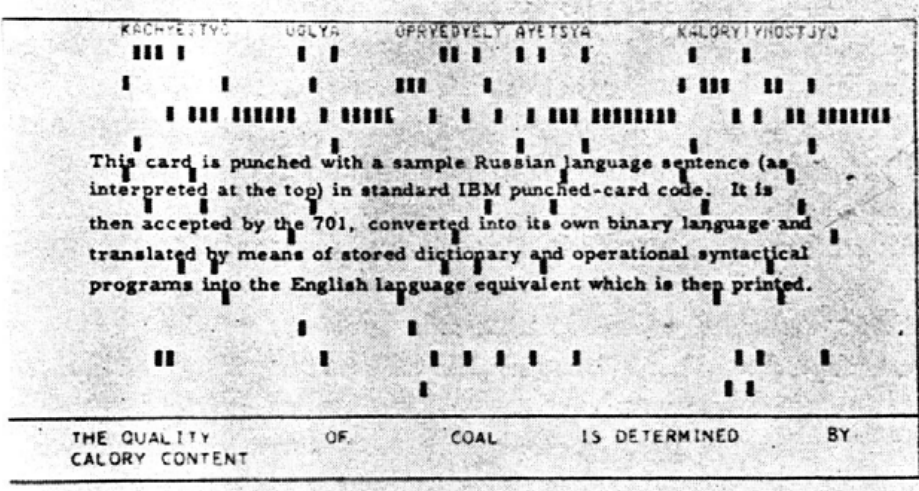
The algorithm is essentially a word-substitution program, using the 6 rules to disambiguate, and to decide whether to switch a word with a previous word. The word-order switch is necessary since Russian puts prepositions as word suffixes. For example, ugl-a would be word-substituted to angle-by, but must be translated as by angle.
The experiment was a hit, and there were some predictions of imminent breakthrough (Hutchins 2005):
- Such a device should be ready within three to five years… As soon as cards for Russian are completed, sets will be made for German and French. Then other Slavic, Germanic and Romance languages can be set up at will.
- 100 rules would be needed to govern 20,000 words for free translation.
From our perspective, these seem painfully optimistic. However, it was a common belief that electronic computers, like the IBM 701, were designed for numerical computation, something that is more difficult than natural language processing. As such, a machine translator needed not faster computers, but more data. Yet among the general optimism, there was a disquieting note:
the formulation of logic required to convert word meanings properly even in a small segment of two languages necessitates two and a half times as many instructions to the computer as are required to simulate the flight of a guided missile.
“701 Translator”, IBM Press release (1954-01-08)
One thing I dislike about some technical histories and overviews is that I keep getting a cotton-like, vaporwave feeling in the brain after reading them. It is easy to read an abstract story.
For example, many AI papers by OpenAI after 2020 has become like that. In any case, I looked up the program, which appeared in (Ornstein 1955) as a single giant flowchart. I didn’t read the spaghetti code in detail, but it seems to me that it first parses the input sequence into words and sub-words, then it starts from left to right, for each word/sub-word, find the rule that applies to it. Executing the rule would pick an English translation for that word/sub-word, and either switch that fragment of translation with the previous fragment, or not. There are 6 rules, of which I just copy one, since the others look similarly boring:
Choice-Rearrangement. If first code is
131, is third code of preceding complete word or either portion (root or ending) of preceding subdivided word equal to23? If so, adopt English equivalent II of word carrying131and retain order of appearance of words in output; if not, adopt English equivalent I and reverse order of appearance of words in output.
The following is a rough Python sketch. It just implements half of rule 3, but gives you an idea of how the program would go. I estimate that it should take about 100 lines to implement a fully correct version. Even this rough sketch tells you that it is a very 1950s kind of program, with imperatives and if-then statements everywhere, combined with table lookups.
dictionary = {
"ugl-": ("coal", "angle", 121, 0, 25),
"-a": ("of", "", 131, 222, 25),
...
}
stems = [word[:-1] for word in dictionary.keys() if word[-1] = '-']
suffixes = [word[0:] for word in dictionary.keys() if word[0] = '-']
def class Word:
def __init__(self, word, stems, suffixes):
self.stem = word
self.suffix = ''
for stem in stems:
for suffix in suffixes:
if word = stem ++ suffix:
self.stem = stem
self.suffix = suffix
return
def parse(sentence, stems, suffixes):
words = sentence.split(' ')
return [Word(word, stems, suffixes) for word in words]
def translate(words, dictionary):
translation = []
for i in range(words):
word = words[i]
if word.suffix = '':
...
if dictionary[word.stem]['code 1'] == 131:
if i > 0:
previous_word = words[i-1]
if dictionary[previous_word.stem]['code 3'] == 23 or (previous_word.suffix != '' and dictionary[previous_word.suffix]['code 3'] == 23):
flag = 2
else:
flag = 1
else:
flag = 1
if flag == 1:
translation.append(dictionary[word.stem]['code 1'])
translation[-2:-1] = [translation[-1], translation[-2]]
else:
translation.append(dictionary[word.stem]['code 2'])
...
else:
# Translate stem, then suffix. It's a bit tedious.
return translation.join(' ')The exact details on how the program was implemented on the IBM was non-trivial, since both the machine and the programming environment around it were designed for numerical computations, not discrete symbolic manipulations. (Sheridan 1955) described the details. The programming language LISP must wait until 1960 to appear. Dedicated to symbolic manipulations. It would dominate most of AI research until the 1980s.
Another interesting fact is the amount of restrictions placed on the demo: 250 words, each word having just 1 or 2 possible translations, and each Russian word is either a full word or a stem-suffix, etc. An even deeper restriction was entirely hidden from view: pronouns. In Russian, pronouns are often dropped when the verb form makes it clear. To avoid this problem, for all demonstrated sentences, the English pronouns occur only in translations of verbs in the third person plural.
Subsequent work
The Georgetown–IBM demo worked. The CIA started funding MT research at Georgetown University (eventually up to $1,500,000), and other MT groups sprang up in America, Europe, and the Soviet Union. In general, their approaches could be divided into three parts: word-for-word, syntax, and eclectic.
The idea of word-for-word translation is essentially a direct scale-up of the Georgetown–IBM demo, just with a much bigger dictionary and a few more local word-reordering rules. True, there are some ambiguities like “The vodka was good, but the meat was rotten.”, but we can just pick the most likely translation, or translate a multi-word Russian phrase directly to a multi-word English phrase, etc. Erwin Reifler exemplified the “solved by lexicography” approach:
Papers on MT are nowadays heavily weighted on the side of the development of structural linguistic procedures for the solution of MT problems, and very rightly so. But many of these problems can be solved by lexicography… in certain types of cases of higher frequency it is possible to solve grammatical and non-grammatical problems by lexicography and lexicographical procedures alone–that is, without the necessity of logical procedures and logical machine operations. Since our sponsors had asked us to concentrate, at least during the initial phases of our project, on the elaboration of a bilingual lexicon, we decided to try to achieve an optimum of lexicography which would solve as many of our bilingual problems as possible. The results of this lexicographical work were… almost 170,000 MT-operational Russian-English entries.
This was the AN/GSQ-16 translator, which would eventually be subsumed by SYSTRAN.
Similarly, at RAND corporation, they performed large-scale statistical analysis of corpus, used the analysis to write some Russian-English dictionary and reordering rules. Ran the program, checked the output, rewrote the dictionary and rules, etc. It was kind of a RAND-om gradient descent.
At MIT under Victor Yngve, the research agenda was fully based on syntax. A sentence in the source language is parsed into a syntax tree, then the syntax tree is transformed by some rotation, grafting, cutting, and pasting, and finally the leaf-words are substituted into the target language. To see an example use of this, consider the German sentence »Hans kommt heute abend an.«, which translates to “Hans arrives this evening”.. Here, “arrives” corresponds to »kommt … an«, and the distance between the two pieces of the verb can be arbitrarily long, thus no local transformation rule would work. However, though this is similar in spirit to Chomskyan linguistics, Chomsky was only briefly in the group, and his generative grammar was not used.
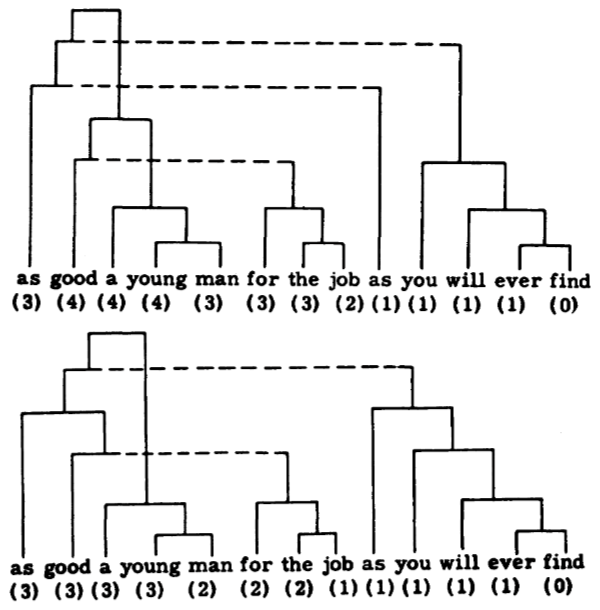
At Georgetown, the approach was more eclectic, with some syntax parsing and some statistical analysis with dictionary. Like most eclectic systems, it defies summary.
Meanwhile in the Soviet Union, MT research was based on a deep analysis of language at multiple levels (phonetic, phonemic, morphemic, surface syntactic, deep syntactic, semantic), similar to the Vauquois triangle, though they called it “Meaning–Text Theory”.

For details on this period, I refer to (Hutchins 2007).
Winter comes
Around 1964, there was an uneasy feeling around AI. The post-war flood of governmental funds was slowing as the optimistic “Science, the Endless Frontier” lost its shine. There were much bigger projects to do, like sending 2 men to the moon or 3 million to Vietnam. The general atmosphere was subdued. Eventually funding would be cut even more with the Mansfield Amendments of 1973, which limited ARPA to only funding projects directly relevant to military applications.
By 1966, it was estimated that roughly 20 million dollars (in contemporary dollars) had been spent on MT in the US, with Georgetown, at 1,317,239 dollars (93.5 percent from the CIA, 6.5 percent from the NSF) being the largest.. “In comparison, let us notice that in June 1952, when the First conference on Machine Translation convened at MIT, there was probably one person in the world engaged more than half-time in work on MT, namely myself [Bar-Hillel]”. The budget had been roughly ten thousand dollars.
In 1964, the US government created the ALPAC committee of 7 linguists “to advise the Department of Defense, the Central Intelligence Agency, and the National Science Foundation on research and development in the general field of mechanical translation of foreign languages”. The roster of names makes it clear that MT was a matter of state security. It was all well and good if MT could eventually reach human level performance in a few centuries, or if MT research could right now inform the science of linguistics and assist the universe’s ceaseless striving to rationally know itself, but let us never confuse the universal with the here and now.
“Are you looking for the Secret Name, Scharlach?” … in his voice Lönnrot detected a fatigued triumph, a hatred the size of the universe, a sadness no smaller than that hatred. “No. I am looking for something more ephemeral and slippery, I am looking for Erik Lönnrot…”
— Borges, Death and the Compass (1942)
The Georgetown–IBM experiment proved to be too good of a demo. The sentences were picked to present it in the best light, and the rules were written so that the machine would translate the sentences correctly. Subsequent MT research could not match the demo, and skeptics appeared.
Dorset is “a great conversationalist … but as a researcher I was unsure about him, whether he was just a figurehead or whether he was a bit of a fraud – the Georgetown MT demonstrations seemed always to be contrived; they made impressive publicity for the sponsors, but they soured the atmosphere by raising expectations that nobody could possibly fulfill.” … MT colleague Winifred Lehmann was overheard describing him as “a wart on the field of linguistics”.
— Old gossips quoted in (Gordin 2016)
The ALPAC committee worked for 2 more years before presenting the final report in 1966 (Committee et al. 1966). Most of the report is not on whether MT is possible, but on the economics of translating technical documents from Russian to English, and whether MT would be economically good enough for this within the next few years. For example, it calculated that since a machine-translated document takes longer to read, if a document were to be read by more than 20 people, human translation is more economical. What the report says about MT itself is fairly brief:
“Machine Translation” presumably means going by algorithm from machine-readable source text to useful target text, without recourse to human translation or editing. In this context, there has been no machine translation of general scientific text, and none is in immediate prospect. The contention that there has been no machine translation of general scientific text is supported by the fact that when, after 8 years of work, the Georgetown University MT project tried to produce useful output in 1962, they had to resort to post-editing. The post-edited translation took slightly longer to do and was more expensive than conventional human translation.
… Early machine translations of simple or selected text, such as those given above, were as deceptively encouraging as “machine translations” of general scientific text have been uniformly discouraging. However, work toward machine translation has produced much valuable linguistic knowledge and insight that we would not otherwise have attained.
… it is wise to press forward undaunted, in the name of science, but that the motive for doing so cannot sensibly be any foreseeable improvement in practical translation. Perhaps our attitude might be different if there were some pressing need for machine translation, but we find none.
Despite this, it resulted in a swift deep cut in governmental funding for MT research, not just in America, but also in the Soviet Union. Quite understandable. However, like the concurrent loss of funding for neural network research, it resulted in an AI winter for MT, and a general impression that MT had been debunked.
Its effect was to bring to an end the substantial funding of MT research in the United States for some twenty years. More significantly, perhaps, was the clear message to the general public and the rest of the scientific community that MT was hopeless. For years afterwards, an interest in MT was something to keep quiet about; it was almost shameful. To this day, the ‘failure’ of MT is still repeated by many as an indisputable fact… from time to time in the next decades researchers would discuss among themselves whether “another ALPAC” might not be inflicted upon MT.
The effect of the ALPAC report in 1966 was as great in the Soviet Union as in the United States. Many projects were not funded any more; machine translation went into decline. The authorities had seen the ALPAC documents and concluded that if the Americans did not think it worthwhile to support MT, if they did not think there was any hope of MT, then nor should we… [But] we had never pretended that we were doing actual machine translation, we were doing formal linguistics.
Igor A. Mel’čuk2 (2000), quoted in (Gordin 2020)
2 Melchuk was one of the founders of Meaning–Text Theory, which as you might imagine, believed in deep theoretical understanding, not in programs that seemed to work in practice. In a 2024 interview:
60 years later, this problem has been solved in a completely different way… Today’s machine translation using artificial intelligence is admirable, but it has nothing to do with the science of language. The machine translates brilliantly, but we learn nothing new about linguistics from it… In general, I am a typical armchair scientist. I am interested in knowing, not in being able to do something practical.
Igor Melchuk on non-traditional linguistics and machine translation — “System Block”
Such attitude will appear again and again among the “Chomskyans” or “Rationalists”, as we will see throughout this essay, is the common trend underlying logical AI research.
Yehoshua Bar-Hillel against machine translation – what he called FAHQT (Fully Automatic High-Quality Translation, or as I imagine him saying it, “Machine translation? Ah, FAHQT.”). The argument goes like:
- FAHQT requires general world understanding, because natural language is full of ambiguities that require general world understanding.
- General world understanding is “utterly chimerical and hardly deserves any further discussion’.
The standard example he gave was “The box is in the pen.”, where the issue is how to disambiguate the word “pen”. Does it mean the writing instrument, or an enclosure? For a machine to pick the right meaning, it must know that a pen cannot contain a box, while an enclosure can. This cannot be done by merely looking up every word in a dictionary, or drawing up its the syntax tree. It must have general world understanding, or common sense.
Assume, for simplicity’s sake, that pen in English has only the following two meanings: (1) a certain writing utensil, (2) an enclosure where small children can play. I now claim that no existing or imaginable program will enable an electronic computer to determine that the word pen in the given sentence within the given context has the second of the above meanings, whereas every reader with a sufficient knowledge of English will do this “automatically”.
Whenever I offered [the challenge] to one of my colleagues working on MT, their first reaction was: “But why not envisage a system which will put this knowledge at the disposal of the translation machine?” … What such a suggestion amounts to, if taken seriously, is the requirement that a translation machine should not only be supplied with a dictionary but also with a universal encyclopedia. This is surely utterly chimerical and hardly deserves any further discussion… Reasonable goals are then either fully automatic, low quality translation or partly automatic, high quality translation. Both are theoretically feasible and, for certain language pairs, attainable today though not yet on a commercial scale.
If FAQHT is impossible for all “existing or imaginable” programs, there can exist only two proper kinds of machine translation. One was automatic low-quality translation, and another was explicitly designed as a help, not a replacement, to human translators. The first kind was all there was, and Bar-Hillel called for researchers to work on the second kind.
Interestingly, it has mentioned “learning machines” only to not discuss it further, even though machine learning would turn out to be the key to general world understanding. This dismissal of machine learning would continue for quite some more years.
He presented his opinion more forcefully 4 years later in an editorial:
It seems now quite certain to some of us, a small but apparently growing minority, that with all the progress made in hardware (i.e., apparatus), programming techniques and linguistic insight, the quality of fully autonomous mechanical translation, even when restricted to scientific or technological material, will never approach that of qualified human translators and that therefore Machine Translation will only under very exceptional circumstances be able to compete with human translation.
… there is no prospect whatsoever that the employment of electronic digital computers in the field of translation will lead to any revolutionary changes. A complete automation of the activity is wholly utopian, since the fact that books and papers are usually written for readers with a certain background knowledge and an ability for logical deduction and plausible reasoning cannot be over-ridden by even the cleverest utilization of all formal features of a discourse. The hopes to the contrary which many of us had a decade ago just turned out to be by and large unrealizable. The quicker this is understood, the better are the chances that more attention will be paid to finding efficient ways of improving the status of scientific and technological translation–I am not qualified to discuss literary translation–including a judicious and modest use of mechanical aids.
Bar-Hillel’s objection is reminiscent of the Winograd schema challenge, which also tests for general world understanding. Indeed, even Terry Winograd had a tentative guess that the Winograd challenge is too challenging, though it is clearly just a weak guess, not a firm prediction like the previous quotes.
The limitations on the formalization of contextual meaning make it impossible at present – and conceivably forever – to design computer programs that come close to full mimicry of human language understanding.
What do we make of such criticism? At that point in time, there were three possible replies:
- Intelligence amplification: Instead of the mirage of replacing human translators, try to build little programs that augment human translators.
- Brute force logical programming: Scale up commonsense by hiring more linguists to program in increasingly large chunks of the world.
- AI is a mirage, and the failures of MT is a symptom of that.
From our vantage point, the actual solution turned out to be:
- The bitter lesson: Wait a few decades, then train a giant neural network on a trillion words from the Internet to give it general world knowledge.
There is a common mistake about the bitter lesson, that even Richard Sutton makes. It is not just that the bitter lesson is bitter, but also that it is difficult. People did not believe in it, not because they were afraid of bitterness, but because it was obviously stupid, a kind of straw man’s argument.
Consider the arguments of a latter-day Bar-Hillel:
The case against machine translation as a solution to practical problems is overwhelming and has been made many times. I do not propose to repeat it in any detail here. It will, however, be worth a few words to make a prima facie case for the implausibility of practical machine translation if only so that the contrast with realistic approaches to the problem will be more striking… There is a great deal that computer scientists and linguists could contribute to the practical problem of producing translations, but, in their own interests as well as those of their customers, they should never be asked to provide an engineering solution to a problem that they only dimly understand.
I want to advocate a view of the problem in which machines are gradually, almost imperceptibly, allowed to take over certain functions in the overall translation process. First they will take over functions not essentially related to translation. Then, little by little, they will approach translation itself. The keynote will be modesty. At each stage, we will do only what we know we can do reliably.
(Kay 1997)
Now we know that “engineering solutions to a problem they only dimly understand” was precisely the breakthrough in multiple fields. In this essay we would this appearing in speech recognition, TODO, TODO, and TODO. It also happened with AlphaGo, made by a team who only had Go amateurs, or diffusion artists made by engineers with minimal understanding of art. However, just try saying out loud, “I’ll solve translation just by training a sequence to sequence neural network, on a few million pairs of English-German sentence pairs. It won’t have a probabilistic interpretation, or a syntax tree, or morphological constraints. In fact I haven’t even taken a course in intermediate linguistics. But I have trained many neural networks. Surely if I can get the loss low enough, it will work.” The reasonable reply would be, “What hubris, to tackle a problem that has stumped decades of linguistic science with the brute reason of engineering! What Goodhart law, to expect minimizing loss will lead to the thing you actually want, which is translation? What alchemy, to expect to put in nothing but data and compute, and somehow create understanding in a machine, an understanding that you don’t have yourself?”.[^feynman-kac]
[^feynman-kac] Perhaps the Feynman–Kac anecdote illustrates this better.
> Kac went to Pasadena to lecture at the California Institute of Technology. Richard Feynman was in the audience. After the lecture, Feynman got up and announced: "If all mathematics disappeared, it would set physics back precisely one week." Without a pause, Kac responded: "Precisely the week in which God created the world."
>
> [@cohenLifeImmeasurableMind1986]
So perhaps...
> "If we fired all the linguists, it would set machine translation back precisely one week."
>
> "Precisely the week in which God struck down the Tower of Babel."To end this section, I quote from one of the authors of the ALPAC report an amusing anecdote about Yngve, which was an omen of the ultimate fate of logical MT:
There’s sometimes a strong scholastic emphasis, or current, which causes some psychologists to produce very closely reasoned ideas that aren’t checked at every point with experiment. Some of the theoretical linguists are like that. They are extremely plausible. But I know a fellow, Victor Yngve, who tried to write a transformational grammar of the English language, a reasonably complete one. It took him years and years and he never got it written. He kept finding difficulties that don’t appear when you have a few nice examples of what a transformation of grammar is supposed to be all about.
John Pierce, quoted in (Lyle 1979)
The alignment problem
The decade after ALPAC was more subdued. MT research continued, but with minimal government funding, and it often continued as a kind of computational study in service of basic research in linguistics. They typically followed the approach of Vauquois, that is, to take a sentence from one language, and parse it into higher and higher levels of abstraction, reaching an “interlingua” stage that is fully language-independent, then move back down again until one lands safely in the other language. It reminds me of taking an airplane across an ocean.
But MT was about to take a sudden turn away from theory.
In 1986, speech recognition was solved. Well, not exactly, but during the period of 1976–1986, a group of researchers in IBM managed to produce speech recognition systems better than ever before, by “firing the linguists”, and returning to the information-theoretic approach that Shannon and Weaver had back in the 1950s. Armed with compute, data, and a disregard for linguistic science, they got it to work, and in 1986, they decided to try the same trick, but this time with MT.
In our language, the idea was encoder-decoder translation, using Bayesian probability. Suppose we want to translate a sentence in foreign language \(f\) to an English sentence \(e\). We imagine that the foreign speaker was really trying to speak English, but somehow, words came out encoded as a foreign language, and our goal is to decode from it. This gives us 3 components:
- English language model: \(Pr(e)\), the prior probability of the speaker wanting to say \(e\).
- Encoder model: \(Pr(f | e)\), the conditional probability that the speaker would end up saying \(f\), if they wanted to say \(e\).
- Decoder: \(f \mapsto e\), the translator we want to construct.
The decoder is the maximum a posteriori solution:
\[ e^*(f) := \mathop{\mathrm{argmax}}_e Pr(f|e) Pr(e) \]
Once we have both \(Pr(f|e)\) and \(Pr(e)\), we have a machine translator. To obtain \(Pr(f|e)\) and \(Pr(e)\), the team used simple statistical models, not much more complex than n-gram models, with parameters estimated by expectation-maximization algorithm.3
3 We are skipping over the word-alignment part of the IBM models, which tells you which words in \(f\) corresponds to which words in \(e\). We still have an encoder-decoder architecture, but it’s more complicated.
The IBM team worked on this from 1986 to the early 1990s, and their state of the art performance led to a statistical revolution in MT. Compared to the theoretically principled MT of the past, the IBM language model was obviously wrong: languages are obviously impossible to be correctly modelled by an n-gram model, or the slightly more complex upgraded models they used. Where are the syntax trees, the constituencies, etc? Yet it did work, and it took over practical MT research.
Their primary dataset was the Canadian Hansard corpus – transcripts of proceedings from the Canadian parliament which were available in both English and French due to Canada’s bilingual policy. The Hansard parallel corpus contained around 3 million sentence pairs at the time. While substantial, it pales in comparison to monolingual English corpora to train \(Pr(e)\). English text was abundant from government documents, news archives, books, etc. In short, the encoder-decoder structure was adapted for the data regime of abundant monolingual (used to train \(Pr(e)\)) but limited parallel text (used to train \(Pr(f|e)\)).
In the introduction to a “Special Issue on Computational Linguistics Using Large Corpora”, (K. W. Church and Mercer 1993) argued that “Rationalism”, having been reigning since 1970s, was facing legitimate challenge by “Empiricism” again, for three reasons: more compute, more data, and a culture centered on evaluation.
The emphasis today on empirical methods in the speech recognition community is a reaction to the failure of knowledge-based approaches of the 1970s. It has become popular once again to focus on high-level natural language constraints in order to reduce the search space. But this time, n-gram methods have become the methods of choice because they seem to work better than the alternatives, at least when the search space is measured in terms of entropy. Ideally, we might hope that someday parsers might reduce entropy beyond that of n-grams, but right now, parsers seem to be more useful for other tasks such as understanding who did what to whom, and less useful for predicting what the speaker is likely to say.
Someday parsers might help squeeze out some of this remaining half bit between the trigram model and Shannon’s bound, but thus far, parsing has had little impact… The issue remains as controversial as ever, as evidenced by the lively debate on rationalism versus empiricism at TMI-92, a recent conference on MT… The information theoretic approach to MT may fail for reasons advanced by Chomsky and others in the 1950s. But regardless of its ultimate success or failure, there is a growing community of researchers in corpus-based linguistics who believe that it will produce a number of lexical resources that may be of great value.
That was 1993. And the Internet was coming, and it kept coming, and it is still coming, and it just won’t stop coming.
When a user makes a search request like “IBM”, Google’s servers must retrieve not only website urls like www.ibm.com, but also a snippet view like “…IBM has been a global technology innovator…”. Therefore, Google had been crawling the Internet and storing a plain-text copy of the Internet regularly, with a size on the order of 100 TB as of 2003. (Barroso, Dean, and Holzle 2003) Once with such a large dataset, what could be done with it?
In 2006, Google Translate was launched. Early reactions were a mixture of fascination and sarcasm, leading to memes of hilarious Google translations that has survived to this day, even though the improvements has made it very difficult to do nowadays. Despite this, it was agreed that Google had achieved state of the art in statistical machine translation. How did it do it? By brutally scaling up.
In (Brants et al. 2007), the authors described how Google achieved such a feat. Despite possibly lower quality than a more sophisticated algorithm, the “stupid backoff” allowed them to train on 60× more data and run 10000× faster during inference. The largest model was trained on a dump of the Internet (January 2006) with 2 trillion tokens, 300M 5-grams, 16M vocab, 1.8 TB language model, took 1 day to train on 1500 machines. They noted that the more data they used, the higher the BLEU score got, and simply drew a straight line, expecting the model to keep improving if they did it on even more data.
The title was “Large Language Models in Machine Translation”. 10 years later, Large Language Models would be reborn in the guise of the Transformer, again out of research efforts to improve Google Translate.
ABBYY’s last stand
18 years after his introduction (K. W. Church and Mercer 1993), Kenneth Church proposed in 2011 a 20-year cycle between Empiricism and Rationalism, and argued that we were on the brink of a return to Rationalism:
- 1950s: Empiricism (Shannon, Skinner, Firth, Harris)
- 1970s: Rationalism (Chomsky, Minsky)
- 1990s: Empiricism (IBM Speech Group, AT&T Bell Labs)
- 2010s: A Return to Rationalism?
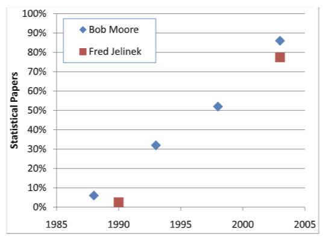
When we revived empiricism in the 1990s, we chose to reject the position of our teachers for pragmatic reasons. Data had become available like never before. What could we do with it? We argued that it is better to do something simple than nothing at all. Let’s go pick some low hanging fruit. While trigrams cannot capture everything, they often work better than the alternatives… That argument made a lot of sense in the 1990s, especially given unrealistic expectations that had been raised during the previous [expert systems] boom. But today’s students might be faced with a very different set of challenges in the not-too-distant future. What should they do when most of the low hanging fruit has been pretty much picked over? … we should expect Machine Translation research to make more and more use of richer and richer linguistic representations. So too, there will soon be a day when stress will become important for speech recognition.
It has been 15 years. The pendulum is still probing the unknown depths of Empiricism.
In 1989, ABBYY was founded in Moscow. Its first product was an electronic dictionary, followed by an ABBYY FineReader optical character recognition (OCR), which became an international hit. With such a stable cash flow, ABBYY aimed higher: It would develop Compreno, a “Natural Language Compiler” (NLC) based on linguistic theory. Compreno would take the lowest level of Vauquois triangle (actual language) to the highest level (language-independent meaning, interlingua), which can then be decompiled to another language. It was Meaning–Text Theory in action.
The founders of ABBYY were students of Moscow PhysTech, and ABBYY already had hired linguists to work on its dictionaries and OCR, so it seemed only natural to implement the natural language compiler based on the science of linguistics.
Along with the programmers and machine learning specialists who held profitable products like FineReader and FlexiCapture (a smart, customizable payment recognition system for banks) on their shoulders, this cozy office houses dozens, and at its peak, hundreds of linguists. All of them are engaged in the formal description of the language within the semantic hierarchy of ABBYY NLC / Compreno.
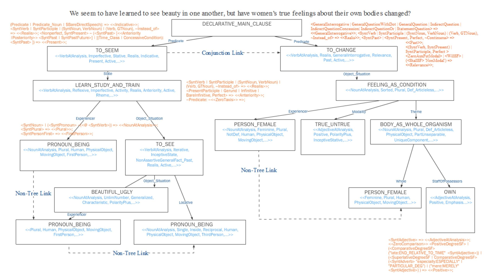
In the early 2010s, the cost of Compreno had reached $80 million, yet the finished Compreno translator was as distant as ever. Previews of the translator impressed journalists with cherry-picked examples, but they knew they could not compete with Google Translate. Still, too many had sunk their loving labor into Compreno to abandon it, so ABBYY pivoted it to what looks like CYC, something that boasts homonym resolution, filling in the blanks, information retrieval (in corporate archives) and extracting information from text.
It proved brittle like all logical AI systems do:
We had customers who needed, for example, to extract data on transaction participants from document scans in which the text was written in a kind of “legal dialect” of American English. When this text (with recognition errors, extra dots due to breadcrumbs on the scan and other artifacts) flew into the sophisticated NLC / Compreno analyzer, the output was most often an absolutely unpredictable mess with a bunch of messages about parsing errors… The variety of syntactic-semantic structures was almost greater than the (comparatively more predictable) variety of simple word chains of the source text. At some point, I realized that most of the time I was engaged in a war with Compreno output using regular expressions and other crutches, and I thought that I needed to leave ABBYY.
After leaving the company, I once took HSE computer linguistics students on a tour of ABBYY… One of the students, Pasha, joked that ABBYY employees climb up there during a thunderstorm and shout “I’m making a correct parser in 2018,” after which lightning strikes them. It was a cruel joke, but it hit the mark.
[Despite the success of Transformers,] ABBYY continued to cling to this “suitcase without a handle”, trying to combine the handwritten language model of Compreno and neural network approaches. And they probably would have continued further, if not for 2022.
After Russia invaded Ukraine in 2022, to avoid Western sanctions, ABBYY quickly distanced itself from its Russian origins, claiming to be a fully American company. To make good on this claim, it finally fired all its Russian employees and became a fully American company in 2024-10. Thus ended Compreno, 20 years and $80 million later, ABBYY’s bitter lesson (Skorinkin 2024)
The essay was in Russian, and I read it by pure Google Translate. It worked perfectly.
Speech
Early days
Automatic speech recognition (ASR) is the conversion of speech audio to text. Its history resembles the history of MT.
It is hard to know what is closest at hand. Speaking is so natural that it takes effort to even notice that there is structure within the smallest sound, and it required the invention of the phonograph to notice the fine details of even a single vowel. In the early 20th century, as AT&T connected all of America with telephone lines, it funded research into efficient coding of speech, with the hopeful goal of saving on bandwidth. The rough idea is similar to the idea of mp3: If the engineers knew what mattered and what didn’t matter in human speech recognition, then they could squeeze more telephone calls within the same line.
Concretely, one could imagine a device on a telephone that converts all the richness of a speech-stream into just 20 bit-streams, then braid those 20 bit-streams into a narrow frequency band, send it all the way across America, whereupon it gets decompressed back to the speech-stream, impoverished but still perfectly recognizable.
It began with recognition of individual spoken words, which was possible by featurizing the sound, then match that sequence of feature vectors against the template feature vectors.
An illustrative example of this early period of ASR was reported in (Denes 1959). It could spell individual word phonetically (i.e. “cartoon” spelled as “katun”) – if the word is made out of only 4 vowels and 9 consonants, in an alternating fashion (i.e. no two vowels together, or two consonants together).
The machine first uses a filter bank to featurize the input sound. Pairs of outputs from the filter bank are then multiplied to measure how likely the sound is a phoneme. For example, the outputs from 200 Hz and 320 Hz are multiplied together, and that measures how likely the sound is “m”, because the two principal frequencies of “m” are close to 200 Hz and 320 Hz. Finally, a computer selects the most likely phoneme, based on the multiplied results and a simple statistical model of how likely a phoneme is to follow the previous phoneme.
The following pseudocode describes how the system works:
def featurize(audio_segment):
filter_bank_features = filter_bank(audio_segment)
return {
"m": filter_bank_features["200 Hz"] * filter_bank_features["320 Hz"],
"i": filter_bank_features["250 Hz"] * filter_bank_features["3200 Hz"],
...
}
def find_phoneme(audio_segment, previous_phoneme, phoneme_probability_model):
features = featurize(audio_segment)
phoneme_probabilities = phoneme_probability_model(previous_phoneme)
best_score = 0
best_phoneme = ''
for phoneme in features.keys():
score = features[phoneme] * phoneme_probabilities[phoneme]
if score > best_score:
best_phoneme = phoneme
best_score = score
return best_phoneme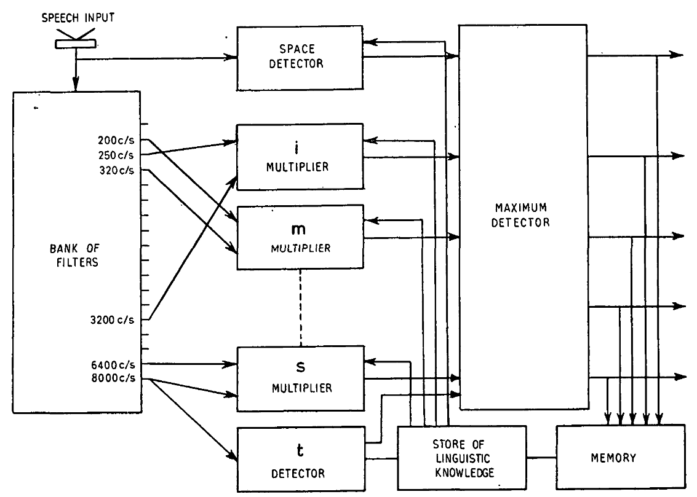
Logical ASR
In typical generative grammar of language, you start with a SENTENCE, and repeatedly rewrite it until you end up with a sentence like Did you hit Tom?
Here, we push this one level deeper. After a sentence is generated, you substitute each word with its standard pronunciation, resulting in a sequence like dɪd/juː/hɪt/tɒm. Next, apply more rewriting rules to account for the fact that we don’t pronounce a whole sentence like individual words, but always “glide two words together”. For example, did you would actually be pronounced like dija, so we account for this with a rewriting rule d/juː -> jə. Similarly, the double t in hit Tom would be merged to a single t, so we add a rewriting rule t/t -> t. And there is no gliding at ə/h, so we add əh -> əh.
After this transformation, we obtain dɪjəhɪtɒm
This is the basic idea of text-to-speech via generative grammar. For speech-to-text, one would first convert the speech audio into a sequence of phonemes,4 then reverse the generative grammar in the same way as one uses generative grammar to parse the syntax tree of a sentence.
4 Sometimes you see people distinguish “phone” from “phoneme”. In those cases, they make a finer distinction between what the speaker intends to say vs what actually comes out of their mouth. In this example, the phoneme would be ... while the phone would be .... This precision is too annoying to me, so instead I will just say that the “phone” is just another “phoneme”, and the speaker intends to say the phoneme sequence ..., which the speaking cortex in the brain encodes into the phoneme sequence ... to save work for the throat muscles.
Unlike other aspects of natural language processing, speech-to-text had never abandoned statistics. Even the most ardent logical AI researcher admit that speech is filled with dirty random noise, and so must be processed by statistical filtering before it is clean enough to run symbolic programs over.
There were many logical ASR systems tried, but most of them consisted of 3 layers:
- Filter and segment speech into phone-like units, usually in steps of 10 milliseconds (because vowel formants are on the order of 100 Hz).
- Use pattern recognition to identify the segments
- Find the utterance that best fits the identified segment string.
Roughly speaking, “the fit” is usually measured by how many rules are broken, with the rules written by expert linguists. Some examples would make the structure clear.
ARPA Speech Understanding Project
Like MT, there was also plenty of funding for ASR from the government. And we have not seen the last of John Pierce! 5 years after the ALPAC report debunked MT, he took aim at ASR with mostly the same arguments, but with even sharper language.
speech recognition is attractive to money. The attraction is perhaps similar to the attraction of schemes for turning water into gasoline, extracting gold from the sea, curing cancer, or going to the moon… It is clear that glamor and any deceit in the field of speech recognition blind the takers of funds as much as they blind the givers of funds. Thus, we may pity workers whom we cannot respect. People who work in the field are full of innocent (in their own view) enthusiasm. What particular considerations have led to this enthusiasm?
… Most recognizers behave, not like scientists, but like mad inventors or untrustworthy engineers. The typical recognizer gets it into his head that he can solve “the problem.” The basis for this is either individual inspiration (the “mad inventor” source of knowledge) or acceptance of untested rules, schemes, or information (the untrustworthy engineer approach).
Pierce gave the same answer as he gave in the ALPAC report. True ASR is impossible until a machine has a general understanding of language, which was very far away. What appears to be ASR is actually “artful deceit” made by mere engineering, not science. A true science of ASR is possible, by having a good scientific theory, then testing it, perhaps by building a device according to the theory, and see if it works as predicted.
The typical recognizer will have none of this. He builds or programs an elaborate system that either does very little or flops in an obscure way. A lot of money and time are spent. No simple, clear, sure knowledge is gained. The work has been an experience, not an experiment.
I don’t know what caused Pierce to fire off this fiery missive 3 years after the ALPAC report, but it did cause funding to decrease. (Jelinek 2005) Partly in reaction to this, ARPA started the Speech Understanding Project, a $15 million project to produce ASR, from 1971 to 1976. It funded 4 teams in 4 organizations, with the following goal: Demo a system that can do ASR on a fragment of English limited to 1000 words of vocabulary, and a single tiny domain. Accept new speakers after finetuning. At <10% semantic error, at 100 MIPSS (100 million instructions per second of speech).5
5 The full specification is
Accept continuous speech from many cooperative speakers of the general American dialect, in a quiet room over a good quality microphone, allowing slight tuning of the system per speaker, but requiring only natural adaptation by the user, permitting a slightly selected vocabulary of 1,000 words, with a highly artificial syntax, and a task like the data management or computer status tasks (but not the computer consultant task), with a simple psychological model of the user, providing graceful interaction, tolerating less than 10% semantic error, in a few times real time, and be demonstrable in 1976 with a moderate chance of success.
but as noted in (Medress et al. 1977, footnote 8), the report forgot to add in “100 MIPSS”.
By the end of 1976, the results were out:
Out of the 4 teams, only Harpy achieved the target – barely. It could recognize 1011 words, at 5% semantic error. It has size 1.2 MB. It costs 30 MIP to process one second of speech, and since it ran on a 0.4 MIPS PDP-KAI0, it takes about 5 minutes to process a single 4-second sentence, costing about $5 to process one sentence. Fine-tuning for a single speaker takes about 30 minutes, or $30.6
6 According to Cost of CPU Performance Through Time 1944-2003, it cost $500,000 to rent a PDP-KAI0 for 1 year, or about $1 per minute.
As of 2024, the SOTA ASR model is OpenAI Whisper, which OpenAI offers at a price of \(\$10^{-4}\) per second. Since $1 can buy you 1 hour of AI00 at \(10^{20} \;\mathrm{FLOP/hour}\), and assuming hardware utilization 10%, we have about \(10^{15} \;\mathrm{FLOP}\) to process 1 second of speech.
I took a double take on this. Are we really throwing 1 million times more compute on ASR compared to Harpy? But the numbers are numbers, and it does seem to checkout: OpenAI Whisper large has \(1.55\times 10^9\) parameters, and it featurizes 1 second of speech into \(100\) tokens of \(80\) dimensions each. So even if we ignore the quadratic scaling of attention, we would take \(10^{13} \;\mathrm{FLOP}\) to process 1 second of speech.
And \(10^{15}\) is also the number of synapses in the brain. The numbers all seem to come together too well. Sound-bite for thought…
Who would be willing to pay $5 to transcribe one sentence? Still, since the target was so ambitious, the project was still considered a great success:
In 1971, when the program started, perhaps the majority of informed technical opinion put general speech recognition by computers as not possible in the foreseeable future and perhaps not possible at all… Informed technical opinion can now be that general cost-effective speech input to computers is an attainable goal. That is now our opinion.
“How hard is the sentence understanding problem in the limited contexts investigated during the ARPA project?” In 1970, when compared with isolated word recognition, the problems seemed immense. After the limited success of Harpy, one becomes more optimistic about the abilities of future systems.
Harpy had the simplest architecture, with just two parts.
- The lower divides the input audio into 10 ms segments. Each segment is featurized to a single \(\mathbb{R}^{14}\) vector by Linear Predictive Coding. If two segments have similar features, they are merged.
- The upper part is a 15000-state transition graph. Each graph node is an annotated sound symbol. There are 98 sound symbols like
G BURST 1orIY. The annotations allow the system to convert any path through the graph into a text sentence, like “Give me a textbook by Gauss.”.
They first designed a complete context-free grammar that incorporates phonetics, syntax, and semantics for making document retrieval requests in a highly simplified and stilted syntax. The 98 sound symbols were constructed by “careful analysis of 747 sentences”. After the design was complete, the grammar was automatically compiled into the 15000-state transition graph.
To perform speech recognition, the lower part gives the upper part the featurized sequence of the audio \(v_1, v_2, \dots, v_n\), and the upper part beam-searches for a path \(x_1, x_2, \dots, x_n\) that approximately minimizes \(\sum_i \| v_i - v(x_n)\|\), where \(v(x_i)\) is the template feature vector for the sound \(x_i\).
To finetune the system for a new speaker, the new speaker simply speaks 20 sentences designed for finetuning, and the system would recalculate the 98 template feature vectors.
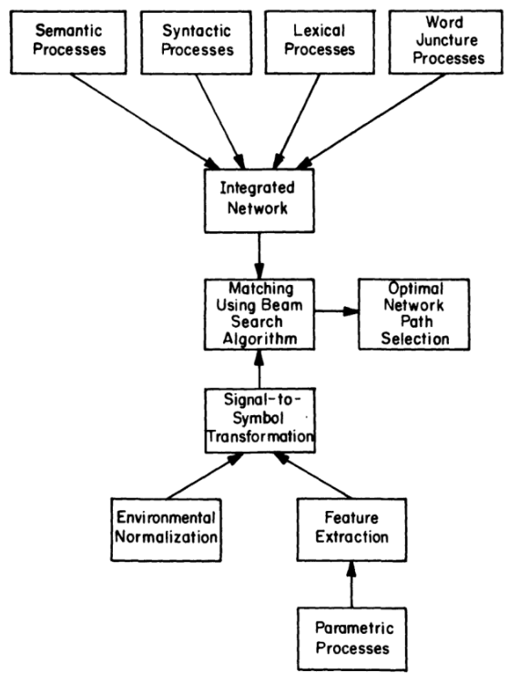
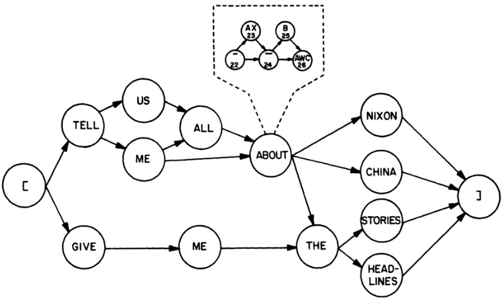
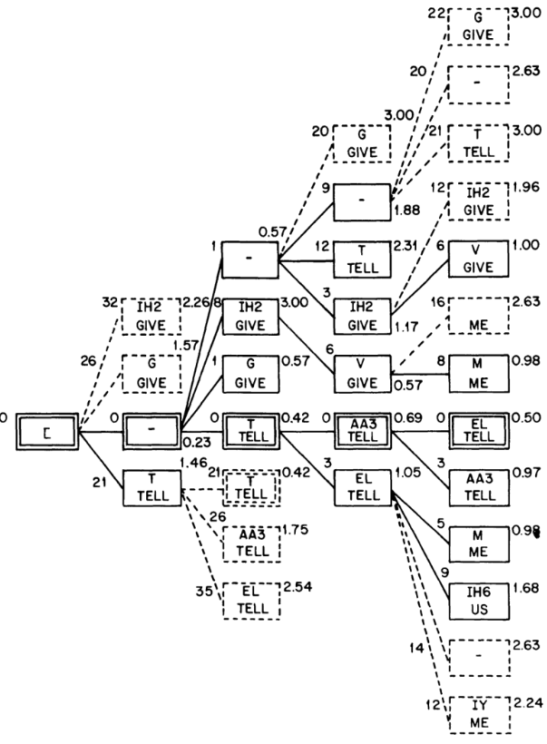
Significantly, despite using a beam search, Harpy did not use a probabilistic model of language. It essentially treats language as Chomsky-nonrandom, and all the randomness comes from imperfect matching between the real feature vectors and the template feature vectors. Despite this, it out-performed other systems that did. It seems that the problem was that there was insufficient data to estimate the probabilities in a probabilistic language model.
Several of the speech understanding systems used estimates of the probability of a phonetic or lexical decision given the acoustic data in scoring the goodness of a theory, and each seems to have gotten into trouble by so doing. The problem is to analyze enough data to be sure of the probability of infrequent confusions. This is nearly impossible if one wants to take into consideration factors such as phonetic environment.
Just as significant, there was a lot of artificial intelligence, but very little machine learning. All the formal grammars were hand-written. It is revealing that in a comprehensive review of ASR (D. R. Reddy 1976), “knowledge acquisition” took up less than 2% of the whole paper. And what little it said comes down to that learning-based methods require a large dataset of carefully and densely annotated audio, which was expensive and did not exist.
The last great attempt at logical ASR was the Hearsay-II, a further development from Hearsay, an unsuccessful entrant to the ARPA Speech Understanding Project. It was a towering giant with 7 levels, from “data base interface” and “phrase” all the way down to the “segment” and “parameter” and 15 knowledge sources (collection of rules) for going up and down the levels of abstraction. To handle this pandemonium of knowledge sources, it uses a “shared blackboard” architecture, so that each source can chime in about whatever is currently being interpreted. This allowed it to still work even if some sources are removed, and to improve whenever any source gets added or upgraded.
On one hand, it is great for interpretability, as one can trace through the entire structure and see exactly how any spoken sentence is parsed into a textual sentence. On the other hand, the interpretation took 39 steps and looks like:
Step 23. KS: PREDICT & VERIFY*.
Stimulus: BY+FEIGENBAUM+AND+FELDMAN+]* (phrase).
Action: Predict ten preceding words. Reject five: ABSTRACTS, ARE, BOOKS, PAPERS, REFERENCED. Find two already on the blackboard:
ANY* (65,24: 49),
THESE (25, 28:49).
Verify three more:
ARTICLE (25, 9:52),
WRITTEN (25, 24:52),
ARTICLES (10, 9:52).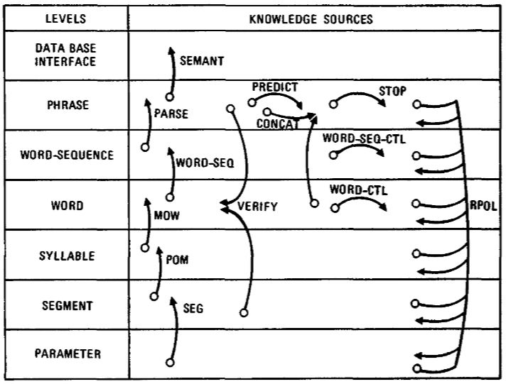
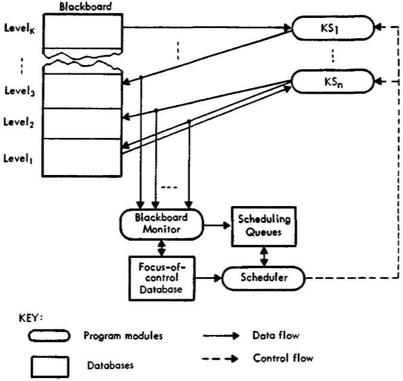
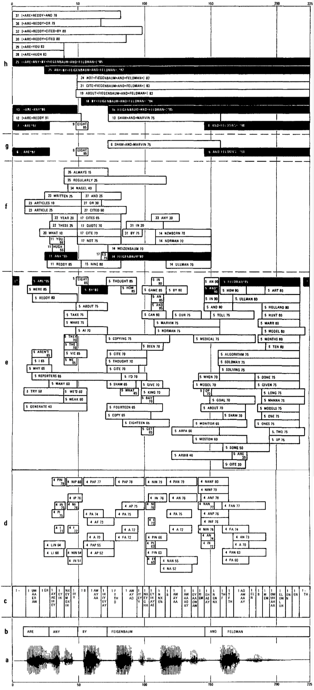
Linguists fired
Every time I fire a linguist, the performance of our speech recognition system goes up.
— Frederick Jelinek (1988) (not apocryphal!)
Frederick Jelinek would go down in history as the one who fired linguists, but he did not start his life this way. In 1961, he sat in Chomsky’s lectures, and “got the crazy notion that I should switch from Information Theory to Linguistics”. His PhD advisor forbade him, so he remained in information theory. After graduation, he tried collaborating with the eminent linguist Charles Hockett, bu Hockett then turned to composing operas. “Discouraged a second time, I devoted the next 10 years to Information Theory.” (Jelinek 2009)
In 1972, he left academia and joined IBM, where he worked on ASR. The project started with two linguists, but they got frustrated and left of their own accord, leaving behind engineers and physicists with little understanding of linguistics.7
7 More details about this funny episode:
When handling natural speech, the main question was how to estimate the language model \(Pr(W)\). There was no simple way of achieving this. We thought that the right approach ought to be somehow related to English grammar. The linguist Stan Petrick, while he still was with us, said “Don’t worry, I will just make a little grammar.” Of course he never did, and the phrase acquired a mythical status in the manner of “famous last words.”
When our Continuous Speech Recognition group started its work at IBM Research, the management wanted to make sure that our endeavors were guided by strict scientific principle. They therefore placed into the group two linguists who were going to guide our progress. Both linguists were quite self-confident, sure that fast progress will be possible. For instance, when we (trained as engineers or physicists) were at a loss how to construct a language model, one of the linguists declared “I’ll just write a little grammar.”… After about a year of frustration the linguists left our group, returned to their basic research, and we were free to pursue our self-organized, data driven, statistical dream… mostly of engineers and physicists. Only 3 or 4 people out of 10 had any previous experience with speech. None had graduate training in that field. But several of us had a background in Information Theory and that influenced our thinking.
It was unclear what exactly frustrated the linguists, but probably it was because they did not want, or did not have, the stamina to produce generative grammar for non-toy English:
In the 1970s NLP and ASR research was dominated by an artificial intelligence approach. Programs were rule-based, expert systems were beginning to take over… The purest linguists based their work on self-constructed examples, not on the prevalence of phenomena in observed data. As already mentioned, strict distinction between training and test was frequently ignored. Grammars were being written that applied to less than dozen verbs.
This dedication to toys and “microworlds” rather than would appear again later in the saga of SHRDLU.
The group naturally reproduced the information-theoretic framework for MT proposed by Shannon and Weaver, and adapted it directly to ASR.8 In the framework, there are 4 components:
8 Apparently the idea was obvious as soon as you think about ASR in the mindset of information theory.
As to our problem formulation, we were later somewhat surprised when it was revealed to be almost common sense. In fact, it was probably Bob Mercer who found the following quotations in an article by Weaver (1995):
When I look at an article in Russian I say: This is really written in English but it has been coded in some strange symbols. I will now proceed to decode it… the matter is probably absolutely basic – namely the statistical character of the problem.
- A language model: \(Pr(\text{text})\). This models how a human thinks up what to say in its head.
- A model of the speaker: \(Pr(\text{sound}|\text{text})\). This models how the text to be spoken gets converted into actual sound out of its mouth.
- Audio preprocessor: \(\text{sound} \mapsto \text{features}\)
- Decoder: \(\text{features} \mapsto \text{text}\)
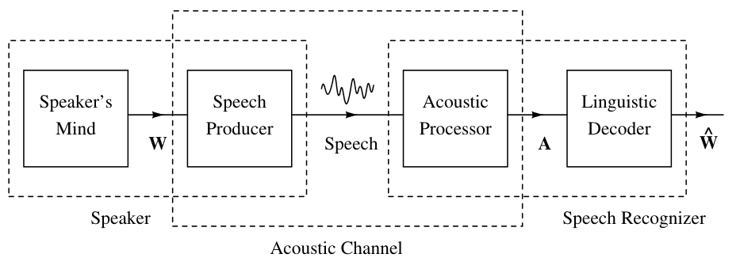
Step 3 is “feature engineering”, and it has been fairly static in speech processing: apply some high-pass filter, compute the spectrogram, do some more filtering, etc. Step 4 is maximum a posteriori estimation, exactly the same as in the IBM alignment model:9
9 Not a coincidence. The IBM team did ASR first, and once that succeeded, proceeded to trying the same trick with MT in 1986.
we embarked on MT in 1986 when we sought a new area to which to apply our statistical, self organized techniques. Besides, we had 15 years of ASR work behind us and those who switched were also attracted by the change as well as the possibility of picking some “low hanging fruit”. We had two ideas: to use the noisy channel paradigm to formulate the problem (see Figure 3), and to base our learning on parallel texts. (Jelinek 2005)
\[ \text{text} = \mathop{\mathrm{argmax}}_{\text{text}} Pr(\text{text}) Pr(\text{sound}|\text{text}) \]
Step 1 of this framework turned out to be the critical idea. In the pure Chomskyan viewpoint, step 1 is illegitimate. In the information-theoretic viewpoint, step 1 is essential.
TODO Write about how this forced them to think about a different way to measure success. If they gave up the idea of either-or, then how does one tell if the program was improving? Inspired by Harpy, they decided to measure the branching factor … then perplexity.
It was of course possible, and even obvious, that one can combine the best of both worlds, to combine both linguistic insights and statistical methods, such as a probabilistic CFG. However, they simply trained a dumb trigram language model on a large corpus. From what Jelinek said later,10 my guess is that they did try such “best of both worlds” approach, but the dumb trigram model just worked better.
10We were never reluctant to include linguistic knowledge or intuition into our systems: if we didn’t succeed, it was because we didn’t find an efficient way to do include it.
11 It was called such because the team took over a previous logical ASR system called “Rayleigh”. Its design was typical Chomskyan:
The front end of the Raleigh system converted the speech signal… into a sequence of phoneme-like labels (100 labels per second), using an elaborate set of hand-tuned rules that would soon be replaced with an automatically trained procedure. The back end converted these labels into a sequence of words using an artificial finite-state grammar that was so small that the finite-state machine could be written down on a single piece of paper… very often phones were simply mislabeled. The back end was designed to overcome these problems by navigating through the finite-state network, applying a complicated set of hand-tuned penalties and bonuses to the various paths in order to favor those paths where the low-level acoustics matched the high-level grammatical constraints.
The IBM project, compared to the others, was definitely big-data. This served them well for statistical ASR, and would soon serve them well again for statistical MT. They started with a toy model of language called “New Rayleigh”, which is essentially a Markov chain model that generates sentences up to 8 words long, from a vocabulary of 250 words.11
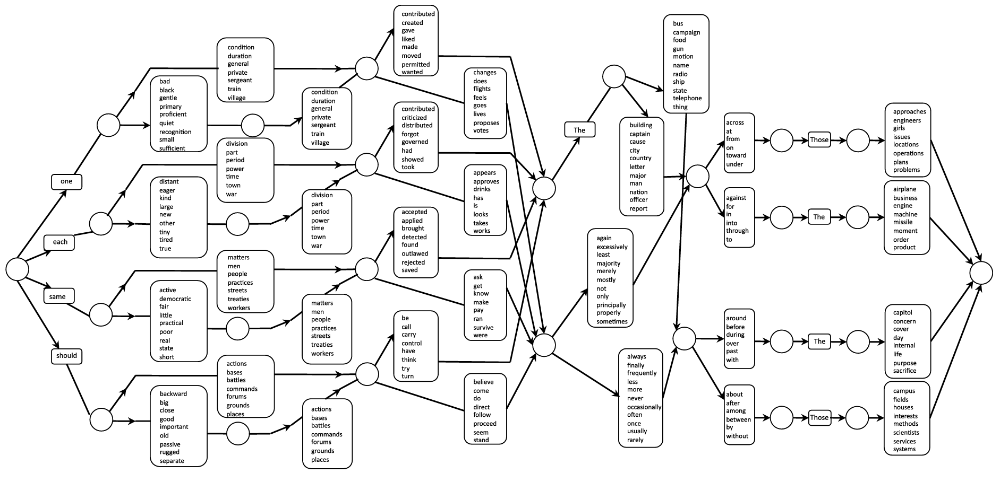
They soon produced an ASR model that achieved perfect accuracy on this, so they had to go bigger. The next dataset they obtained was the “laser patent corpus”, consisting of 2 million words of patent applications in laser technology, with a vocabulary size of 10,000, twice as large as the Brown Corpus (1961). They used this to train a 3-gram language model. The road to this dataset was quite circuitous, which anyone who has tried making a non-toy dataset can relate:
The struggle to compile a suitable training corpus featured throughout the CSR [Continuous Speech Recognition] group’s first decade. The researchers first considered using a collection of digitized IBM manuals, but found the vocabulary to be too extensive as well as so technical that it proved “difficult to pass … off as English.” They attempted to produce their own corpus, enlisting the wife of a lab staff member to type approximately a million words of text from children’s novels, but there, too, the vocabulary proved too large for their purposes. Next, the group acquired a collection of laser patent text from the US Patent Office, which was both sufficiently extensive in size and sufficiently narrow in vocabulary that they were finally able to extract a million words of running text confined to a thousand-word vocabulary. Though the laser patent corpus was considered “naturally occurring,” it was in fact meticulously constructed, even before researchers discarded all sentences containing vocabulary outside of the thousand most frequently occurring words. The complete patent text had to be first “subjected to intensive hand and computerized editing”: eliminating duplicates, merging spelling variations, and substituting scientific symbols and formulas. The claims sections of the patents proved especially problematic due to “highly stylized” legal language, and were ultimately excised entirely.
By the 1980s hardware improvements allowed the IBM researchers to expand their recognition vocabulary to five thousand words. They also compiled over 100 million words of data from a variety of sources, including public domain books and magazines from the American Printing House for the Blind, the records of the Amoco oil corporation, and 2.5 million words of office correspondence supplied by physicist Richard Garwin, who, with the aid of four secretaries, maintained computer-formatted duplicates of all of his correspondence. The most substantial collection in this period, however, came as a direct result of IBM’s unique industry dominance: the landmark federal antitrust lawsuit filed against the company in 1969. The case, which spanned thirteen years before it was finally dismissed in 1982, included testimony from 974 witnesses with resulting transcripts that totaled over one hundred thousand pages. The operation to digitize the deposition transcripts during the trial was so prodigious that it required a staff of dedicated keypunch operators large enough to fill a facility the size of a football field in White Plains, New York, where IBM’s Data Processing Division was headquartered. While the suit itself proved extremely costly for IBM, its transcript digitization efforts provided the CSR group with their largest and most robust text collection, resulting in a corpus of one hundred million words. Finally, the CSR group discovered the Hansard corpus, a collection of digitized transcripts of the Canadian Parliament official proceedings in both English and French, in the mid-1980s and incorporated an additional hundred million words from its English text into their language model.
(Li 2023)
In 1976, their ASR system had already reached state of the art performance. On the same task as the ARPA project, it reached higher accuracy, and only took 30 MIP to process 1 second of speech. (D. R. Reddy 1976) Though logical ASR continued with systems like Hearsay-II (1980), as the 1980s went on, none could deny the practical success of statistical ASR anymore, even if, compared to logical ASR, statistical ASR was far from linguistic theories of human speech recognition.
In the 1990s, all state of the art ASR were statistical, usually HMM-based. Such a model has multiple levels.
At the top level, there is a Markov chain that serves as a language model, which emits individual words. This is usually an n-gram model, where \(n\) is usually 3. In such a model, each node is a 3-gram. For example, the model can have state transitions like “- - what” → “- what is” → “what is the” → “is the last” → …, and it would emit “what”, “is”, “the”, “last”, …
This sequence of words is then converted to a sequence of phonemes, like “wɒtɪzðəlɑːst”. Each phoneme, like “ɪ”, corresponds to a trained Markov chain. That is, we have a Markov chain with around 3 to 5 states that emits feature vectors corresponding to a possible pronunciation of “ɪ”.
We can even hand-write such a Markov chain, as an example. We would start by collecting many recordings of “ɪ”, then cut these into three parts: the start, the middle, and the end. We convert each part into a feature vector: \(v_0, v_1, v_2\). We give each feature vector a state in the Markov chain. A trajectory through the Markov chain would start at \(v_0\), stay there for a short while, then randomly jump to \(v_1\), stay there for a long while, and then randomly jump to \(v_2\), stay there for a short while, and finally jump to the “END” state. We would assign the transition probability \(Pr(v_2 | v_2)\) to be roughly \(1-1/N\), where \(N\) is the average number of 10-ms segments that it takes to pronounce the middle of “ɪ”.
The above system is the basic idea. It does not handle the effect of gliding between phonemes, like how “did you” would be pronounced as “dija”. The standard way to handle this was the triphone model. The triphone model accounts for how a phoneme is changed by its two neighbors. For example, in the previous example, the “ɪ” should really be pronounced in the context of “tɪz”. So, we would have a Markov chain just for “tɪz”, which would generate a sequence of feature vectors that corresponds to how “ɪ” would be pronounced if it appears in the context of “tɪz”. Since English has about 50 phonemes, a triphone model need ~2500 Markov chains, which explains why quad-phone models, or more, had not been popular. Even if one had the appetite for it, there was not enough data to train them.
By late 1990s, the ASR technology stabilized around the gaussian mixture HMM (Huang, Baker, and Reddy 2014), where the lowest level of HMM does not emit a feature vector \(v\), but a gaussian mixture distribution \(\sum_i p_i \mathcal N(\mu_i, \Sigma_i)\) of feature vectors. You can add even more epicycles upon epicycles to account for more complex features like omitting phonemes, phonotactic constraints, prosody, etc.
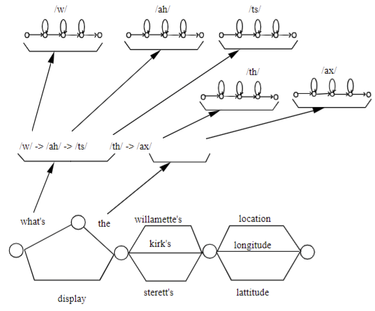
Unlike in the case of MT, the collapse of logical AI in ASR was decisive. Statistical ASR completely replaced logical ASR in the 1990s, after which logical ASR was never revived. There were two reasons for this. One is the familiar scaling story of data and compute:
As computers increased in power, ever greater tracts of the heuristic wasteland opened up for colonization by probabilistic models. As greater quantities of recorded data became available, these areas were tamed by automatic training techniques. Today… almost every aspect of most speech recognition systems is dominated by probabilistic models with parameters determined from data.
Another is the public benchmark culture. The ARPA SUR project not only demonstrated that ASR was possible, but also gave rise to the benchmark-focused culture of ASR, which allowed the best methods to rapidly spread through the community:
ARPA (and then DARPA) funded a number of new speech research programs, beginning with 1000-word speaker-independent read-speech tasks like “Resource Management” (Price et al., 1988), recognition of sentences read from the Wall Street Journal (WSJ), Broadcast News domain (LDC 1998, Graff 1997) (transcription of actual news broadcasts, including quite difficult passages such as on-the-street interviews) and the Switchboard, CallHome, CallFriend, and Fisher domains (Godfrey et al. 1992, Cieri et al. 2004) (natural telephone conversations between friends or strangers). The ARPA competitions resulted in wide-scale borrowing of techniques among labs since it was easy to see which ideas reduced errors the previous year, and the competitions were probably an important factor in the eventual spread of the HMM paradigm.
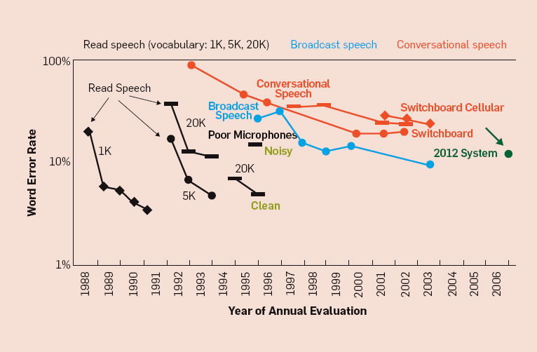
This was not the end of the history, however. Once ASR became a statistical problem, one immediately has the problem of feature engineering. Here, the history is similar to that of vision. One begins by imitating the human phoneticians with a nearest-neighbor matching to phonemes, and proceeds to handcrafted features computed over the audio spectrogram, to NN features learned over transforms of the spectrogram, and finally to NN features learned directly over the spectrogram. (Huang, Baker, and Reddy 2014) However, the story must be left for a future essay.
A farewell to linguists
What was so radical about Jelinek’s approach?
One, to believe in the probabilistic system at all was a breakthrough during the Chomskyan period. As Liberman recounts in an anecdote in the 1970s:
[Kenneth Church was] applying context-free parsing to phonotactic speech recognition, assuming a non-stochastic grammar. I suggested that Ken should find or create a collection of phonetic transcriptions, and use it to associate probabilities with his rewrite rules. Ken’s response was to quote Richard Nixon’s remark about Daniel Ellsberg: “We could kill him–but that would be wrong.” Further discussion elicited a quote from one of his AI lab professors: “If you need to count higher than one, you’ve made a mistake.”
Two, to throw away preconceptions of what the language model could be, and let results speak. He proceeded directly to using a 3-gram not because it resembles anything like how people really produce language, but because it works.
In the future the design of a LM for a naturally generated text will probably involve considerations of syntax. semantics. and discourse pragmatics. So far no one has accomplished this.
Three, to believe in the power of big data and big compute.
Our models are derived from as much actual speech data as we can obtain and handle computationally. We have devised methods of automatic model computation, thus minimizing or completely eliminating human intervention. Our strategies are not based on rules developed from trying to intuit how people recognize sentences (as is prevalent elsewhere), although the basic structure of our models is, of course, man-made. This approach is both more accurate and more flexible; as the speaker or the components of the system change, our self-organizing programs remain valid, and computer time is all that is required to adjust to a new configuration.
More presciently, he was even considering the possibility of throwing away the preconceptions of what the features could be, and let data speak:
Because we have found it more fruitful to view the acoustic processor as a data compressor than as an artificial phonetician, we do not attempt to identify phonetic segments in the continuous speech.
Previous MT systems typically performs multi-step processing on a raw audio signal, and somewhere in the middle, the audio signal would be transformed into a phonetic transcription. Jelinek, instead of following tradition and featurize audio into a list of phonemes (“an artificial phonetician”), just proposed to featurize audio in whatever way that seemed to work better for the system. As far as I see, this was not used in HMM ASR during the 1990s, but we know that automatic feature learning would finally be vindicated by neural networks around 2010 as the encoder-decoder architectures trained fully end-to-end (Graves et al. 2006; Chorowski et al. 2014)
In 2005, near the end of his life, Jelinek admitted that his quote was, despite his best hopes, genuine.
Whenever I fire a linguist our system performance improves. I have hoped for many years that this quote was only apocryphal, but at least two reliable witnesses have recently convinced me that I really stated this publicly in a conference talk (Jelinek, 1998). Accepting then that I really said it, I must first of all affirm that I never fired anyone, and a linguist least of all. So my motivation is defensive: to show that neither I nor my colleagues at IBM ever had any hostility to linguists or linguistics. In fact, we all hoped that linguists would provide us with needed help. We were never reluctant to include linguistic knowledge or intuition into our systems: if we didn’t succeed, it was because we didn’t find an efficient way to do include it.
Reflecting on a lifetime of multiple near-linguistic experiences, Jelinek seemed regretful. It is not that he wanted to fire linguists, it was simply that, somehow, attempting to incorporate linguistic expertise hurt performance. He died in 2010, just in time to miss the deep learning revolution that fired the last linguists.
the statistical model of language with which he had so successfully replaced linguistic rules was a simple word trigram – i.e. a very crude model of three word sequences. Whilst it was obvious to everyone that this model was hopelessly impoverished, in practice it had proved almost impossible to improve on. However, in the year 2000, Fred published a paper with one of his students called “Structured language modeling for speech recognition”. It sets out a principled way to incorporate linguistics into a statistical framework and as well as representing a significant step forward in language modeling, it has helped bridge the gap between speech engineers and the hitherto diverging computational linguistics community. In 2002, it received a “Best Paper” award and the citation read “for work leading to significant advances in the representation and automatic learning of syntactic structure in statistical language models”. It seemed somehow fitting that 25 years after starting the movement towards statistical approaches, Fred sought to re-engage with aspects of more traditional linguistics. I hope Chomsky read the paper and enjoyed it as much as we speech technologists did.
Text to speech
While this section is titled “Speech”, we have only discussed speech-to-text. Naturally, there is also the direction of text-to-speech (TTS). Here the history is more compressed, if for the simple reason that humans are really good at understanding speech. Even the most primitive kinds of text-to-speech was usable, and it was merely a matter of making it cheaper and less robotic-sounding. Indeed, a very early TTS synthesized speech by gluing together magnetic tape recordings and playing the whole thing at once. (Harris 1953)
At the forefront of speech synthesis research was Bell Labs, which was trying to compress and decompress speech to fit more telephone calls into telephone cables. In 1961 at Bell Labs, an IBM 7094 sang “Daisy Bell”. Arthur Clarke, while visiting his friend John Pierce (this is the last time we’ll see him), saw a demo of this, and he was so impressed that he put this scene into 2001: A Space Odyssey (1968). (Wood and Pierce 1991)
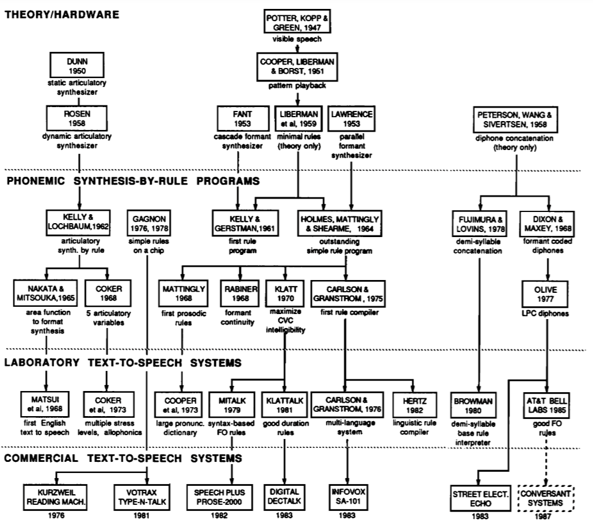
In 1983, Digital Equipment Corporation started selling one of the first commercially successful TTS system, the DECTalk, at the low price of $4000. It was based on the Klattalk formant synthesizer of Dennis Klatt, who had dedicated his life to research on speech, and had the best TTS system available at the time. In a 1987 review of TTS (Klatt 1987), Klatt stayed close to the Chomskyan orthodoxy and described TTS as a problem of writing the generative grammar deeper down, from text all the way to the spectrogram of the physical sound.
In his literature review, Klatt did take notice of two upstart systems from the statistical side, one being NETtalk of Sejnowski, a neural network model, and another being a statistical TTS system very similar to the IBM alignment model, by the same IBM team. He brushed both off as being inferior to a logical TTS system:
When evaluated on the words of this training set, [NETtalk] was correct for about 90% of the phonemes and stress patterns. In some sense, this is a surprisingly good result in that so much knowledge could be embedded in a moderate number of about 25000 weights, but the performance is not nearly as accurate as that of a good set of letter-to-sound rules (performing without use of an exceptions dictionary, but with rules for recognizing common affixes)… [The IBM alignment] approach still results in an inferior words-correct error rate compared with traditional rule systems. Even a very powerful statistical package cannot yet discover much of the underlying structure in a process as complex as natural language… given the attention that NETtalk and other neuron-like devices have received recently, it is disturbing that NETtalk does not learn training set data perfectly, appears to make generalizations suboptimally, and has an overall performance that is not acceptable for a practical system. Furthermore, it is unlikely that larger training lexicons would converge to a more acceptable performance.
Indeed, though the word “rules” appears over 200 times in the review, the above dismissal was the only thing he had to say about learning-based methods. Hostility towards machine learning is a recurring feature among the Chomskyans. However, unlike the Chomskyans, Klatt was not going to be satisfied with writing toy respected the extreme complexity of a proper system of rules. And try he did:
The hard part of text-to-speech synthesis is to calculate a string of LPC data, or formant-synthesis parameters, not from recorded speech, but from the letters and symbols of typed text… It’s possible to write a simple program for this task, which produces robotlike speech-hard to understand and unpleasant to listen to. The alternative, which only Dennis Klatt and a few others have pursued, is to invest years of effort in devising an increasingly lengthy and subtle set of rules to eliminate the robotic accent.
He turns to a table with two volumes about the size of large world atlases, each stuffed with speech spectrograms… Spectrograms usually feature subtle and easily changing patterns. Klatt’s task has been to reduce these subtleties to rules so that a computer can routinely translate ordinary text into appropriate spectrograms. “I’ve drawn a lot of lines on these spectrograms, made measurements by ruler, tabulated the results, typed in numbers, and done computer analyses,” says Klatt.
As Klatt puts it, “Why doesn’t DECtalk sound more like my original voice, after years of my trying to make it do so? According to the spectral comparisons, I’m getting pretty close. But there’s something left that’s elusive, that I haven’t been able to capture. It has been possible to introduce these details and to resynthesize a very good quality of voice. But to say, ‘here are the rules, now I can do it for any sentence’ – that’s the step that’s failed miserably every time.”
But he has hope: “It’s simply a question of finding the right model.”
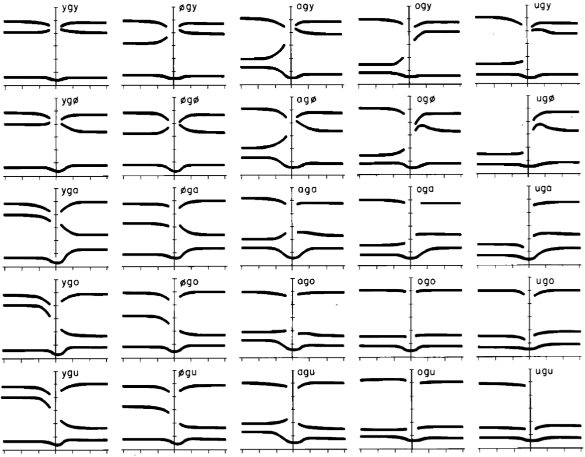
[g] as a function of preceding and following vowels. (Klatt 1987, fig. 29)Klatt had been progressively losing his voice from thyroid cancer, and died in 1988. His voice was the template for “Perfect Paul” in DECTalk, which was the voice of Stephen Hawking, which he kept using even after better TTS systems were available. (Medeiros 2015)
Vision
Logic and logistics
Planning
WWII was said to be a war of the physicists, or the code-breakers. It could equally said to be a war of the economists. The side that could sustain a higher industrial output slowly but surely ground down the other side, as strategic bombing destroyed industrial production.
It is either a myth or an obvious point that the soviet union had a bad economic system. In either case, there were two Soviet Nobel laureates in economics. The first was Wassily Leontief, who saw economics not as a simple feedforward network of wheat-to-bread-to-stomach, but as a feedback network of hundreds of industries making commodities for and taking commodities from each other, as made clear in his PhD thesis The Economy as Circular Flow (1928).
Leaving the Soviet Union as a dissident in 1925, he settled in America and performed his input-output analysis of the American economy. Let us divide the economy into \(N\) sectors, from “agriculture” to “electricity” to “rubber”. For simplicity, suppose each sector \(i\) only makes one kind of commodity \(x_i\) – “agriculture” only outputs a generic kind of “food”, etc. Each sector \(i\), in order to create one unit of commodity \(x_i\), requires some commodities \(A_{1i}, A_{2i}, \dots, A_{Ni}\) as inputs. Then, if the entire economy produces \(x_1, x_2, \dots, x_N\), then it requires total input \(Ax\), where \(A\) is the demand matrix. With this we have the fundamental equation:
\[ x = Ax + y \]
where \(y\) is the surplus that comes out of the economy, which Leontieff calls “demand”, since that is what is demanded by consumers outside of the economic production. It seems simplistic – just a linear equation? Yet this was the origin of linear programming.
In 1949, Leontief used an early computer at Harvard and data from the U.S. Bureau of Labor Statistics to divide the U.S. economy into 500 sectors, and balanced the linear equation on the grand scale.
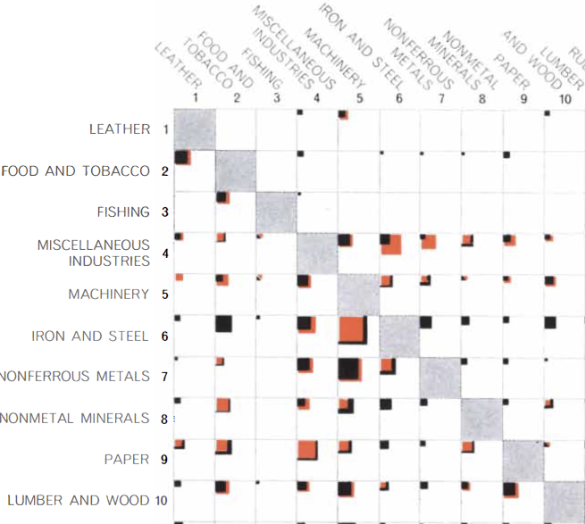
Near the end of the war, Stigler wrote a paper calculating what is the cheapest possible nutritionally complete diet. He concluded that at 1939 prices, a minimal viable diet cost $40 per year for an adult American man, which was 1/3 the price of previous results. He concluded that the previous dieticians were not ruthless enough, and confused biological needs with cultural needs:
The dieticians take account of the palatability of foods, variety of diet, prestige of various foods, and other cultural facets of consumption. Primarily on such grounds can one explain their emphasis on meats and the inclusion of sugar… If the dieticians persist in presenting minimum diets, they should at least report separately the physical and cultural components of these diets.
In 1947, George Dantzig was tasked with the US Air Force to mechanize its planning. Inspired by the paper as well as Leontief’s input-output analysis, he thought that constraint-optimization with linear algebra was just the tool to use. As a start, he attacked the same problem of diet, and from there, he developed the simplex method. (Dantzig 1990)
In the fall of 1947 … undertook as a test of the newly proposed simplex method the determination of a least cost adequate diet based on Stigler’s data. It was the first “large scale” computation in the field. The system consisted of 9 equations in 77 unknowns. Jack parcelled out a different 8 or 9 columns (of the 77 columns) to each of the 9 clerks who were assigned to process them. Using hand-operated desk calculators… the 9 clerks took approximately 120 man-days to obtain an optimal solution of $39.69. Stigler’s heuristic solution was only off from the true annual optimal cost by 24 cents: not bad!
While linear programming became the great success story of early AI – when it was still considered as the “mechanization of thought process”, and often subsumed under operations research – and was quickly taken up by military logisticians and business managers, its original application in diet planning was less successful. Dantzig recounts how he unsuccessfully tried to go on a diet by running a 500-ingredient linear programming problem on an IBM 701. Hilarity ensues.
One day I said to Anne, my wife, “Today is Der Tag, whatever the 701 says that’s what I want you to feed me each day starting with supper tonight.” … I then read off the amounts of foods in the optimal diet. Her reaction: “The diet is a bit weird but conceivable. Is that it?” “Not exactly,” I replied, “AND 500 gallons of vinegar.” … It turned out that our data source listed vinegar as a very weak acid with water content = zero. Therefore, according to the way the model was formulated the more vinegar you drank the greater would be your feeling of feeling full. I decided that vinegar wasn’t a food.
The next day the above scene was repeated except this time … calling for the consumption of 200 bouillon cubes per day… I called my doctor and asked him how come the nutritional requirements didn’t show a limit on the amount of salt? “Isn’t too much salt dangerous?” He replied that it wasn’t necessary; most people had enough sense not to consume too much. I placed an upper bound of three on the number of bouillon cubes consumed per day. That was how upper bounds on variables in linear programming first began.
The next day the above scene was repeated, except this time the diet called, among other things, for two pounds of bran per day… The model was revised with an upper bound put on the amount of bran. The next day the proposed menu was almost exactly the same except this time it was two pounds of blackstrap molasses which substituted for the bran… she said, “I have been studying the various menus the computer has been generating. There are some good ideas there that I can use. I’ll put you on MY diet. She did and I lost 22 pounds.
In our hindsight, we say that the AI performed an adversarial attack on the input data and the reward model misspecification, something that gaming and planning AI are wont to do.
The second Soviet Nobel laureate, Leonid Kantorovich, managed to win it while remaining within the USSR. This was no small feat, for in the USSR, the academic study of economics meant only political economy, and mathematical economics was merely a minor branch of political economy, with mathematical economists having to frame their research as a “critique of bourgeois economic thought”. (Boldyrev and Kirtchik 2017)
Like Dantzig, Kantorovich discovered linear programming in the context of a practical problem. Feeling burnt out by too much pure math, he decided to do something practical for a change of scenery, and to do something about the imminent threat of Nazi Germany. So he went to a plywoord factory in 1937, and worked on how to cut plywood sheets in such a way as to meet a specified assortment of pieces with minimum waste. And just like Dantzig, he reduced the problem to a maximization problem with linear objective and linear inequality constraints.
Dizzy with success, he tried the same trick again and again, and accidentally improved efficiency so much that he almost ended up in jail.
… one of the major materials handling operations at the Leningrad E. I. Egorov Railroad Car Building Plant was the cutting of sheet metal for railroad cars. Ordinarily, this cutting produced tremendous quantities of scrap. After introducing Kantorovich’s solution technique to the problem of minimizing waste, officials were able to reduce the amount of scrap by 50%. This had the unfortunate side effect of greatly reducing the amount of scrap metal available to steel plants in the region, and Kantorovich was ordered to appear at Leningrad party headquarters for allegedly sabotaging the economy. In this instance, he was rescued by the military, which needed him for its atomic program.
According to Stalin, the planned economy of the USSR was already “dizzy with success”; hence any criticism of it was anti-Soviet propaganda, a serious crime. In particular, anyone openly suggesting that waste could be cut substantially was at great personal risk. Nevertheless, Kantorovich … wrote a letter to Gosplan suggesting a reform of the price system used in planning.
Being a socially clueless nerd was not the stuff of romantic comedy in Soviet Russia, but gallows comedy. Fortunately for mathematical economics, his luck held:
Gosplan wrote back saying that no such reform was necessary. This outcome was rather fortunate for its author, as similar letters critical of the authorities – for example, one by Solzhenitsin – landed their authors promptly in jail.
Reading Kantorovich’s repeated attempts to reform Soviet economy, I imagined those old silent movies where a protagonist stumbles around, blindfolded, crossing a highway where the cars always just missed. Accidental economic sabotage was not the end of his misadventures, however. His luck was really tested when it came to the “shadow price” affair.
Consider the problem of managing a factory. It has some input constraints (fuel, woods, etc), and the objective of maximizing the total utility of output goods. This is simply solved by the Lagrangian multiplier method, and it turns out that the Lagrangian multipliers themselves have a natural interpretation: the multiplier \(\lambda_i\) is the amount of extra utility that the factory can achieve, if the factory were to obtain one more unit of constraint \(i\).
So Kantorovich had the great idea of calling it the “shadow price”,12 and considered it a way to find the proper price of something, better than the free market mechanism. The free market mechanism leads to maximizing some kind of utility function, but that utility function is not designed by anyone. In contrast, the shadow price naturally falls out of attempts to maximize a social utility function designed by the Gosplan (State Planning Committee). It is a utility designed by humans, for humans, not a utility function emergent from capitalism, for capitalism.
12 In his original terms, “objectively determined valuation” [объективно обусловленные оценки], where the “objectively” means “according to an objective function (the social utility function)”.
This is, in short, how market socialism should work, according to Kantorovich:
- Design a social utility function (the “social” part of “socialism”).
- Collect data on how the factories should ideally work (big data).
- Compute the shadow prices by linear programming (big compute).
- Set the prices on every commodity.
- Let the factories compete on this market for goods and money, secure in the knowledge that this socialist market would maximize a properly designed social utility, and the market mechanism would allow only the factories that achieve the highest efficiency: The slackers are competed out, and only those who can perform as efficiently as the “ideal factories” (see step 2) can make a profit and thus survive.
The whole thing is not hard to prove in a simple model of economy, where all factories are linear functions, and the social utility function is also a linear function. Then the proof is just writing down the “linear duality theorem”, and interpreting it as economics.
[Boyarskii:] You write, “any increase in the requirements of some article entails a corresponding increase in costs and consequently in its o.d. valuation. A decrease in requirements entails a reduction in its o.d. valuation.” What is this, what can this possibly be, but a suggestion that value is determined by supply and demand? Supply and demand, for heaven’s sake: bourgeois ideology’s most transparent disguise for exploitation!
…
[Kantorovich:] It’s true that there is a formal resemblance, but they have a completely different origin, and therefore a completely different meaning. Whereas market prices are formed spontaneously, objective valuations – shadow prices – must be computed on the basis of an optimal plan. As the plan targets change, the valuations change. They are subordinate to the very different production relationships of a socialist society. Yet, yet, the scope for their use is actually bigger under socialism. The capitalists actually agree with you, Dr Boyarskii, that the mathematical methods we’re talking about should only be applied on the small scale, on the level of the individual firm. They have no choice: there is no larger structure, in the economy of West Germany or the United States, in which they can be set to work. They have had some success, I believe. I’m sorry to say that, since George Danzig and Tjalling Koopmans made their discoveries of “linear programming” in America during the war, the techniques have been adopted there far more eagerly, far more quickly, than in the Soviet Union. Linear programmers in the USA calculate routes for airlines, and devise the investment policies of Wall Street corporations. But we still have an opportunity before us which is closed to the capitalists. Capitalism cannot calculate an optimum for a whole economy at once. We can. There is a fundamental harmony between optimal planning and the nature of socialist society.
Though he kept trying to propose his idea of socialist optimal planning, and kept sending letters to leaders from Stalin to Andropov, his idea remained a linear programmer’s fanatsy.
Mechanizing Mathematics
Circa 1900, as mathematicians learned to manufacture paradoxes, mathematics modernized, upgraded paranoia, and tried to get a grip. The angel of topology and the devil of abstract algebra fought for the soul of each individual mathematical domain in this “Foundational Crisis”. With palpable disdain, Poincaré deplored the Hilbert school of formal logic that threatened to bleed even geometry of meaning:
“Imagine,” says Hilbert,” three kinds of things, which we will call points, straight lines, and planes; let us agree that a straight line shall be determined by two points, and that, instead of saying that this straight line is determined by these two points, we may say that it passes through these two points, or that these two points are situated on the straight line.” What these things are, not only do we not know, but we must not seek to know… We might replace geometry by the reasoning piano imagined by Stanley Jevons; or, if we prefer, we might imagine a machine where we should put in axioms at one end and take out theorems at the other, like that legendary machine in Chicago where pigs go in alive and come out transformed into hams and sausages. It is no more necessary for the mathematician than it is for these machines to know what he is doing.
But what is taken as an reductio ad absurdum by one side is often a Roadmap for the Next 20 Yaers by the other. The mechanical logician came as soon as the electronic computers arrived.
During undergrad years, Edward Feigenbaum took a course “Mathematical Models in the Social Sciences” taught by Herbert Simon. One class, he walked in and annouced to the 6 students
Over the Christmas holidays, Al Newell and I invented a thinking machine.
Stunned, Feigenbaum asked Simon, whereupon he received a manual of IBM 701. Feigenbaum read it all through the night, and in the morning light, he felt a “born-again experience”. AI has won itself a new convert.
The thinking machine was Logic Theorist (A. Newell, Shaw, and Simon 1957), perhaps the first AI mathematician.
The Logic Theory Machine found proofs for 38 of the 52 theorems it was presented with from the Principia, in particular finding a straightforward proof of theorem 2.85 (a simple propositional logic theorem) where Whitehead and Russell had given a more cumbersome - indeed, defective – proof. Lord Russell was impressed… The editor of the prestigious Journal of Symbolic Logic, however. was not won over, and the journal refused to publish an article coauthored by the Logic Theory Machine describing the proof of theorem 2.85.
The working of Logic Theorist was simple. It simply performs a tree search in the space of possible proofs. At the root of the tree is the theorem to be proved. Each branch then transforms the state of the proof, adding assumptions (which then become sub-goals that themselves need to be proved), substitute logical variables, quoting axioms, perform modus ponens, etc. If at some leaf-node, the list of goals is empty, then the solution is found, and the Logical Theorist backtracks to get the final proof.
As an example, it proved Theorem 2.17 as follows. The final proof had 7 steps, and took 89k basic operations to discover. (Allen Newell and Simon 1972, 133)
- \(\mathrm{A} \supset \sim \sim \mathrm{A}\) (Start with Theorem 2.17)
- \(\mathrm{P} \supset \sim \sim \mathrm{P}\) (Theorem 2.12)
- …
- \((\sim \mathrm{Q} \supset \sim \mathrm{P}) \supset(\mathrm{P} \supset \mathrm{Q})\) (chain 7 and 5)
A later version mechanized Poincaré’s nightmare by converting Euclidean geometry problems to symbolic logic, and managed to discover a particularly elegant proof that in a triangle \(ABC\), if \(AB = AC\) then \(\angle ABC = \angle ACB\), by the SAS theorem. Only later did the authors discover that this was a previously known solution. (Mackenzie 1995)
Information Processing System
Simon and Newell were unhappy with Logic Theorist, for the simple reason that when they read the trace-outs of its “thought process”, they noted that it is very different from how humans would go about proving the same problems. Patiently plodding, they brute forced through the whole search tree, whereas humans would tastefully pick some branches and search deeply, and others not at all.
In their magnum opus, Human Problem Solving (1972), they have compiled their decades of research into a definitive statement of what AI is about in their view. According to them, AI is logical AI, and the fundamental architecture for logical AI is Information Processing System. (Allen Newell and Simon 1972)
The axioms of logical AI:
- It is symbols all the way down. Everything “sub-symbolic”, like the neural biology, are just implementation, and not part of what intelligence is about, much like software is independent of hardware.
- Intelligent behavior is the combination of simple goals, simple algorithms, and complex environment.
- Intelligent algorithms are fairly simple, and consist of serial, deterministic, heuristic search over the space of solutions.
- The space of solutions is structured like a directed graph, where the edges are “generators” or “search operators”.
- At each step, the search algorihm runs a “verifier” subroutine to check if a solution has been found. If so, then it backtracks to produce the full solution. If not, then it updates an internal state and decide how to grow the path towards the goal.
- To grow the path towards the goal, it conducts “means-ends analysis”: Take a small forward step to a new place in the space of solutions (“means”), and move the goalpost by a small backward step, to a new goalpost closer to you (“ends”).
They designed an algorithm according to the axioms and called it “General Problem Solver” (GPS), a grandiose title for a grandiose dream.
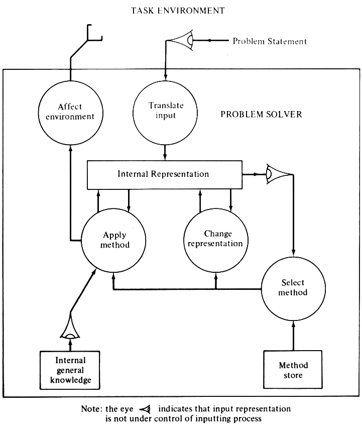
Curiously, they argued that Chomskyan linguistics and the IPS formalism are essentially the same:
| IPS logical AI | Chomskyan linguistics |
|---|---|
| Symbols | Symbols |
| Problem input | Surface structure of a sentence |
| Symbolic representations | Deep structures; representations of meanings |
| Problem space | Space of deep structures of strings |
| Problem solving | Parsing, or grammatical analyses from the surface structure to the deep structure |
| Stored patterns | Stored words, phrases, syntax trees, etc |
It should be evident from the discussion of symbols, symbol structures, the designation relation, and programs that an information processing system of the sort we have described in this chapter is, in some fundamental sense, a language processor. As a matter of historical fact, the basic concepts that have entered into our description of an IPS have almost the same origins as the concepts that underlie the formalized transformational grammars that linguists have developed over the past fifteen years (Chomsky 1957)… our theory of problem solving can properly be viewed as also a partial theory of linguistics-specifically, a theory of the nature of the deep structures used by the human IPS in the course of its problem solving activities.
As we have seen and will see, the relation between Chomsky and logical AI runs deep.
The IPS is not just a logical framework AI, but also a psychological theory for what humans really do when they solve problems. As such, Simon and Newell spent over a decade carefully studying the behavior of real humans solving real problems, such as propositional logic proofs (the same task as Logic Theorist), cryptograms, chess puzzles, and so on. And by “detailed” I mean it. They had subjects working through problems in a lab, with the entire session tape-recorded, fully transcribed, annotated, and parsed into the form of a heuristic tree search. It was like looking at the debugger output to a human being.
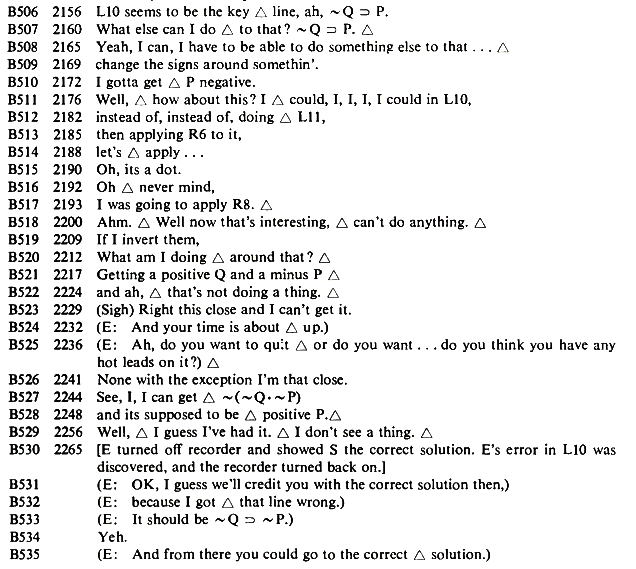

In a popularization (well, as popular as abstract AI theories can get), Simon analogized their theory with a crawling ant:
We watch an ant make his laborious way across a wind- and wave- molded beach. He moves ahead, angles to the right to ease his climb up a steep dunelet, detours around a pebble, stops for a moment to exchange information with a compatriot. Thus he makes his weaving, halting way back to his home. So as not to anthropomorphize about his purposes, I sketch the path on a piece of paper. It is a sequence of irregular, angular segments–not quite a random walk, for it has an underlying sense of direction, of aiming toward a goal. I show the unlabeled sketch to a friend. Whose path is it? An expert skier, perhaps, slaloming down a steep and somewhat rocky slope. Or a sloop, beating upwind in a channel dotted with islands or shoals. Perhaps it is a path in a more abstract space: the course of search of a student seeking the proof of a theorem in geometry… Human beings, viewed as behaving systems, are quite simple. The apparent complexity of our behavior over time is largely a reflection of the complexity of the environment in which we find ourselves.
If we squint at the following diagram, we can almost see it as they saw it: a human, as simple minded as an ant, crawling and stumbling through the problem space of logic.
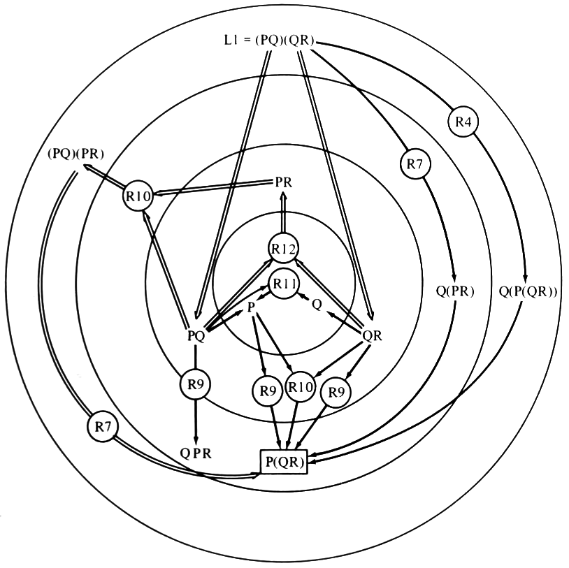
At this point, we might be seeing a pattern here. Checking every use of the word “learning” in the book, I confirmed that, indeed, they were uninterested in learning, other than claiming that learning consists of adding more symbols to the internal environment, which is just one more kind of environment. One can look up lemmas and formulas on an external book, or an internal blackboard. It is all the same. The ant of the brain just need to crawl over the inner landscape as much as it crawls over the outer landscape.
We will deal hardly at all with earning phenomena in this book. Yet the approach to earning from the direction just illustrated, where we have the internal structure of the performing program laid out before us, shows clearly (1) that experience is simply one more source of information that can be exploited to attain adaptive performance and (2) that to affect performance experience must find some variable aspect of the performance program’s structure that it can specify.
It is not that they completely ignored the problem of learning, but rather, they understood learning as a simple kind of associative memorization. Feigenbaum’s PhD project was the Elementary Perceiver and Memorizer (EPAM), an algorithmic model of human associative memory. As a concrete realization of the learning theory of Simon and Newell, we describe it to show how little learning their framework contained.
EPAM modeled people performing the following memorization task:
- “DAX” is displayed to the subject
- Subject should say “JIR” in response
- Regardless of what subject responds, “JIR” is displayed after a few seconds.
- Repeat this until the subject manages to memorize all 12 pairs.
During a session, every time EPAM sees a new stimulus-response pair, it stores the response, and updates its decision tree. Each node of the decision tree has two children, and which way EPAM goes is determined by testing one letter of the stimulus. It looks like
if stimulus[0] == "D":
return "JIR"
elif stimulus[2] == "J":
...In short, what counts as a paradigm of learning is simply memorization, and updating a big if-then search tree, so that a stimulus results in going down the search tree and arriving at the correct response stored in the leaf node.
The drosophila of AI
Within 10 years, a computer would routinely beat the world’s best player.
— Herbert Simon, 1957
In introductions to AI or even just machine learning. Arthur Samuel’s checker program was usually given as the first great example of machine learning. In short, it performs alpha-beta search to a few plies13 during playing, using up to 16 hand-crafted feature functions. It uses two learning rules Sutton and Barto (2018):
13 Annoyingly I can’t find any information, but considering that an IBM 704 has \(5\times 10^4 \;\mathrm{MIP/sec}\), and checkers has a branching factor of 400, it would take on the order of 10 minute to search 2 plies. So my bet is 2 plies. Indeed, the paper appendix says it takes \(10^{-2} \;\mathrm{sec}\) to play and evaluate one position, which means it takes about 500 instructions for one play and evaluation, and that searching 2 plies already takes 30 minutes.
- Rote learning: After performing an alpha-beta search, it would store the score for the root node. Later, if the root node is encountered during search, its score would be used without needing to search deeper. This allows it to increase the effective search depth over time, as it memorizes more and more positions’ values. To save memory, if a board does not reappear after a maximum number of moves, it is “forgotten”. The whole system managed to memorize 53,000 board positions (averaging 3.8 words each on a IBM 704)
- Generalization learning: Something very similar to TD-learning in reinforcement learnig, except that the reward function is not whether the board is won (1 for winning, -1 for losing, 0 otherwise), but the piece advantage feature.
The whole program ran on an IBM 704, and took up about 8000 instructions.
Just when you thought there is finally some learning, nope. Samuel got the features from interviewing the checker experts. In fact, it had a formative influence on a later pioneer of expert systems:
Art Samuel’s work on the checker player: Art had interviewed experts to understand… the feature vector and then he did a good deal of reading about checkers… And the influential part about that was.. his machine learning component – that once you had the expertise in, in a first-order form, it could be improved… automatically. That impressed me a great deal and I always wanted to be able to do that.
Compared to checkers, computer chess had been much more high-profile, and it has been a textbook example of logical AI. The three parts of computer chess are move generator, evaluation function, and search control, corresponding to the solution space, verifier, and heuristic search algorithm of the IPS.
The IPS framework, with its talk of heuristic search, resembles most of all how people play board games. Indeed, (Allen Newell and Simon 1972) devoted over 100 pages to chess, “the drosophila of AI”. Indeed, chess seems like the perfect illustration: simply do an alpha-beta search with a heuristic evaluation function on it. This was essentially the algorithm proposed by Alan Turing in 1948 – the Turochamp, and it was still the algorithm used in Deep Blue (1997). In fact, the architecture has changed so little that we can write a single “prototypical chess program”:
def score(board):
# return a real number
def move_generator(board):
# return a list of legal moves
def make_move(board, move):
# return the next board
def search(board):
# do the minimax search,
# or the alpha-beta tree search, etc
for moves in move_generator(board):
...
return best_moveProgress in chess computers has come from three sources: faster computers allowing bigger search trees, better scoring functions, and better heuristic tree search algorithms (from minimax to alpha-beta to tricks like singular extensions). As an illustrative example, here is (part of) the Turochamp scoring function (Allen Newell and Simon 1972, pag 672):
material_value = {
"Pawn" : 1, "Knight": 3, "Bishop": 3.5,
"Rook": 5, "Queen": 10, "Checkmate": 1000
}
def mobility(board, piece):
# Square root of legal moves for the piece
legal_moves = move_generator(board)
return sqrt(len([move for move in legal_moves if piece in move]))
...
def score(board):
q_value = mobility(board, "Queen")
...
return q_value + ...Like its predecessors, Deep Blue used alpha-beta tree search, except it searched a lot of positions. To support this, it used ASIC VLSI “chess chips”,14 each with four parts: the move generator, the smart-move stack, the evaluation function, and the search control. The move generator is a 8×8 combinational logic circuit, a chess board in miniature. (F.-H. Hsu 1999; Campbell, Hoane Jr, and Hsu 2002)
14 Just when you thought DARPA can’t possibly be behind this, guess what, Hsu developed the earlier iterations of chess chips by taking advantage of MOSIS, which was part of the Strategic Computing Initiative (Roland and Shiman 2002, chap. 4). More on this below.
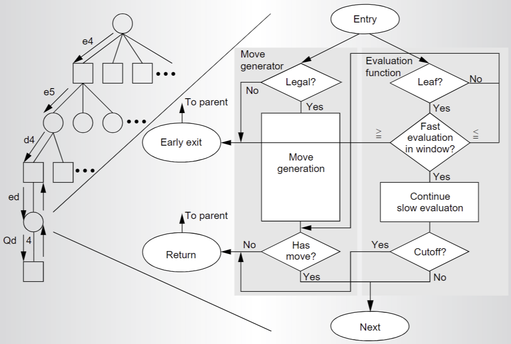
Describing the software of Deep Blue in detail would be not particularly enlightening, so here’s a pseudocode sketch:
opening_book = ... # 4000 positions
extended_book = ... # several million positions from 0.7M grandmaster games
endgame_table = ... # all endgames with <= 5 pieces, and many endgames with 6 pieces
def eval_function(board):
weight_vector = ... # contains 8000 real numbers
feature_vector = features(board) # contains 8000 handcrafted terms
return weight_vector @ feature_vector
def play(board):
if board in opening_book:
move = retrieve_opening_move(board, opening_book)
elif board in extended_book:
best_score = -1
best_move = ''
for move in legal_moves(board):
score = evaluate(move, board, extended_book)
if score > best_score:
best_score = score
best_move = move
elif size(board) <= 5 or (size(board) == 6 and board in endgame_table):
move = retrieve_ending_move(board, endgame_table)
else:
move = alpha_beta_search(board, eval_function) # evaluate 200M pos/sec
play(move)I know you are eager to hear about how Deep Blue learned. So did I. The bad news is that it barely learned anything. First, its evaluation function was just a linear sum over ~8000 hand-crafted features,15 with changeable linear weights. It actually had two evaluation functions, fast and slow. Only if the fast one already shows a clear advantage would the slow one be called. Further, the linear weights were mostly handcrafted too, except a small amount of automation:
15 And there were a lot of features, with words I barely understand:
The most significant part of the fast evaluation is the “piece placement” value, i.e., the sum of the basic piece values with square-based location adjustments. Positional features that can be computed quickly, such as “pawn can run”, are also part of the fast evaluation. The slow evaluation scans the chess board one column at a time, computing values for chess concepts such as square control, pins, X-rays, king safety, pawn structure, passed pawns, ray control, outposts, pawn majority, rook on the 7th, blockade, restraint, color complex, trapped pieces, development, and so on. The features recognized in both the slow and fast evaluation functions have programmable weights, allowing their relative importance to be easily adjusted.
The first tool had the goal of identifying features in the Deep Blue I evaluation function that were “noisy”, i.e., relatively insensitive to the particular weights chosen… A hill-climbing approach was used to explore selected features (or feature subsets), and those that did not converge were candidates for further hand examination… A second tool was developed with the goal of tuning evaluation function weights. This tool used a comparison training methodology to analyze weights related to pawn shelter. Training results showed that the hand-tuned weights were systematically too low, and they were increased prior to the 1997 match. There is some evidence that this change led to improved play.
I didn’t understand it, so I turned to a previous paper (F. Hsu et al. 1990) that seems to explain it better, according to which they did two kinds of “automated” training, which were both supervised learning without backpropagation:
def hill_climbing(t, games):
search_depth = 5
dt = learning_rate * random(t.shape)
wins = 0
for (board, move) from random_sample(grandmaster_games, N):
old_move = alpha_beta_search(board, search_depth, evaluation_function, t)
new_move = alpha_beta_search(board, search_depth, evaluation_function, t + dt)
wins += (new_move == move) - (old_move == move)
if wins > 0:
t += dt
return t
def comparison_training(t, games):
dt = learning_rate * random(t.shape)
wins = 0
for (board, move) from random_sample(grandmaster_games, N):
moves = legal_moves(board)
next_board = make_move(board, move)
reference_score = evaluation_function(t, next_board)
old_scores = []
new_scores = []
for alt_move in moves if alt_move != move:
next_board = make_move(board, alt_move)
old_scores.append(evaluation_function(t, next_board))
new_scores.append(evaluation_function(t + dt, next_board))
wins += all(reference_score > new_scores) - all(reference_score > old_scores)
if wins > 0:
t += dt
return tDeep Blue contains 480 chess chips, each capable of \(2.5 \times 10^6 \;\mathrm{position/sec}\). But the total hardware had only a sustained peak rate \(2 \times 10^8 \;\mathrm{position/sec}\), meaning its utilization rate was only 16%.16 (F. Hsu 2007) To Hsu, it was an exercise in chip design. To Kasparov, it was a dirty business. To some journalists, it was another “Man vs Machine” story. And to us, it was the last great project of logical AI in the style of Simon and Newell.
16 The \(R_{max}\) of Deep Blue on LINPACK was 11.38 GFLOP according to TOP500 List - June 1997, meaning that each positional evaluation is worth 10 FLOP, although I have doubts about just how they managed to cram the LINPACK benchmark onto the chess chips.
An earlier report in 1995 (F. Hsu, Campbell, and Hoane 1995), published a year before Deep Blue was assembled, estimated that a general-purpose computer would take 1000 FLOP to evaluate one position. It also estimated Deep Blue would take up around 1 kW of electric power.
Deep Thought was not an “expert system”… Several members of the team would probably consider it an insult to call Deep Thought an expert system. In fact, at least two members of the team had used the word bullshit to describe “expert systems”, or for that matter, Artificial Intelligence. Second, the Deep Thought research was supported in part by the VLSI project, and none of the money came from the DARPA funding for expert systems research.
10 years after the historic win, Hsu wrote a brief essay describing how to make a superhuman Go machine. He estimated that it was already possible to get a single Go-chip to evaluate \(2 \times 10^{10} \;\mathrm{position/sec}\), and so with 10 years of Moore’s law giving another 100×, a machine with 480 Go-chips would be able to evaluate \(10^{14} \;\mathrm{position/sec}\) by 2017.
… with some optimization a machine that can search a trillion positions per second would be enough to play Go at the very highest level. It would then be cheaper to build the machine out of FPGAs (field-programmable gate arrays) instead of the much more expensive and highly unwieldy full-custom chips. That way, university students could easily take on the challenge. At Microsoft Research Asia we are seeding university efforts in China with the goal of solving some of the basic problems.
In 2016, AlphaGo defeated the 9-dan player Lee Sedol at 4 wins and 1 loss,17 and it “[evaluated] thousands of times fewer positions than Deep Blue”. (Silver et al. 2016) The subsequent AlphaZero reached superhuman performance with just \(10^4\) evaluated positions per move. (Silver et al. 2018)
17 In game 2, AlphaGo played black. Media made much out of the 19th move of AlphaGo (“Move 37”), which the supervised learning policy network (which was supervise-trained to predict what a human would play, as according to a large dataset of human games) predicted a probability of \(10^{-4}\). This was given much media attention. Something similar happened with Deep Blue vs Kasparov, game 2, when Deep Blue (White) played 36.axb5, with immediate effect:
so fluid was its play that the grandmasters in attendance all understood Benjamin’s contention that Blue “played real chess” that day. What really shook Garry Kasparov, though, was a move that the computer didn’t make. On Move 36, Blue had an opportunity to shift its queen to a devastating position – clearly the smart choice. Instead it took a subtler but superior tack that wound up to be near decisive in defeating Kasparov. After the champ resigned, he rushed back to his Plaza suite, cranked up his own computers and tried in vain to understand how a hunk of sand and metal could have understood chess so deeply. Apparently this puzzlement crossed into the realm of suspicion: the Kasparov camp was soon demanding to see Deep Blue’s printouts. “It was a masterpiece by computer”, said Kasparov second Michael Khodarkovsky. “We would like to understand why it was possible.” (Eventually, a neutral arbiter examined the printout.) Later Kasparov blurted out his real complaint. “Suddenly [Deep Blue] played like a god for one moment,” he said.
Expert systems
The miracle product is knowledge, and the Japanese are planning to package and sell it the way other nations package and sell energy, food, or manufactured goods… The essence of the computer revolution is that the burden of producing the future knowledge of the world will be transferred from human heads to machine artifacts.
DENDRAL
Spectrometry means taking an unknown chemical, then do some physics experiment on it to obtain a line-graph, then discover what that chemical is based on that line-graph. A mathematician would write something like this:
\[ (\text{chemical}) \xrightarrow{\text{spectrometry}} (\mathbb{R}\to \mathbb{R}) \xrightarrow{\text{chemist}} (\text{chemical}) \]
Mass spectrometry, for example, breaks a chemical into fragments, and measures the mass-to-charge ratios of the fragments, in units of \(\frac{\text{atomic mass unit}}{\text{electron charge}}\). Many fragments carry just +1 electron charge, so the mass-to-charge ratio can be interpreted as roughly the atomic mass of the fragment. A peak at \(x\), for example, means when the chemical breaks, it often results in some fragments with mass \(x\). Trained chemists would be able to study a mass spectrometry plot and figure out what it means.
Given a chemical species, by standard stiochiometry one can measure the chemical formula of the species, but it remains to discover its chemical structure. This is what DENDRAL18 was designed to do: given the mass spectrometry, the chemical formula, and some additional information (a later version could incorporate the NMR spectrum), output possible molecular structures for the species.
18 The full name is “heuristic dendritic algorithm”. It is “dendritic” because it originally only could process chemical structures with no cycles.
Like the IPS of Simon and Newell, DENDRAL started as a heuristic search program. Its problem space is enumerated by a structure generator, which, given a chemical formula, generates all chemically stable structures according to some chemical rules. For example, geminal diols are unstable, so those are not enumerated. Each generated structure is then broken into fragments, again according to some heuristic rules. For example, in a ketone (R-(C=O)-R’), it is very unlikely for the C=O double bond to be broken, while it is quite easy for the R-(C=O) and the (C=O)-R’ bonds to be broken.
If that is all there is, then we have something not much better than exhaustive search, and would not scale. The breakthrough of DENDRAL was that the DENDRAL team had a professional chemist, who entered a large number of heuristic rules for interpreting mass spectrometry lines. These greatly decrease the number of solutions to verify.
Consider an illustrative example from (E. A. Feigenbaum, Buchanan, and Lederberg 1970, table 1). Let \(m\) be the mass of the whole molecule. Then there is a ketone carbonyl group (R-(C=O)-R’, mass 28) if there are 2 peaks at mass \(x_1, x_2\) such that
- \(x_1+x_2 = m+28\),
- \(x_1 - 28\) is a high peak,
- \(x_2 - 28\) is a high peak,
- At least one of \(x_1\) or \(x_2\) is high.
A molecule R-(C=O)-R’ containing a ketone group often breaks at the bond next to the carbonyl group. This results in 4 possible fragments: R-(C=O)-, -(C=O)-R’, R-, -R’. Since the -(C=O)- fragment has mass 28, the first 3 rules would be satisfied. The 4th rule ensures the fragments are statistically significant, not noise. (What counts as “high” is a parameter that the expert sets.)
The full architecture is as follows:
def plan(chemical_formula, spectrometric_data):
# use the rules and data to list plausible and implausible structural elements
# e.g., if the ketone carbonyl group is plausible, then put it into good_list
# else, put it into the bad_list
return good_list, bad_list
def generate(chemical_formula, good_list, bad_list):
# enumerate all plausible structures
# containing groups from the good_list, but not the bad_list
return plausible_structures
def test(plausible_structures, spectrometric_data):
structures = []
for structure in plausible_structures:
simulated_data = simulate_spectrometry(chemical_formula)
score = distance(simulated_data, spectrometric_data)
structures.append((score, structure))
structures.sort(key=lambda x: x[0])
return structures
def main(chemical_formula, spectrometric_data):
good_list, bad_list = plan(chemical_formula, spectrometric_data)
plausible_structures = generate(chemical_formula, good_list, bad_list)
structures = test(plausible_structures, spectrometric_data)
return structures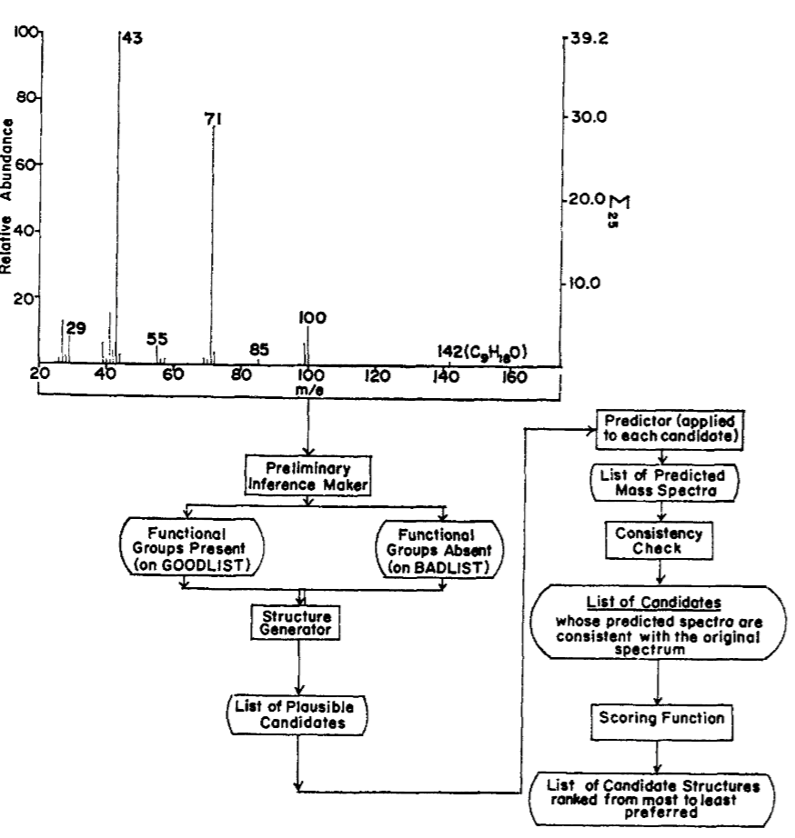
During the period of 1965 to 1969, DENDRAL’s performance increased steadily as more chemical knowledge was entered. In the discussion section, they summarized their lessons learned as a tradeoff. Whereas previous logical AI systems like GPS focused on generic heuristic search over solution spaces, they concluded that generality of the solver has a price being paid in speed and power of finding actual solutions.
In recognition of these difficulties, a vienpoint at the other extreme has ewerged, informally called “the big switch hypothesis”… generality in problem solving is achieved by arraying specialists at the terminals of a big switch. The big switch is moved from specialist toi specialist as the problem solver switches its attention from one problem area to another… The general methods do solve DENDRAL problems, sometimes well as with some amino acid spectra, but they ara relatively weak and inefficient.
… This is remarkable. The planner, which is the specialist at “understanding” the data and inferrirg conditions on tho solution, is so powerful that the need for the general problem solving processes of the system is obviated. Another way to view this is that all the relevant theoretical knowledge to solve these amine problems has been mapped over from its general form in the predictor (“first principles”) to efficient special forms in the planner (“cookbook recipes”).
In another paper (B. Buchanan, Sutherland, and Feigenbaum 1970), the authors expressed their surprise that they could split the program into two parts, which would become the “inference engine” and the “knowledge base”. It was as if they have discovered that, instead of manually writing in a lot of if-then statements, they could write a single eval function, and then just write a lot of entries in a giant database of rules in a uniform format, and run the eval function over the rules. It reminds me of von Neumann discovering the code is data, data is code idea, and thus avoid the trouble of having to physically rewire ENIAC every time the program changes.
It was reported to have been used in “terpenoid natural products from plant and marine animal sources, marine sterols, organic acids in human urine and other body fluids…” and was found to reach expert performance. What it lacked in knowledge it made up in thoroughness, and so it outperformed the experts when the sample is a mixture of several chemicals. (B. G. Buchanan and Feigenbaum 1981a)
Meta-DENDRAL
The Meta-DENDRAL was an early example of a logical AI system that could learn from data. It was developed near the end of DENDRAL, when the number of rules became hard to manage. The team decided to see if they could design an expert system that is an expert at learning organic chemical mass spectrometric data – not generic learning from generic data. Their hypothesis was “knowledge acquisition is itself a knowledge-based task”. (B. G. Buchanan and Feigenbaum 1981b)
INTSUM(“interpretation and summary”) takes a list. Each list item is a molecular structure and its mass spectrum. It computes an explanation for the spetrum by molecular bond clevages and atomic transfers. It returns the cleavages, atomic transfers, and spectrum peaks as supporting evidence for each cleavage and transfer.RULEGEN(“rule generation”) takes the output fromINTSUMand infer cleavage rules from it. For example,X*Xmeans “any bond can be cleaved”,-CO*NH-means that “any peptide bond can be cleaved”, etc. It always starts with the most generic ruleX*X, and then tree-searches for more and more specific rules by adding (never removing) more atoms or features to the rule, until reaching a rule whose child rules all perform less well than it.- Each atom, like the
XinX*C, could be annotated with some or all features from a list of 4: atom type (type, could be carbon, oxygen…), the number of other carbons connected to (nbrs), numbers of hydrogens connected to (nhs), or number of multiple bonds (dots). - For example,
-CO*NH-is similar (though not exactly the same) as-X[type=C, dots=1]*X[type=N, nbrs=2, nhs=1, dots=0]-. - How well a rule performs is measured by the number of positive examples (a predicted peak that is really there), negative examples (a predicted peak that is not there), and rule specificity (the more atoms or features, the better).
- Each atom, like the
RULEMOD(“rule modification”) takes the rules output fromRULEGEN, scores them according to how many positive and negative examples it has, merges near-duplicate rules by Robinson unification, and generalize them (with a penalty score if the generalized rule has more negative examples).
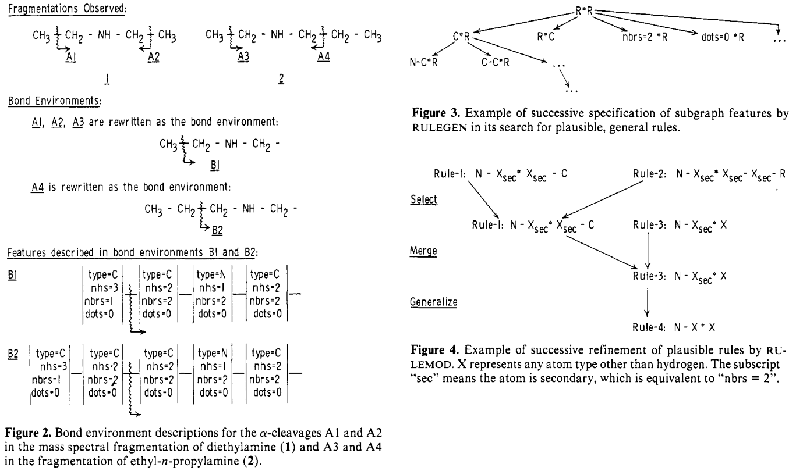
In a 1978 report, they first verified that Meta-DENDRAL reproduced 8 well-known rules for aliphatic amines and estrogens, such as the famous α-cleavage. Some new rules discovered by Meta-DENDRAL for classifying ketoandrostanes. An androstane has 11 ways for attaching a keto group, 55 ways to attach 2 ketos, etc, and though there was a mass of mass spectrometric data for them, there were few cleavage rules due to the complexity of the molecules.
On the three classes of ketoandrostanes for which no general class rules have been reported, the mono-, di-, and triketoandrostanes, the program found general rules describing the mass spectrometric behavior of those classes… The program has discovered consistent fragmentation behavior in sets of molecules which have not appeared by manual examination to behave homogeneously in the mass spectrometer… it comes close to capturing in a computer program all we could discern by observing human problem-solving behavior. It is intended to relieve chemists of the need to exercise their personal heuristics over and over again, and thus we believe it can aid chemists in suggesting more novel extensions to existing theory.
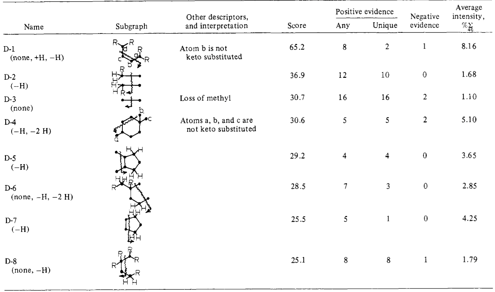
They concluded that it was already possible to create AI assistants to perform tedious tasks for organic chemists.
MYCIN
After the success of DENDRAL, another team developed MYCIN, an expert system for diagnosing bacterial infections like a doctor. Compared to DENDRAL, MYCIN’s main breakthrough was in allowing reasoning with uncertainty. Instead of using probability, it uses “Certainty Factors” (CF), which ranges from \([-1, +1]\), with \(-1\) meaning “certainly false”, \(+1\) “certainly true”, and \(0\) “complete uncertainty”. Given two statements \(p, q\) with CF \(x, y\), the CF for \(p \;\mathrm{AND} q\) is combined according to
\[ CF(x, y)=\begin{cases} X+Y -XY & \text{if } X,Y>0 \\ X+Y+XY & \text{if } X,Y<0 \\ \frac{X+Y}{1-\min(|X|,|Y|)} & \text{otherwise} \end{cases} \]
This combination has these desirable properties:
- Combining unknown with anything leaves it unchanged.
- Combining true with anything (except false) gives true. Similarly for false.
- Combining true and false is a division-by-zero error.
- Combining +x and -x gives unknown.
- Combining two positives (except true) gives a larger positive. Similarly for negatives.
- Combining a positive and a negative gives something in between.
At this point, we strongly recommend that you try out MYCIN for yourself. Unfortunately, unlike the famous ELIZA, it is quite hard to get a working copy of DENDRAL or MYCIN. However, you can experience the fun of MYCIN by asking a modern LLM to roleplay as one. If you still want to do it the old-school way, follow the tutorial here.
Done? Good. MYCIN is very cleanly implemented in Common Lisp for Chapter 16 of Paradigms of artificial intelligence programming, which is available on GitHub. Like all expert systems, it has a logical inference engine (shell) and a knowledge base. The shell performs logical inference under uncertainty according to the rules of certainty factors, while the knowledge base consists of statemets of this kind:
;;;; File mycin-r.lisp: Sample parameter list and rulebase for mycin.
(requires "mycin")
;;; Parameters for patient:
(defparm name patient t "Patient's name: " t read-line)
(defparm sex patient (member male female) "Sex:" t)
(defparm age patient number "Age:" t)
(defparm burn patient (member no mild serious)
"Is ~a a burn patient? If so, mild or serious?" t)
(defparm compromised-host patient yes/no
"Is ~a a compromised host?")
;;;; ...
(defrule 165
if (gram organism is pos)
(morphology organism is coccus)
(growth-conformation organism is chains)
then .7
(identity organism is streptococcus))The full MYCIN system reached impressive results:
70% of MYCIN’s therapies were rated as acceptable by a majority of the evaluators…. 75% is in fact better than the degree of agreement that could generally be achieved by Stanford faculty being assessed under the same criteria.
Impressive enough to catch the eye of people outside of AI community. Here seemed like a system that might actually be commercialized and do the work of doctors. And not just doctors – what else might it do?
To explore this, EMYCIN (“empty MYCIN” or “extensible MYCIN”) was created, which was essentially MYCIN with its knowledge base removed, and some functions added so that one can enter new rules interactively. The experience of an EMYCIN session is that of being interviewed by some programmer who is trying to write down a precise program of how you do your job.
It is more fun, again, to try EMYCIN for yourself by creating a new knowledge base for whatever interests you, and it is easy to get an LLM to roleplay as an EMYCIN. If you prefer reading, then the following example comes from (B. G. Buchanan 1984, 325) (> in front of user input), showing a user creating a new rule for diagnosing hemophilia:
Enter Parms, Rules, Save changes, or Go?
> Rules
Rule number of NEW:
> NEW
RULE025
PREMISE:
> (REASON = BLEEDING, SIGBLD, FINALDEF = COAGULATION,
> DEFPATH = INTRINSIC ~ INTERFERENCE)
RULE025
ACTION:
> (DX = DXHEMOPHILIA)
BLEEDING → BLEEDING-HISTORY?
> Yes
COAGULATION → COAGULATION-DEFECT?
> Yes
Translate, No further changes, or prop name:After this rule is entered, it can be displayed as follows:
RULE025
IF: 1) Bleeding-history is one of the reasons for this consultation,
2) There is an episode of significant bleeding in the patient,
3) Coagulation-defect is one of the bleeding disorders in the patient,
4) The defective coagulation pathway of the patient is intrinsic, and
5) There are not factors which interfere with the patient's normal bleeding
THEN: It is definite (1.0) that the following is one of the bleeding diagnoses of
the patient: The patient has one or more of the following conditions: Hemophilia A,
von Willebrand's syndrome, an IX, XI, or XII deficiency, or a high molecular weight
Kallikrein defect.
PREMISE: (AND (SAME CNTXT REASON BLEEDING-HISTORY)
(SAME CNTXT SIGBLD)
(SAME CNTXT FINALDEF COAGULATION-DEFECT)
(SAME CNTXT DEFPATH INTRINSIC)
(NOTSAME CNTXT INTERFERENCE))
ACTION: (CONCLUDETEXT CNTXT DX (TEXT DXHEMOPHILIA) TALLY 1000)The “MYCIN gang” summarized their lessons learned in (B. G. Buchanan 1984). With certainty factors, shell, and knowledge base, the main pieces of the expert system boom have fallen into place.
What is knowledge?
Knowledge, in the context of expert systems, is basically object-oriented programming + relational database + first-order logic.
There, now I’ve said it. It explains why expert systems is so boring. The useful parts of it ended up being Java + SQL.
To see this, consider a few examples of what is “knowledge” in expert systems.
First-order predicate logic: it looks like
\[ \frac{\forall x, IsHuman(x)\to IsMortal(x) \quad IsHuman(Socrates)}{IsMortal(Socrates)} \]
Robinson unification is an operation in first-order logic, where we have two formulas with variables in them, and unification finds a way to substitute the variables, so that the two formulas become equal. For example:
\[ \frac{\forall x, IsHuman(x)\to Hates(x, Java) \quad IsHuman(Socrates)}{Hates(Socrates, Java)}{(x \leftarrow Socrates)} \]
The frame: Looks exactly like data types in Java.
A semantic graph: a network of frames. Looks exactly like a UMD diagrams.
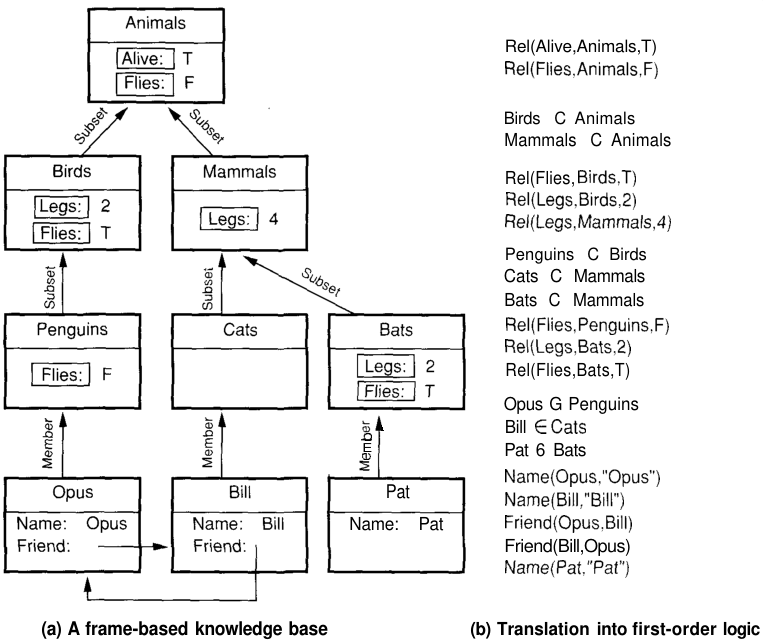
Knowledge Principle
[Edward Feigenbaum:] In 1968, I was writing a paper with Bruce [Buchanan] and Josh Lederberg in which we chose to summarize the evidence from the many DENDRAL experiments from mid-1965 to mid-1968. It was evident that the improvement in DENDRAL’s performance as a mass spectrum analyst was almost totally a function of the amount and quality of the knowledge that we had obtained from Djerassi’s experts, and that it was only weakly related to any improvements that the AI scientists like me and Bruce had made to the reasoning processes used in DENDRAL’s hypothesis formation. So in 1968, I called this observation the “Knowledge is Power Hypothesis.” One data point. Later, as the evidence accumulated from dozens of – or hundreds of – expert systems, I changed the word “hypothesis” to “principle.”
[Bruce Buchanan:] Art Samuel’s work on the checker player: Art had interviewed experts to understand … the feature vector and then he did a good deal of reading about checkers… That impressed me a great deal and I always wanted to be able to do that. [Meta-DENDRAL] did learn the rules of mass spectrometry from empirical data. A footnote on that. The data were very sparse. It took about one graduate student one year to obtain and interpret one mass spectrum, so we couldn’t ask for very much data. This was not a big data problem.
quoted in (Brock 2018)
What was new about expert systems? The previous approach to logical AI focused on general algorithms (usually search) and problem representation, guided by a small amount of heuristics. On the general algorithms side, examples included A* search developed for Shakey the robot, dynamic time warping developed for speech recognition, KMP algorithm for string matching, etc.
While it is anachronistic, a good example of non-trivial data representation for effective search is the bitboard used for computer chess. It represents the entire chess board with a bit array in a clever way, so that many operations, like finding which pieces are attacking a square, becomes bitwise operations, allowing fast game tree search.
Expert systems inverts this focus. Heuristics (in the form of expert knowledge) is placed front and center, while algorithm and representation was almost beside the point – they were all basically flavors of first-order predicate logic inference, and they distinguish themselves by how easy it is for the end user, and how fast it runs (often measured by “number of logical inferences per second”).
We can think of this as an early appearance of dataset in AI. From our scaling-hypothesis point of view, this was a step in the right direction, but it was yet incomplete, since the data was heavily distilled by human experts into rules. Many of the AI researchers recognized the problem, and worked on automatic rule-generation, but none succeeded in general.
Philosophically, expert systems has more in common with inductive, scientific reasoning, while the previous logical AI with deductive, mathematical reasoning (Lindsay et al. 1993). In a position paper coauthored by Feigenbaum and Douglas Lenat, we have a clear statement of the assumptions behind expert systems AI.
“Knowledge is Power” or, more cynically “Intelligence is in the eye of the (uninformed) beholder.”… The Knowledge Principle (KP): A system exhibits intelligent understanding and action at a high level of competence primarily because of the specific knowledge that it can bring to bear: the concepts, facts, representations, methods, models, metaphors, and heuristics about its domain of endeavor… Knowledge is often considered Compiled Search; despite that, the KP claims that only a small portion of the knowledge can be generalized so it applies across domains, without sacrificing most of its power.
Explicit Knowledge Principle: Much of the knowledge in an intelligent system needs to be represented explicitly.
The Competence Threshold: Difficult tasks succumb nonlinearly to knowledge. There is an ever greater “payoff” to adding each piece of knowledge, up to some level of competence (e.g., where an NP complete problem becomes Polynomial). Beyond that, additional knowledge is useful but not frequently needed (e.g., handling rare cases.). Crossing the Competence Threshold, one enters the realm of experts. There, the knowledge-search tradeoff is fairly evenly balanced.
From the hindsight of deep learning, the first hypothesis has been amply justified, the second refuted, and the third appears to be differ case-by-case.19 Lenat, however, bet everything on the three assumptions, in a heroic 30-year-long journey to build Cyc, an expert system AGI.
19 In self-driving cars, it is the long tail of rare events that take the longest to learn, yet they were what is required to get the car to drive at expert level. Further, the improvement is smooth: there is no “threshold” at which the value of one additional rare event drops suddenly. Similarly, Gwern argued that “the last bits are the deepest”.
AI boom
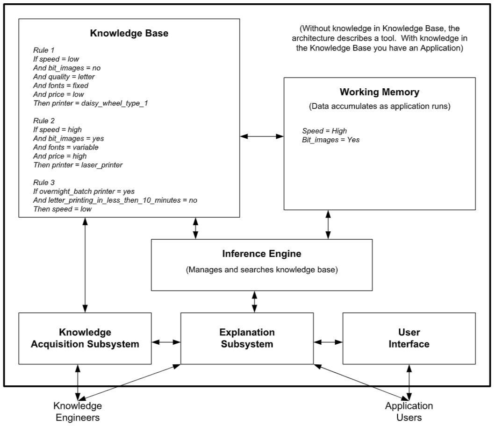
During the late 1970s, expert systems got noticed outside the small scholarly community, and as the 1980s went on, knowledge became money. The first wave of commercial AI arrived, and it lasted for about 10 years.
Instead of describing in detail these systems, we can just admire tha sudden explosion of commercial expert systems:
analysis of physical objects (like buildings or bridges), SACON; determining the structure of proteins from X-ray crystallographic data, in collaboration with experts at UC San Diego, CRYSALIS; interpreting data about a person’s lung functioning coming from an instrument called a spirometer, in collaboration with a doctor at California Pacific Medical Center, PUFF; managing ventilator machines in intensive care units, another collaboration with a CPMC ICU lead physician, VM… Feigenbaum’s lab was funded by IBM to help them develop their first expert system—final diagnosis of errors in disk drives before they were shipped to the customer… GEO, to analyze and form hypotheses about the geology of the bore hole as drilling proceeded down inch by inch… [DARPA], which funded half of the research in Feigenbaum’s lab, wanted an expert system to hypothesize about the behavior of enemy submarines hiding in U.S. coastal waters, interpreting data from ocean noises, and reconnaissance aircraft sightings, and using a large compendium of mostly secret intelligence knowledge about those enemy submarines and their behaviors… the classified expert system HASP for enemy submarine surveillance. Importantly, it included explanations in English for all of its inferred hypotheses, thereby gaining the trust of the Navy personnel at the coastal stations.
…
By 1988, Paul Harmon, an expert systems newsletter editor, counted several thousand expert systems operating in fields as varied as construction, finance, heavy manufacturing, and computer configuration and sales.
In 1980 John McDermott of Carnegie Mellon delivered to Digital Equipment Corporation the first version of XCON, an expert system designed to help the computer manufacturer configure its machines to suit customer demand; by the middle of the decade the company estimated it was sav- ing $40 million annually by use of XCON. The CBS Evening News re- ported in September 1983 that the expert system PROSPECTOR, instantiating the knowledge of nine geologists, had helped a company discover molybdenum deposits in Washington State’s Mount Tolman. Comparable stories proliferated. Companies scrambled to buy expert systems. New companies sprang up to service them. Bright students were lured away from graduate school with salary offers of $30,000.
The AI boom caught even the imagination of the experts themselves:
at the moment the expert system takes hold of the expert’s own imagination. For weeks, perhaps longer, he has watched what is most charitably described as a burlesque of his thinking processes dancing across a display. All of a sudden (or so it seems) the burlesque sharpens into adroit imitation: there before him are the very reasoning processes he has originated, nourished, and cherished over a professional lifetime. His excitement mounts, and he becomes an enthusiastic partner in the last few steps of perfecting the electronic image of his mind. He becomes infected by the “immortality syndrome” as one researcher calls it—elation at the thought that what he knows, has so painstakingly acquired over a lifetime of experience, will live on beyond him.
A best-selling book was full of miraculous stories of growth and business profits:
Mike-in-the-Box, “God in the works” (the captured expertise of an aging, irreplaceable blast furnace expert at Nippon-Kokan), ’’Geoff’s Book” (thousands of expert rules from the head of the senior, top estimator at building contractor Lend Lease of Australia), and J. A. Gilreath (Schlumberger’s ace oilfield data interpreter, whose expertise is now enshrined in that company’s Dipmeter Advisor system) are among the stars we meet. Much of the priceless skill of these experts has been captured by “knowledge engineer”: translators.
At IBM Burlington (the chip operation), a 10 to 20 percent increase in throughput has been realized; this adds up to tens of millions of dollars’ annual savings from just the one system. At the British National Health Service, a demanding and critical evaluation task that took six experts two hours is now done (better) in nine minutes. At American Express, the “decline rate” (decisions not to grant credit) has been reduced by fully one-third, and the value of the single, new AI system is already estimated at $27 million a year. A Westinghouse system (a new service which that firm sells to utilities), aimed at enhancing the utilization of giant electric power generation turbines, contributes a whopping $2 to $3 million per year per customer machine. Then there’s a sales support system at Digital, called XSEL, which has reduced a three-hour system configuration/alternative generation task to fifteen minutes; moreover, less than 1 percent of the systems so specified turn out not to be manufacturable, down from 30 percent before the system was installed—all of which is worth $70 million a year, says DEC, not including immeasurable added customer satisfaction that accrues from providing the customer with more options. And an AI system that aids product design at Canon has made scarce, highly skilled lens designers fully twelve times more productive!
…
For a customer, NKK Steel, IBM built a system that schedules the movement of materials and products and does the assignment of workers to tasks. The expert system was put into operation in September, 1987. It produces in half an hour a schedule that previously took ten hours to prepare and overall saves the company 100 million yen per year (about $700 thousand).
…
Force Requirements Expert System, an expert system to advise on the deployment of ships in the U.S. Pacific Fleet. According to TI, a typical deployment problem would take an experienced operations officer and his staff as much as a week to solve, but with the help of Fresh, the officer can produce a solution by himself in six to eight hours.
Wait, the US Pacific Fleet? Yes! The military took on many expert systems. More on this below.
The market segmented into the following parts:
- Language: Some companies marketed basic language development and consulting, mainly in Lisp and Prolog.
- Expert system building tools: Some companies marketed software for building expert systems. They might be expert system “shells” like the EMYCIN, with some extras to make it easier for non-researchers like engineers to enter their knowledge into the computer.
- Application builders: Some companies would build expert systems on demand. They would send in knowledge engineers into the field and elicit knowledge from experts, by interview, observing, asking questions, etc. At the end of the process, they would deliver the finished expert system.
However, there was a persistent confusion as to the point of expert systems, since even deep into the AI boom period, people still often thought the expert system shell was “the AI” that the AI companies were selling, even when it’s the knowledge engineering that they sold. It was kind of a shell game.
The idea was that there was a piece of magic that was the AI and that this magic, plus a software development environment that made it easy to build these things, was salable… Where was the AI? It wasn’t in the inference engine at all. These inference engines were, after all, pretty simple pieces of software that tested to see if the logic of the rules that the knowledge engineers wrote came up with any conclusions. The AI in complex expert systems was in the organization and representation of knowledge, the attempt to understand the domain under study, and the crystallization of what was important in the domain and how experts in the domain reasoned.
The knowledge bottleneck
If knowledge is power, then how does one acquire more power? The “knowledge bottleneck” already appeared in the earliest papers on DENDRAL:
we could get rid of the “middle man” in the information transfer by educating a programmer in mass spectrometry or by educating a chemist in Lisp. Or we could replace the middle man with a program designed to perform the same function as B (the layman/programmer) in the dialog above. In effect, we have been moving slowly in all three of these directions at once. But what we would most like to pursue is the design of a program to elicit information from an expert who is not also a programmer.
One obvious reason for the encouragingly high level of performance of the computer is the large amount of mass spectrometry knowledge which chemists have imparted to the program. Yet this has been one of the biggest bottlenecks in developing the program… The preponderance of time was now spent by the chemist deciding how to change the rules in the table to bring the program’s behaviour more in line with real data.
There were mainly two kinds of “knowledge acquisition”. Most of it was slow and painful, with knowledge engineers “eliciting” knowledge from experts by interviews and observations. It was a cottage industry for spinning out knowledge, and many recognized this as the great problem for scaling expert systems up. Much of the tooling came into making the cottage industry faster. MYCIN had taken 20 person-years to produce just 475 rules! In contrast, GASOIL in 1986 would take one person-year to produce 2,500 rules, a speed up of 100x. (Roland and Shiman 2002, 194, page 370)
Feigenbaum: I said, “Sato-san [CEO of Fujitsu Laboratories in Japan], what message would you like me to take back to the people in the US about your experience in expert systems?” He said, “Tell them it’s too hard to get the knowledge.”
(Expert Systems Pioneer Meeting, Day 2 Session 7: Why Did the Expert Systems Industry Decline? 2018)
From various reading, it seems to me that the largest possible expert systems assembled by such a cottage industry contained around 10,000 rules. For example, the XCON system had around 16,000 rules. (Barker et al. 1989) Anything bigger than that basically was too complicated for its own good. Except the Cyc.
Feigenbaum: In 1973 there was a guy named Harold Cohen who made an intelligent painter. You guys should actually do some research on that… It was probably the longest-lived expert system in the history of expert systems. Harold died [in 2016]. It was a 15,000-rule system representing the rules that he got out of his own head.
There were many attempts at automatic knowledge acquisition, starting with Meta-DENDRAL, and culminating with Cyc. They all failed to scale up. We will do a detailed case-study of Cyc and its scalability problems.
This is the stuff of excellent AI science. But did Meta-DENDRAL find any application in any industrial setting? No. Nor have any of the other complex machine learning procedures (however, machine induction based on algorithms of Quinlan have had a marginal success). The industry of AI applications is still awaiting the dawn of an era of knowledge engineering significantly aided by machine learning.
Where did it go?
Around mid-1990s, it was pretty much official: the Expert System hype died. According to the AI mythos, after this came the second AI winter. Where did it go?
The new darling of the media – virtual reality – has supplanted AI as having the potential to merge science fiction with real-world applications… Patrick Albert… pointed out the main problem afflicting the AI industry: “companies have been marketing AI technologies, and not solutions.” … the more invisible AI becomes, the more palatable it becomes to the end-user. The day of generic expert system tools is probably over, Arjimand said, to be replaced by off-the-shelf applications.
Both Monte Zweben, President of Red Pepper Software (San Mateo, CA), and Tom Laffey, Chief Technology Officer of Talarian (Mountain View, CA), had similar stories to tell regarding the successful launch of companies selling real-time expert system tools: never, ever call the products “AI”. “Don’t mention AI if you want any venture capital money,” Laffey warned. “Call it something else, such as advanced decision systems. These days, people come to AI almost as a last resort.” Zweben’s company shared the same fate as Talarian: he had to remove or restate every mention of AI from the Red Pepper prospectus before investors would take him seriously. Despite the literally thousands of successfully deployed intelligent ap- plications, AI’s reputation continues to suffer because nobody is giving credit to the AI component. Zweben suggested wish- fully that AI companies insist on being recognized for their contribution to applications, perhaps even demanding an ‘AI inside’ label, it la Intel’s ‘Intel inside’ label on PCs.
Schank, writing near the end of the expert systems hype, argued that AI researchers missed the point about scaling. They thought AI is about designing an algorithm, when it is really quite tedious – real AI is 1% inspiration and 99% perspiration. He used the experience of getting ATRANS to work in practice, a program that read international bank money transfer messages:
Any of Cognitive Systems’ programmers would have been justified in complaining that they had come to work there to do AI, and all they were doing was working on endless details about determining various abbreviations for bank names. They also asked, Where’s the AI? The lesson to be learned from ATRANS is simple enough… AI entails massive software engineering. To paraphrase Thomas Edison, “AI is 1-percent inspiration and 99-percent perspiration.” AI people will never build any real AI unless they are willing to make the tremendously complex effort that is involved in making sophisticated software work.
One serious problem in AI these days is that we keep producing researchers instead of builders. Every new Ph.D. recipient, it seems, wants to continue to work on some obscure small problem whose solution will benefit some mythical program that no one will ever write. We are in danger of creating a generation of computationally sophisticated philosophers.
Winograd argued that expert systems are structured like human bureaucracies, with formalized explicit rules, and so they have same strengths and weaknesses. This explains why they work only in stable and precise technical areas, where exceptions are not the rule. He gave an example expert system that was stuck in development hell for 15 years, presumably as it was in an era (internal medicine) that has too many exceptions to the rules:
One system for medical diagnosis, called CADUCEUS (originally INTERNIST), has 500 disease profiles, 350 disease variations, several thousand symptoms, and 6,500 rules describing relations among symptoms. After 15 years of development, the system is still not on the market. According to one report, it gave a correct diagnosis in only 75 percent of its carefully selected test cases. Nevertheless, Myers, the medical expert who developed it, “believes that the addition of another 50 [diseases] will make the system workable and, more importantly, practical.”
In 1992, Feigenbaum admitted that the hope of generally intelligent expert systems failed. They turned out to be like mesas: narrow, brittle, and isolated. They work well within the knowledge base, but immediately fail when even slightly outside of it. Every expert system was unique and custom-made. They couldn’t be mass-produced, and their knowledge bases are incompatible, so they couldn’t talk to each other or share each other’s knowledge. Although, he dreamed of a “Library of Congress of knowledge codified and represented for expert system use”, which he saw in the Cyc. (E. A. Feigenbaum 1992)
Many years later, in 2018 and 2022, some of the expert systems people reviewed to their younger days to find out what went wrong.
Harmon argued that expert systems failed to “cross the chasm”. A new technology is adopted in two waves, with the first wave driven by small companies (“innovators” and “early adopters”) who were optimistic about its future, and the second wave driven by large companies that sell to the “majority” who have been convinced that it grows the bottom-line. The first wave typically appears at technology fairs, while the second wave typically appears at trade fairs. The “chasm” between the two waves happen because some technologies never get past the “a good idea” stage, and end up being “a good idea that didn’t work out for most”, and it may remain in use only in niche places.
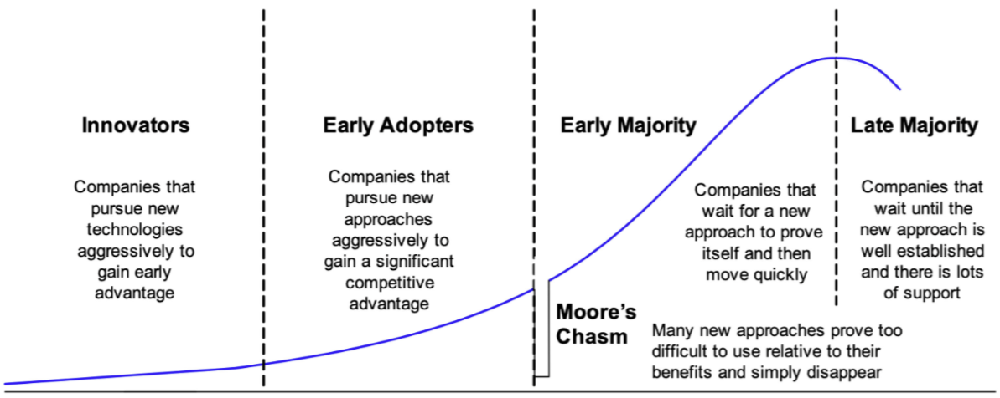
By the late 1990s, most expert systems vendors had disappeared. Some expert systems tool companies survived until later, and large companies like IBM simply shifted their emphasis to other product lines as demand changed. In essence, the expert systems market never really achieved take-off.
Though expert systems don’t cost salary like human experts, they still have a high maintanence cost, because knowledge updates:
Harmon: When you start to see attendance and vendors dropping off, you know that the market is closing down for some reason. That certainly happened in that expert systems array. The second thing is that expert systems knowledge isn’t a constant… If a company had a knowledge base and passed it to somebody else, it would be certainly at the cutting edge. But it would be out of date within a year or two anyway. The ability of these systems to be maintained, to have people bring them up to date is critical, too.
Feigenbaum: In 1987 dollars, to maintain the famous DEC configuration system cost DEC $2.7 million a year because the products kept changing.
(Expert Systems Pioneer Meeting, Day 2 Session 7: Why Did the Expert Systems Industry Decline? 2018)
The more powerful features of expert systems were too difficult to use for people untrained in computer science, and the features that outsiders could use were pretty simple and boring.
Lenat: it was closer to what Ed and others were saying: the tools were too hard to use; the education and knowledge transfer to the people who would have to build the systems wasn’t there. I was on the Inference advisory board. and I loved ART [Automated Reasoning Tool, produced by Inference]. It had context and all sorts of wonderful features and truth maintenance. In general, the first thing that the customers would do is turn all that off because it was very complicated… They just used this narrow little tiny iris that wasn’t quite enough for them to get enough traction to make it cost-effective.
Friedland: People bought zillions of copies of ART probably about 1985 and right around the tradeshow in Los Angeles. The same thing, with IntelliCorp, people bought KEE [[Knowledge Engineering Environment](https://en.wikipedia.org/wiki/Knowledge_Engineering_Environment)] like chocolate candy bars, but it took really skilled people to use those tools effectively just as it takes really skilled people to use these things. NASA spent $1 billion on an SAP system and spent almost no money on consulting advice to use it. It took teams of people, and I was on one of the teams, five years to fix the mess that caused at NASA by buying SAP. It ending up with a system that totally ruined its financial management for years.
Haigh: If you’re Peter Hart or Ed Feigenbaum, you can do amazing things, but there aren’t that many Ed Feigenbaum’s and Peter Hart’s around… How do you scale that up if you sell the tool? You’re saying they turn off all the smart stuff. There isn’t a huge base of people out there who are smart enough and have the right background to do the things that the really smart people can.
(Expert Systems Pioneer Meeting, Day 2 Session 7: Why Did the Expert Systems Industry Decline? 2018)
From a purely business perspective, the profit margins were too thin. Those selling programming language support and generic shells died, because those quickly became commodities with thin profit margin, and could not compete with large incumbents (like IBM) who could run a loss leader.
Allen: the first generation of expert system companies had an extremely skewed image of what the market was because the federal government was coming in and throwing tons of money into the thing… we shipped and the next month we were doing a million a month in revenue… Once that initial fact-finding effort had gone on within those organizations, they said, “Well, it’s either too expensive or we’re going to do it in-house.”
(Expert Systems Pioneer Meeting, Day 2 Session 7: Why Did the Expert Systems Industry Decline? 2018)
Those that survived, survived by pivoting:
- to object-oriented programming tools or databases, which are similar to knowledge bases;
- to relational databases, which are similar to knowledge bases;
- to business rules, which are particularly cheap to construct, because instead of living inside expert heads, they are already written down as business policies and top-down procedural guidelines;
- to consulting, building expert systems for their customers and keep maintaining it with new knowledge.
And knowledge acquisition, the dream of machine learning breaking through the bottleneck? Some of it failed, and some of it was taken over by statistical machine learning and “data mining”, as discovering logical rules and decision trees over a large database. Data science for the 2000s.
Did it succeed after all?
True, the higher dreams of expert system AGI did not pan out, but small parts of AI had successfully broken out from the academia and become infrastructure: practical, invisible, even boring.
Harmon: several of these old expert system tool vendors who then became business rule vendors became part of the business process tool market, and it exists there today… It’s a very easy kind of knowledge to capture. As opposed to interviewing an expert and trying to get them to give you heuristic information, these guys were dealing almost entirely with procedures that had already been stated in a rulebook. In any case, it’s just one variation of what people with this technology went out and found out a niche and did. There was a market for parts of the technology. It just didn’t happen to fit the big model.
Feigenbaum: rules-based systems lives on today, very strongly absorbed into the infrastructure of IT. Somebody mentioned yesterday that if you take off the back cover of some system and you look in there there’s a rule-based system in there… It’s not the full base. It’s not the full inference engine. It’s not the full expert system, but the business rules exist.
(Expert Systems Pioneer Meeting, Day 2 Session 7: Why Did the Expert Systems Industry Decline? 2018)
I imagine the world of knowledge in rings around a mineshaft. Directly inside the mineshaft are researchers, who send out cartloads of barely refined ore. These are then refined into shape by the technologists. Finally those ingots are hammered into shape, to be used by those in the business who just want to get a well-packaged modular piece of tech to do something reliably and cheaply.
Numerical computing started as research projects on the early giant mainframes, which are then turned into numerical programs written in C, which then gets turned into packaged systems like Matlab and Macsyma, usable by people outside the numerical computing community, who just need to calculate the pressure of an oil well or the tension in a building beam.
My guess is that the expert system boom took place because there was something genuinely new: it was the brith of non-numerical software engineering.
Mechanical calculators were present since the 19th century, and numerical methods such as finite elements, weather prediction, linear programming, cybernetics, etc, simply migrated wholesale to electronic computers in the 1940s, and the mathematics and engineering department could simply churn out numerical programmers by giving them a course in ALGOL – a name that means “[numerical] algorithm language”.
In contrast, there was very little symbolic algorithms before computers came around, and it was born essentially around the 1950s as “symbolic AI” or “computer science”. Entire university departments for computer science had to be invented. MIT’s CS department was established in 1963, MIT 1965, and Berkeley 1967. The story makes too much if we assume progress marches one generation at a time:
- The heroic age: Preliminary theoretical AI studies by Turing, McCulloch, Pitts, etc, in the 1940s.
- The classical age: Universities create a department of AI and CS and start teaching graduate students the subject with canonical textbooks, creating a reliable stream of professors and lecturers of the subject, in the 1960s.
- The civilized age: The technology spills out into the commercial world, and universities create undergraduate degrees in computer science dedicated to churning out software engineers, as SWE becomes a professional class with stock options and a retirement plan, in the 1980s.
In 1980, laypeople outside the computer community knew very well that computers can crunch statistical datasets and numerical simulations, and that they can perform if-then-else logical control flows, but they thought that’s all they could do. In the 1970s, expert systems with uncertainty quantification was something new in the research level, as barely refined ore. Around 1980, it had been roughly packaged up as EMYCIN by researchers and technologists, who had used EMYCIN to solve real problems. So, during 1980s, expert systems reached the last stage: to be hammered into a tool for business.
Indeed, at the start of the boom, there was a serious lack of computer science graduates who could write the expert systems. This seemed rather silly, now that we’ve seen that much of what expert systems did are now done by object-oriented programming and relational databases. But remember that back in 1980s, computer science was a purer science, unlike electric engineering. Software engineering was just getting started.
Similarly, there was also the promise of logic programming over imperative programming, of formal program synthesis: the user specifies the results, and a logical inference engine would synthesize a way to get there. This was a development from robot planning (especially Shakey), where the user would input a goal state of the world, and the planner would compute a motion plan to reach that state. This was also a revelation. Compared to the previous method of programming directly the motion plan like writing assembly code, this was like compiling a source code into assembly. This was a major promise of Prolog-based logic programming. I am less certain about where this has ended up, but my hypothesis is the same: When it is possible to specify a task domain by formal logic, then it works, and this lives today in logistical planning software, robotic path-finding, automated compiler design, etc. However, this does not work in domains not logically specified.
So what happened to expert systems? The working parts (knowledge representation, retrieval, logical inference, logistical planning, data dashboards, automatic industrial process control) got rolled into standard software engineering and became too boring to be considered AI. The not working parts (automatic knowledge acquisition, machine learning, vision, speech, translation) got abandoned, only to be resurrected again by statistical machine learning, and then deep learning.
As soon as it works, no one calls it AI anymore.
The working parts of expert systems live behind boring acronyms like Systems Applications and Products (SAP), Automated Reasoning Tool (ART), and Knowledge Management Systems (KMS).20 As a pattern, the areas where expert systems succeeded include logistics planning, business rules, tax code, bureaucratic rules, while they failed basically at any kind of general intelligence in even slightly unstructured environments. The common intuition that they are fragile is largely correct, and they work precisely in standardized environments with minimal change, much like bureaucracies. Indeed, a good intuition is that expert systems are digitized bureaucracies, with the same strengths and weaknesses.
20 Are you bored yet? Here are more! Knowledge base management system (KBMS), enterprise resource planning (ERP), business process management (BPM), process-oriented knowledge management (PKM), business process management system (BPMS), online transactional processing (OLTP), recency, frequency, monetary value analysis (RFM), earnings before interest, taxes, depreciation and amortization (EBITDA)… The last one was not about expert systems, but it might as well be, haha.
We also have another hint of what mattered in the old days. In the 1978 report on Meta-DENDRAL, the authors claimed that a serious problem was simply that software on one machine doesn’t run on another machine. “Just copy it” did not work, because the machines had incompatible, bespoke operating systems. The “write once, compile it everywhere” that we take for granted in software engineering only came around circa 1990.
While the software is almost too complex to export, our research-oriented computer facility has too little capacity for import. Support of an extensive body of outside users means that resources (people as well as computers) must be diverted from the research goals of the project. At considerable cost in money and talent, it has been possible to export the programs to Edinburgh. But such extensive and expensive collaborations for technology transfer are almost never done in AI.
Meanwhile, Feigenbaum left the MYCIN-gang life and became the Chief Scientist of US Air Force, and tried to teach them about software engineering. With regard to technology, the military was still doing it the same way as they did in the 1950s. They prioritized hardware before software, and what software they developed was by the waterfall model they used for SAGE (Boehm 2006). Needless to say, his attempts to teach them about post-1950s software engineering went nowhere. I feel like his story is somehow a reflection of this larger story of how expert system AI became boring software engineering.
He recalls visiting the offices of a defense contractor working on a half-billion-dollar missile defense system under construction. While the innovative physics in the hardware seemed to be on track, the crucial and difficult software controlling the remarkable aiming system was being handled by only two software engineers, who admitted they hadn’t yet made much progress.
The non-working parts of expert systems were all about massive learning. It is fine to encode a few thousand rules by hand, but one does not simply write “a little grammar” for English text or speech. I have a mental picture of three rule-based regimes:
- A few large rules in the center, strongly held. These create the appearance of a rule-based system, and allows one to feel like “a little grammar” is all it takes. This is the Chomskyan and logical AI regime.
- A network of many medium rules, weakly held. They are strongly interacting with each other, clobbering over each other, so that it is hard to make sure the network behaves correctly unless the priority weights are set correctly. If the interaction weights are too low, the system is not “contextual” enough. If the weights are too high, it would become “chaotic”. Expert systems are typcially stuck in this regime. Trying to extend beyond this regime leads to fragile systems and development hell.
- Innumerable little rules and one-off corner cases, piercing through the network like so many porcupine spikes. This is the “unreasonable effectiveness of data” regime. Essentially all unstructured environments like speech, language, and vision are here.
But why the hype?
In our perspective, expert systems seem like boring database and Java programming, and it is hard to imagine people getting hyped about databases or Java, so we tend to imagine the computer scientists promising some miracle technology they could not deliver. But it seems to me that, while they did overestimate what their technologies could deliver, the technologies themselves worked exactly as specified – databases, logical inference, and object-oriented programming!
So the problem now becomes: How could people have been hyped about such boring things?
Although computer scientists had long known that computers could perform symbolic and logical reasoning, in the 1980s, it was a genuine revelation to people outside.
There is a certain inevitability to knowledge engineering and its applications. The cost of the computers will fall drastically during the coming two decades. As it does, many more of the practitioners of the world’s professions will be persuaded to turn to economical automatic information processing for assistance in managing the increasing complexity of their daily tasks. They will find, in most of computer science, help only for those of their problems that have a mathematical or statistical core, or are of a routine data-processing nature. But such problems will be rare, except in engineering and physical science. In medicine, biology, management – indeed in most of the world’s work – the daily tasks are those requiring symbolic reasoning with detailed professional knowledge. The computers that will act as “intelligent assistants” for these professionals must be-endowed with such reasoning capabilities and knowledge.
even high-ranking computing executives. Many did not believe that computers could be programmed to reason and to reach uncertain conclusions. They were so familiar with lock-step algorithms that always reached the correct answer that anything less than certainty simply did not seem like real computing. In a similar way, AI languages like LISP and Prolog were nearly incomprehensible to those who had always imagined that Fortran and COBOL pretty much-defined software development. The excitement about AI and expert systems was almost as if experienced computer professionals were being asked to go back to college and learn computer science all over again.
And while the grandest dreams of expert system AI did not pan out, it still offered incremental profit of a few million dollars at a time. The pieces that worked quickly became too boring to mention, and the pieces that didn’t work got forgotten, or returned to academia, where ideas hope for their eventual justification.
Except the thing called “Cyc”.
Cyc
He divided the universe in forty categories or classes, these being further subdivided into differences, which was then subdivided into species. He assigned to each class a monosyllable of two letters; to each difference, a consonant; to each species, a vowel. For example:
de, which means an element;deb, the first of the elements, fire;deba, a part of the element fire, a flame. In a similar language invented by Letellier (1850)ameans animal;ab, mammal;abo, carnivore;aboj, feline;aboje, cat;abi, herbivore;abiv, horse; etc… children would be able to learn this language without knowing it be artificial; afterwards, at school, they would discover it being an universal code and a secret encyclopaedia.Once we have defined Wilkins’ procedure, it is time to examine a problem which could be impossible or at least difficult to postpone: the value of this four-level table which is the base of the language. Let us consider the eighth category, the category of stones. Wilkins divides them into common (silica, gravel, schist), modics (marble, amber, coral), precious (pearl, opal), transparent (amethyst, sapphire) and insolubles (chalk, arsenic). Almost as surprising as the eighth, is the ninth category. This one reveals to us that metals can be imperfect (cinnabar, mercury), artificial (bronze, brass), recremental (filings, rust) and natural (gold, tin, copper). Beauty belongs to the sixteenth category; it is a living brood fish, an oblong one.
— Borges, The analytical language of John Wilkins
Many years later, surrounded by the humming servers of the Cyc database, Douglas Lenat was to remember that distant afternoon when he first conceived of encoding all of common sense.
AM
Why AM and Eurisko Appear to Work
The Nature of Heuristics
EURISKO
AI alignment people often tell the legend of EURISKO, a program that discovered loopholes in a sci-fi ship-building tournament, allowing its creator to win two years in a row.
AI has for many years understood enough about representation and inference to tackle this project, but no one has sat down and done it… only by pulling together the latest human interface tools, Lisp machines, ideas of enforced semantics, and funding for a decade-long effort could we attempt a project of this scale. (D. B. Lenat, Prakash, and Shepherd 1985)
Cyc
In 1984, Douglas Lenat began the Cyc project, an ambitious attempt to scale symbolic AI up to the real world. Like most expert systems, the Cyc project consists of a giant knowledge base encoded in a LISP-like symbolic logic language, upon which inference engines can be run to produce logical reasoning. Unlike most expert systems, the ambition of Cyc was universal: Its knowledge base would not be restricted to expert knowledge in a particular domain, but all commonsense knowledge in all domains that humans have commonsense about.
Even from the vantage point of 1985, it was clear to all that there was a lot of commonsense to code in, although few could have predicted that Lenat would persevere at it for over 30 years.
They themselves underestimated the difficulty. In 1990, they confidently titled a paper “Cyc: A midterm report” (D. Lenat and Guha 1990), suggesting that they expected to be done around 1995.
The progress report in 1995 stated that, while the system is far from done, they have at least manually entered \(10^5\) “general concepts” and \(10^6\) “commonsense axioms” into Cyc, at the price of 100 person-years. (D. B. Lenat 1995)
Moreover, statistics, colocation, and frequency do not resolve such questions. But the task goes from impossible to trivial if one already knows a few things about boxes and pens, police and demonstrators, and water and teakettles. The same sort of chicken-and-egg relationship characterizes CYC and ML because learning occurs at the fringe of what one already knows. Therefore, in the early 1980s, when the rest of the world was so enthusiastic about Natural Language Understanding, Machine Learning, and AI in general, we were pessimistic. We concluded the only way out of this codependency would be to prime the pump by manually crafting a million axioms covering an appreciable fraction of the required knowledge. That knowledge would serve as a critical mass, enabling further knowledge collection through NLU and ML, beginning in the mid-1990s. Mary Shepherd and I embarked on that task in 1984, knowing we had little chance of success, but seeing no alternative but to try… we are now moving toward the transition point where NLU and ML are supported. The rest of the world is disillusioned and pessimistic about symbolic AI, but ironically, as CYC reaches closure, our hopes for NLU and ML in the next 10 years are very high.
… give CYC enough knowledge by the late 1990s to enable it to learn more by means of natural language conversations and reading. Soon thereafter, say by 2001, we planned to have it learning on its own, by automated-discovery methods guided by models or minitheories of the real world. To a large extent, that’s just what we did. At the end of 1994, the CYC program was mature enough to spin off from MCC as a new company – Cycorp – to commercialize the technology and begin its widespread deployment.
In 2016, Lenat finally declared the Cyc project “done” and set about commercializing it.
Having spent the past 31 years memorizing an astonishing collection of general knowledge, the artificial-intelligence engine created by Doug Lenat is finally ready to go to work… most of what is left to be added is relevant to a specific area of expertise, such as finance or oncology.
Among other projects, the company is developing a personal assistant equipped with Cyc’s general knowledge. This could perhaps lead to something similar to Siri… the CEO of Lucid says the new company is in talks with various others interested in using the Cyc knowledge base. Lucid has been working with the Cleveland Clinic, for example, to help automate the process of finding patients for clinical studies.
That was essentially the last we heard from Cyc.
When looking at this figure from 1985, one is simultaneously filled with respect and sadness, for they were facing impossible odds, and yet they charged right into it.

Their “midterm report” only accentuates this sense of tragedy, of seeing them fighting impossible odds, and losing. They saw with clarity that there is no shortcut to intelligence, no “Maxwell’s equations of thought”.
The majority of work in knowledge representation has dealt with the technicalities of relating predicate calculus to other formalisms and with the details of various schemes for default reasoning. There has almost been an aversion to addressing the problems that arise in actually representing large bodies of knowledge with content. However, deep, important issues must be addressed if we are to ever have a large intelligent knowledge-based program: What ontological categories would make up an adequate set for carving up the universe? How are they related? What are the important facts and heuristics most humans today know about solid objects? And so on. In short, we must bite the bullet.
We don’t believe there is any shortcut to being intelligent, any yet-to-be-discovered Maxwell’s equations of thought, any AI Risc architecture that will yield vast amounts of problem-solving power. Although issues such as architecture are important, no powerful formalism can obviate the need for a lot of knowledge.
By knowledge, we don’t just mean dry, almanac-like or highly domain-specific facts. Rather, most of what we need to know to get by in the real world is prescientific (knowledge that is too commonsensical to be included in reference books; for example, animals live for a single solid interval of time, nothing can be in two places at once, animals don’t like pain), dynamic (scripts and rules of thumb for solving problems) and metaknowledge (how to fill in gaps in the knowledge base, how to keep it organized, how to monitor and switch among problem-solving methods, and so on). Perhaps the hardest truth to face, one that AI has been trying to wriggle out of for 34 years, is that there is probably no elegant, effortless way to obtain this immense knowledge base. Rather, the bulk of the effort must (at least initially) be manual entry of assertion after assertion. (D. Lenat and Guha 1990)
Robots
ELIZA
Science promised man power. But as so often happens when people are seduced by promises of power … the price actually paid is servitude and impotence.
– the book jacket to (Weizenbaum 1976)
ELIZA is well-known as the first popular chatbot. Fortunately, unlike the others like EPAM or SHRDLU, ELIZA is so famous that it is available everywhere. We will simply describe how ELIZA works. The detailed code and further information is online at ELIZAGEN.
According to the original paper (Weizenbaum 1966), ELIZA is essentially a word substitution program of minimal content, roleplaying as a Rogerian therapist. This role was chosen because a psychotherapist is one of the few roles that can pretend to know nothing about the world.
If, for example, one were to tell a psychiatrist “I went for a long boat ride” and he responded “Tell me about boats”, one would not assume that he knew nothing about boats, but that he had some purpose in so directing the subsequent conversation.
ELIZA is programmable: It reads in an “ELIZA script” (a dialect of LISP) that looks like
(SORRY ((0) (PLEASE DON'T APOLOGIZE)
(APOLOGIES ARE NOT NECESSARY)
(WHAT FEELINGS DO YOU HAVE WHEN YOU APOLOGIZE)))
(EVERYONE 2 ((0 (* EVERYONE EVERYBOOY NOBODY NOONE) 0)
(REALLY, 2) (SURELY NOT 2)
(CAN YOU THINK OF ANYONE IN PARTICULAR) (WHO, FOR EXAMPLE)))
(EVERYBODY 2 (= EVERYONE))
(NOBOOY 2 (= EVERYONE))
(NOONE 2 (= EVERYONE))This snippet shows several features of the ELIZA script. A script is a list of rules. Each rule begins with a keyword like SORRY, followed by an optional rank, which determines how early the rule applies. A higher-ranked rule would beat out a lower-ranked rule. If there is no rank, then whatever appears first in the script applies. After that, there is a list of rewrite rules, which were essentially the same as regex expressions. For example, (0 (* EVERYONE EVERYBOOY NOBODY NOONE) 0) would, in regex expression, be (.*) (EVERYONE|EVERYBODY|NOBODY|NOONE) (.*), and the rewrite rule (REALLY, 2) then corresponds to REALLY $2.
Indeed, once we see this, we can write a short ELIZA in python:
import re
rules = {
"everyone": {
"rank": 2,
"decomposition": r"(.*) (everyone|everybody|nobody|noone) (.*)",
"reassembly": ["Really $2?", "Surely not $2?", "Can you think of anyone in particular?"]
},
"i am": {
"rank" : 1,
"decomposition": r"(.*) i am (.*)",
"reassembly": ["How long have you been $2?", "Do you believe you are $2?"]
},
"sorry": {
"rank": 0,
"decomposition": r"(.*) sorry (.*)",
"reassembly": ["Please don't apologize.", "Apologies are not necessary."]
}
}
def eliza_response(user_input):
user_input = user_input.lower()
matched_rules = []
for keyword, rule in rules.items():
match = re.match(rule["decomposition"], user_input)
if match:
matched_rules.append(
(rule["rank"], match, rule["reassembly"])
)
if matched_rules:
# Apply precedence, fallback to first match if ranks are equal
matched_rules.sort(reverse=True, key = lambda x : x[0])
_, match, reassembly_options = matched_rules[0]
response = reassembly_options[0]
return response
return "I am not sure I understand you fully."
while True:
user_input = input("You: ")
if user_input.lower() == "quit":
break
response = eliza_response(user_input)
print("> " + response)The full ELIZA also has a single MEMORY keyword which allows it to refer to what the user has said previously, though the core idea is there: it is regex parsing and rewriting.
ELIZA was designed to be extensible, and extensions had been used by writing other ELIZA scripts. In the language of expert systems, ELIZA is a shell which can use the scripts as knowledge bases. See ELIZAGEN for some references to using ELIZA in education, such as for teaching poetry and the 4-vector. (Taylor 1968)
Weizenbaum was dismayed to find that people treated ELIZA as if it understood what they said, and became increasly concerned with AI and started arguing against it in various ways. To us, the most interesting critique is that he rejected the philosophical position behind the Turing test, that to simulate understanding is to understand. After all, ELIZA knew nothing at all, yet people treated it as if it understood a lot. He pointed to Chomsky’s work as a good example of theory-guided AI science, contrasted with the “it seems to work” AI performance. In Chomsky’s terms, it is the contrast between competence and performance.
After all, a plain typowriter in some sense mirrors the behavior of tic child (one types a question and gets no response whatever), but it does not help us to understand autism. A model must be made to stand or fall on the basis of its theory… The failure to make distinctions between descriptions, even those that “work,” and theories accounts in large part for the fact that those who refuse to accept the view of man as machine have been put on the defensive.
Recent advances in computer understanding of natural language offer an excellent case in point. Halle and Chomsky, to mention only the two with whom I am most familiar, have long labored on a theory of language which any model of language behavior must satisfy. Their aim is like that of the physicist who writes a set of differential equations that anyone riding a bicycle must satisfy. No physicist claims that a person need know, let alone be able to solve, such differential equations in order to become a competent cyclist. Neither do Halle and Chomsky claim that humans know or knowingly obey the rules they believe to govern language behavior. Halle and Chomsky also strive, as do physical theorists, to identify the constants and parameters of their theories with components of reality. Workers in computer comprehension of natural language operate in what is usually called performance mode. It is as if they are building machines that can ride bicycles by following heuristics like “if you feel a displacement to the left, move your weight to the left.”
So far, this is fairly standard critique of a performance-over-competence culture in AI. However, Weizenbaum was driven by a moral urgency as he looked into the deeper source for this mistake, and finding a moral-philosophical error:
- There are multiple categories of things.
- Humans (and perhaps sufficiently human-like objects, like chimpanzees) are the only category where morality makes sense.
- If \(x\) is an object in the human-like category, then asking “Is \(x\) a meat machine?” is a category error, of treating objects in the human category as if they are objects in the technological category. The right answer is to reject this “technological question” and ask a “human question” instead, like “What is wrong with you to ask such a question?”.
He was particularly incensed by Kenneth Colby’s DOCTOR program, which was similar to ELIZA, except intended for production. Colby was a psychiatrist who saw the plight of patients who saw therapists maybe once a month – if lucky. He argued that if an artificial DOCTOR could provide some help, it is better than nothing, and some people agreed.
How is Al bad? Are we hurting people by doing it? I don’t know anyone who has suffered from it yet. (In fact, despite Weizenbaum’s arguments about Colby and automated psychotherapy, I remember a non-speaking adult and several autistic children who began to talk because they were talking to Colby’s non-threatening machine.)
To Weizenbaum, this is dehumanizing and disrespectful, a moral error, and whether it actually helps patients improve – as measured by quantitative evidence like whether non-verbal people started speaking again – is irrelevant. Thinking that it is a relevant question just shows confusion of the performance of therapy with the competence of therapy, and a deeply technological mentality:
The question “Is the brain merely a meat machine?”, which Simon puts in a so much more sophisticated form, is typical of the kind of question formulated by, indeed formulatable only by, a technological mentality. Once it is accepted as legitimate, arguments as to what a computer can or cannot do “in principle” begin to rage and themselves become legitimate. But the legitimacy of the technological question – for example, is human behavior to be understood either in terms of the organization or of the physical properties of “components” - -need not be admitted in the first instance. A human question can be asked instead. Indeed, we might begin by asking what has already become of “the whole man” when he can conceive of computers organized in his own image… Whoever dictates the questions in large part determines the answers. In that sense, technology, and especially computer technology, has become a self-fulfilling nightmare… We must come to see that technology is our dream and that we must ultimately decide how it is to end.
He presented his full thesis in a book Computer Power and Human Reason: From Judgment to Calculation (1976), with the following theses:
- Computers might be intelligent, but they will never be wise (or to feel emotions, to love, etc). To “calculate” requires just intelligence, but to “judge” requires wisdom.
- The development of AI threatens to replace judgment with calculation, which will destroy human dignity. This replacement of judgment with calculation is an absurd political ideology, and must be resisted politically.
- If, however, we do not resist, but keep following this political ideology, we would end up with the obviously absurd conclusion that “the brain is merely a meat machine”. Reductio ad absurdum.
- This dangerous development of AI did not come from a wise scientific project of understanding how human intelligence works, but from a megalomaniac, obsessive-compulsive desire to make machine parodies of human behavior. The method of AI development was heuristic, empirical, a kind of “I wonder what the machine would do if I write this program…”, without a scientific theory.
When the book came out, it received many reviews and counter-reviews, resulting in a “Weizenbaum controversy”. I found this reply by Weizenbaum the funniest:
I have in mind also the teaching urged on us by some leaders of the AI community that there is nothing unique about the human species, that in fact, the embrace of the illusion of human uniqueness amounts to a kind of species prejudice and is unworthy of enlightened intellectuals. If we find nothing abhorrent in the use of artificially sustained, disembodied animal brains as computer components, and if there is nothing that uniquely distinguishes the human species from animal species, then – need I spell out where that idea leads?
quoted in (McCorduck 2004, 370)
Apparently Weizenbaum, in his human-centered wisdom, rejected Darwinism as well. In any case, his critiques seem perennial,21 though irrelevant for the further evolution of technology, which is exactly the techno-drenched nightmare he was trying to warn us away from, to no effect. We sleepwalk yet deeper into this nightmare.
21 Witness some modern critiques of AI, especially from the Critical Humanities. Though a few critical humanists really were critical of humanity, which brings the amusing prospect of another nightmare of Weizenbaum, this time from the opposite direcion of “We must come to see that humanity is our dream and that we must ultimately decide how it is to end.”
As the archaeology of our thought easily shows, man is an invention of recent date. And one perhaps nearing its end. If those arrangements were to disappear as they appeared, if some event of which we can at the moment do no more than sense the possibility – without knowing either what its form will be or what it promises – were to cause them to crumble, as the ground of Classical thought did, at the end of the eighteenth century, then one can certainly wager that man would be erased, like a face drawn in sand at the edge of the sea.
SHRDLU
During the early days, the only robots were “Unimates”, arms blindly performing preprogrammed motions, but there had always been the dream and hope of a robot that can see and act, wih proper hand-eye coordination. Perhaps even to speak.
By writing the famous SHRDLU, Terry Winograd took a small step towards this dream for his PhD in mathematics during 1968–1970, and published it in a long journal article (Winograd 1972). Again like ELIZA, it is better played than explained, so please play with it now. In the program, the user carries on a conversation with the computer, moving objects, naming collections and querying the state of a simplified “blocks world”, essentially a virtual box filled with different blocks. It totaled ~500 KB of LISP code. I have saved the original code for safe-keeping.22
22 I really don’t recommend reading it. Though it was in a dialect of LISP, it was written in the impenetrable style of assembly code. I will just write some amusing discoveries in the code base:
it occupies around 200k of core (caution: indiscriminately running a job that big in the middle of the day is a good way to make enemies!!!!! Alway check the level of system usage before loading…)
–
mannewfrom the SHRDLU archive
The original SHRDLU had some manual fixes in the compiled assembly code (!). Terry Winograd’s first research student rewrote much of SHRDLU so that it is portable. Some people sent letters (physical letters!) to request the code, and they would duly mail it out (by magnetic tape?). As one can imagine, only a few dozen source codes were mailed out, according to SHRDLU resurrection (created in 2002, and last updated on 2013-08-22).
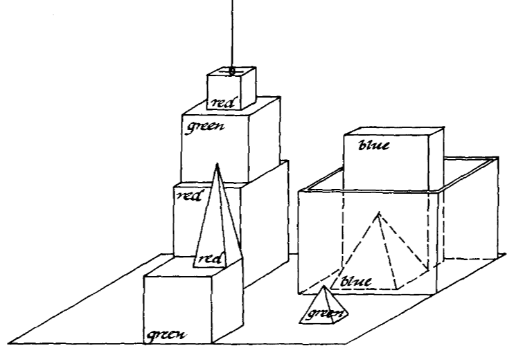
The main part of SHRDLU has the following parts:
- A natural language understanding (NLU) module, which uses
DICTIONARY,GRAMMAR,SEMANTICS, and so on, to parse user input into a logical expression. PLANNER, which takes the state of the world (as a logical expression) and the user input (as another logical expression), and compute a motion plan for the simulated arm.MOVER, which simulates a robot arm. It has only three kinds of commands:MOVETO,GRASP,UNGRASP.- Blocks world simulator.
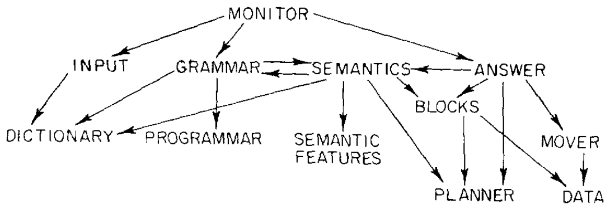
The key parts of the system are the NLU and the PLANNER.
The PLANNER, just like the GPS of Simon and Newell, starts with the goal as the root node, and searches for a chain of logical operations that would eventually lead to a leaf node equal to the current state of the world.23 This was called “backward chaining”, though it was the same as the means-end analysis of GPS. It then stores this chain of logical operations, and converts it into a sequence of MOVER commands and sends them to MOVER. When asked “Why did you do it?”, it would convert this plan into an explanation in English.
23 For a detailed exposition of how SHRDLU-like AI systems perform planning by symbolic logic, see (Russell and Norvig 2021, chap. 11.2).
The NLU module parses the sentence into a tree by “systemic grammar” which while different from Chomskyan generative grammar in details, is the same in spirit.
For example, “Harry slept on the porch after he gave Alice the jewels.” is parsed to:
(#SLEEP :HARRY :RELl)
(#LOCATION :REL1 :PORCH)
(#GIVE :HARRY :ALICE :JEWELS :REL2)
(#AFTER :REL1 :REL2)Instead of analyzing syntax and semantics independently, SHRDLU combines them closely to determine the correct parse of a sentence. For example, a user input “Pick up the red cube.” would only be parsed correctly if SHRDLU actually checks the state of the world that there really is exactly one (#SHAPE :CUBE :REL1) (#COLOR :RED :REL1). If there are two, it would then reply “I don’t know which one you meant.” and if there are none, it would reply “I can’t pick up a nonexistent object.”.
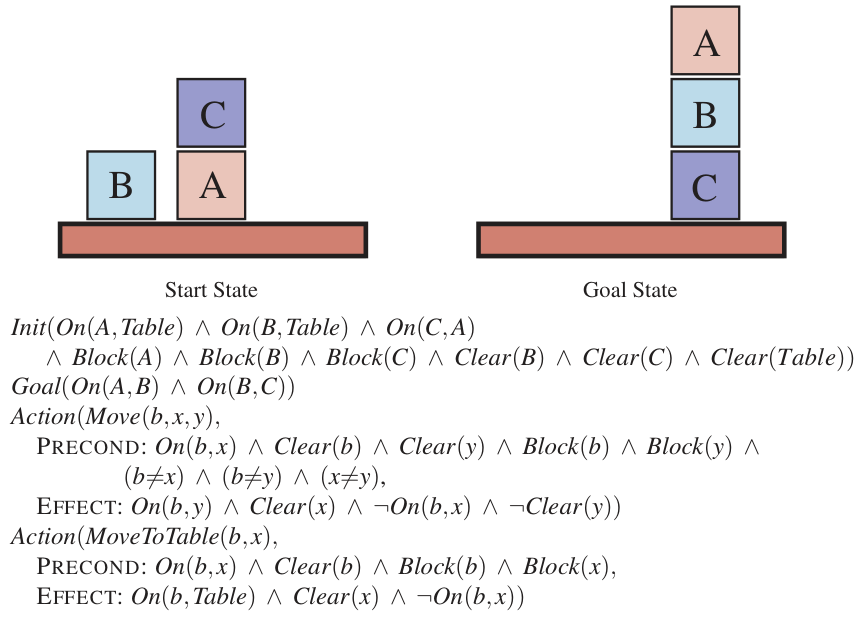
SHRDLU was a milestone, and perhaps it was too good to be true. Like the Georgetown–IBM demo, it attracted and impressed, but led to inevitable disappointment when the success failed to scale up. Why was there a hype in the first place, though?
In 1991, as the expert systems hype was dying down, Schank wrote an essay trying to diagnose the source of the hype. One source, he argued, was the focus on designing a good theoretical framework that is verified on small scale demos and “microworlds”, and expect it to simply scale up.
Nevertheless, there were otherwise intelligent people claiming that Winograd’s (1972) SHRDLU program that worked on 31 examples had solved the natural language problem or that MYCIN (Shortliffe 1976) had solved the problem of getting expertise into a computer. Prior to 1982, it is safe to say that no one had really tried to build an AI program that was more than simply suggestive of what could be built. AI had a real definition then, and it was the gee whiz definition given earlier.
Winograd in an interview shortly afterwards concurred:
WINOGRAD: Well, implementation and product are two stages. That is, implementation was always there as the coin of the realm. Implementation meant something you could show off. It didn’t mean something that somebody else could use… there was no attempt to get it to the point where you could actually hand it to somebody and they could use it to move blocks around… Pressure was for something you could demo… I think AI suffered from that a lot, because it led to “Potemkin villages”, things which – for the things they actually did in the demo looked good, but when you looked behind that there wasn’t enough structure to make it really work more generally.
NORBERG: Is that a question of size, or is it a question of the idea itself - the idea’s too small?
WINOGRAD: The idea of –?
NORBERG: Well, let’s say the ideas behind the blocks world, SHRDLU.
WINOGRAD: Well, I think it was based on a presupposition – at least an attitude – that making things work in the large, really working, was just like getting a demo except more details to be filled in. That is, if you had a basic idea and you could show it worked on something then it was just a sort of grubby, detail work to fill in all, you know, the hundreds of entries you would need to make it work for real. But that – an idea – and this is tied to the top-down, rationalistic way of approaching it, right. An idea which said, “here’s a nice logical way this should work – would work in practice if you just went far enough with the details.” And I think that’s been a problem with AI all along. It’s true in problem-solving, right? Problem-solving, as conceived by Newell and Simon and developed, and so on, has a certain realm of applicability but it’s very different from, you know, you coming to me and saying, “I have a problem. Would you help me solve it?”, in terms of – to take the most obvious things - the hard part is figuring out what the problem space is, not searching it.
Philosophically, it seems like the rational methodology of theoretical physics: One has a good theory, which can be checked in a precise experiment in a vacuum. If the observation is as predicted, then one assumes it would simply scale up. Similarly, if a theory, such as neural networks, cannot perform something as simple as testing for connectivity (as Minsky and Papert argued), then that theory is disproven. In this case, systemic grammar was the linguistic theory to be tested, and the blocks world of SHRDLU constituted a laboratory proof. That it never scaled up was a shame, but not something people expected back then.
This focus on toy models, “microworlds”, and proofs of concepts, was prevalent, and indeed the best way to obtain knowledge, if one accepts the rational methodology.
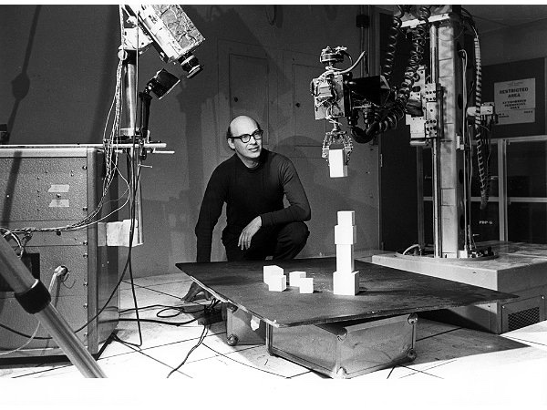
We know better now. The actual trajectory of AI has destroyed faith this methodology, but why? It is still mysterious, and many still argue that we should not accept this.
Shakey
In 1964-04, the Stanford Research Institute (SRI) submitted a proposal to ARPA to build a robot that could move through a cluttered room using its own cameras, with the unassuming name “Intelligent Automata” so that it did not appear to be a sci-fi project. It was later renamed to “Intelligent Automata to Reconnaissance”.24 This resulted in Shakey the robot, developed during 1966–1972. Despite the deliberately unassuming name, it had the ambition of integrating all the subfields of AI as then understood into a single package.
24 Annoyingly, I have checked all the official reports – the interim reports 1, 2, 3, 4, and the final report, and none of them told me what it is supposed to reconnoiter for!
to develop an experimental test bed for integrating all the subfields of artificial intelligence as then understood. SRI wanted to integrate in one system representation and reasoning, planning, machine learning, computer vision, natural language understanding, even speech understanding, for the first time.
Even before it was finished, it became a celebrity. The Life magazine called Shakey the “first electronic person” in 1970.25 A 1972 documentary shows its operations, in which one can see its shaking motion, and how it stops after each straight-line motion. (Institute 1972) The shaking is due to the springs in two wheels, and the stopping is to wait for computer vision and planning to finish, and for the shaking to stop. Early during development, it was tethered. A bit later, the tether was removed, and the researchers found it to mysteriously rotate once in a while. It turned out to be a vestigial subroutine meant to untwist the tether. (Peter Hart, at 05:55)
25 This article was considered sensational and misleading by most of the people who worked on Shakey.
an article that was more than science fiction: the AI community feels it was victimized in this instance by outright lies. Said Rosen, He came here and all of us spent a great deal of time being very honest and candid with him. Then he didn’t present the whole story. He picked the sensational things and left out the others… Bert Raphael, who had spent a lot of time with Darrach, goes further: …He wrote it as if he’d seen many things he never saw, and wrote about seeing Shakey going down the hall and hurrying from office to office, when in fact all the time he’d been here we were in the process of changing one computer system to another and never demonstrated anything for him. There were many direct quotes that were imaginary or completely out of context.
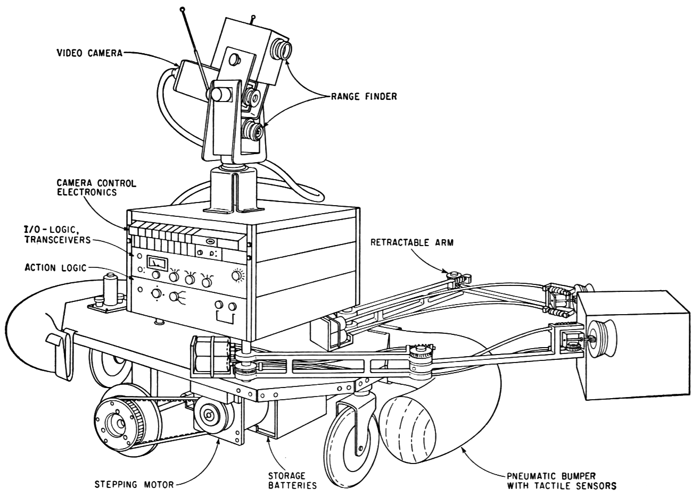
56''L; 35'' W; 57'' H. Source.
{kind=link}
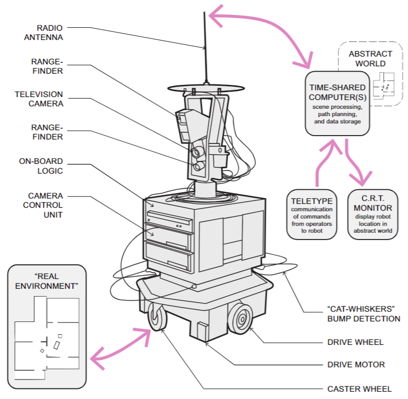
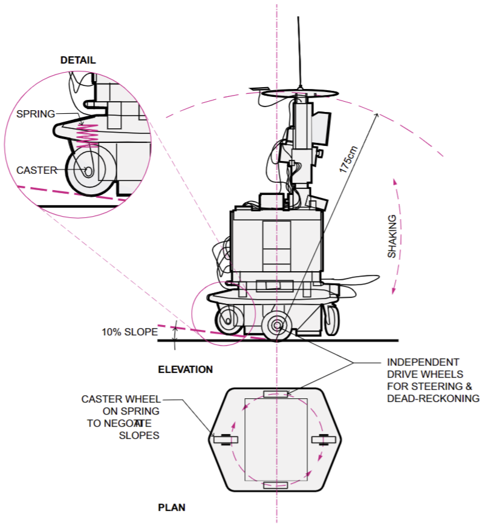
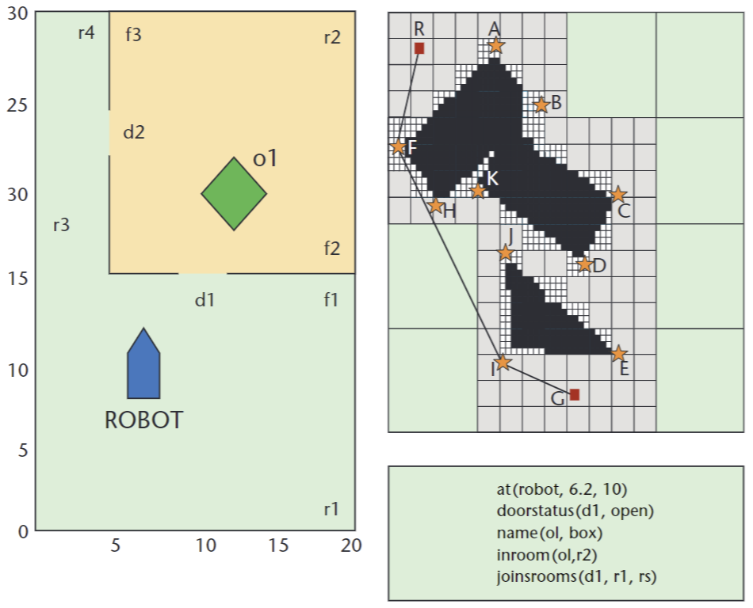
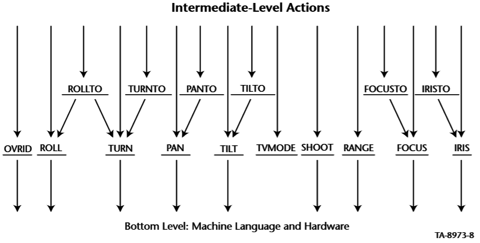
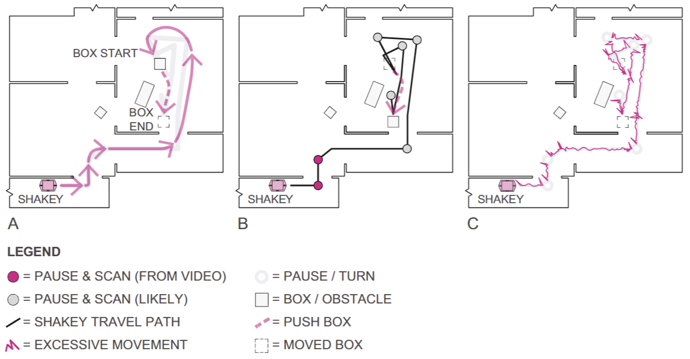
It was a fine example of logical AI, and several classical algorithms were developed specifically for it, including the A* search for pathfinding on a graph, the Hough transform for its vision; and the visibility graph method specifically for pathfinding in a Euclidean plane with obstacles. Like SHRDLU, it represented the state of the world and the goal state using first-order predicate logic, and planned by logic programming (mostly backward chaining and Robinson resolution). It also understood natural English commands. It had a primitive level of rote learning, in the sense that it memorized previous plans (“macros”), which could then be used as single components in later plans. These all worked and still continue to work.
Shakey also demonstrated the same lesson of expert systems against the generic logical AI approach:
Shakey showed that you could not, for example, take a graph-searching algorithm from a chess program and hand-printed-character-recognizing algorithm from a vision program and, having attached them together, expect the robot to understand the world. As Raphael put it, there are serious questions about the interaction between knowledge in different domains… the overwhelming message–not always recognized by those doing the robotics work themselves–was that general principles of intelligence were insufficient… there was considerable resistance to that idea. Edward Feigenbaum and his [DENDRAL group] were coming to the same conclusion, but they felt very lonely in that discovery. Joel Moses, whose thesis had relied on expertise instead of general principles, remembers the frustration of trying to expound that point of view. “Papert almost cried once,” Moses remembers. “He said, ‘How can you get those guys to listen?’ That was 1966, maybe 1968.” But the robots seemed to prove the view beyond a shadow of a doubt.
But since AI is whatever doesn’t work yet, we will focus on what barely worked: its vision. Shakey’s natural habitat was a toy model of an office space, designed specifically to be as easy to see as possible. If computer vision could not approach the real world, the real world could approach computer vision.
The project team was well aware of Shakey’s limited mechanical and sensory capabilities, and designed a correspondingly simple experimental environment consisting of half a dozen rooms populated with large, geometric blocks. The blocks were painted so that edges were visible to the low-resolution TV camera, while still being sufficiently reflective for our homemade laser rangefinder to work. We also used dark baseboards, again for visibility, and exploited them to update the position error that accumulated in the dead reckoning process that relied on Shakey’s stepping motors.
Shakey’s vision system was “scene analysis”. In short, it analyzes a picture as a geometer would expect. It starts by discovering edges, then performs some computational geometry on them to recover outlines of basic shapes, such as cubes, then fills in the faces, then fills in the bodies between the faces. The algorithm had to do something clever to deal with occlusions. In the end, a complete 3D scene populated with 3D objects is recovered.
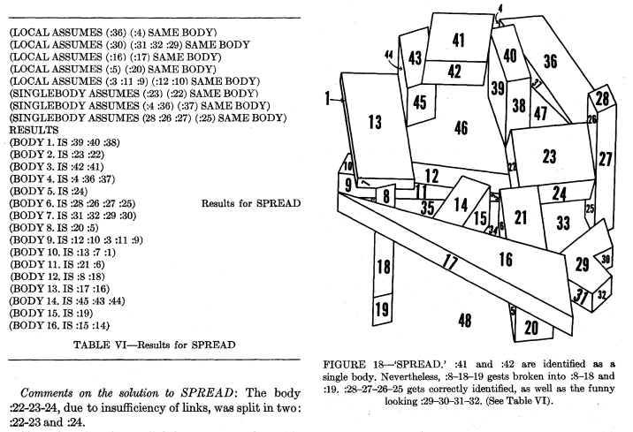
After converting a grayscale image to a line drawing, the system uses a “formal grammar” of line drawings (look up “Huffman–Clowes scene labeling”) to identify 4 kinds of objects: wedge, cube, wall, floor. For example, Wedge = TRIANGLE OR TRIANGLE + QUAD, while Cube = QUAD + QUAD + QUAD. The more grammatical rules, the more object classes the system could identify.
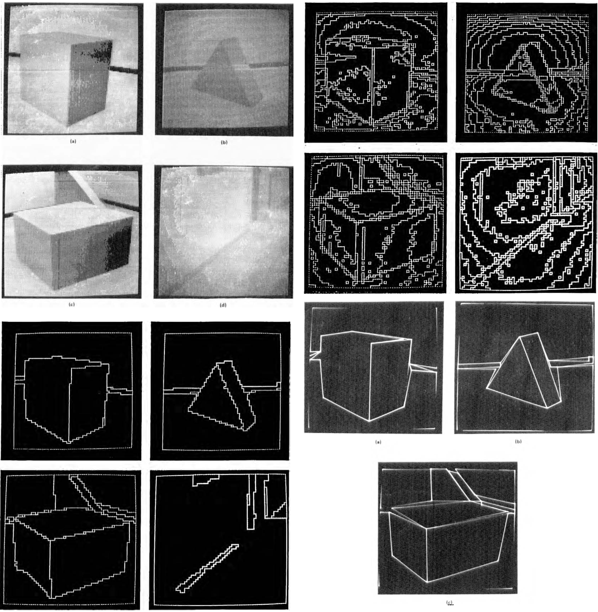
One might question why they decided to identy only 4 kinds of objects. The reality is that it is simply very difficult to perform scene analysis on anything more complicated. Indeed, in a 1972 PhD thesis, David Waltz extended scene analysis to shadows, and had to catalog “thousands of junctions, in order to deal with cracks and shadows”. [Waltz (1972), page 48; nilssonQuestArtificialIntelligence2009, page 185]
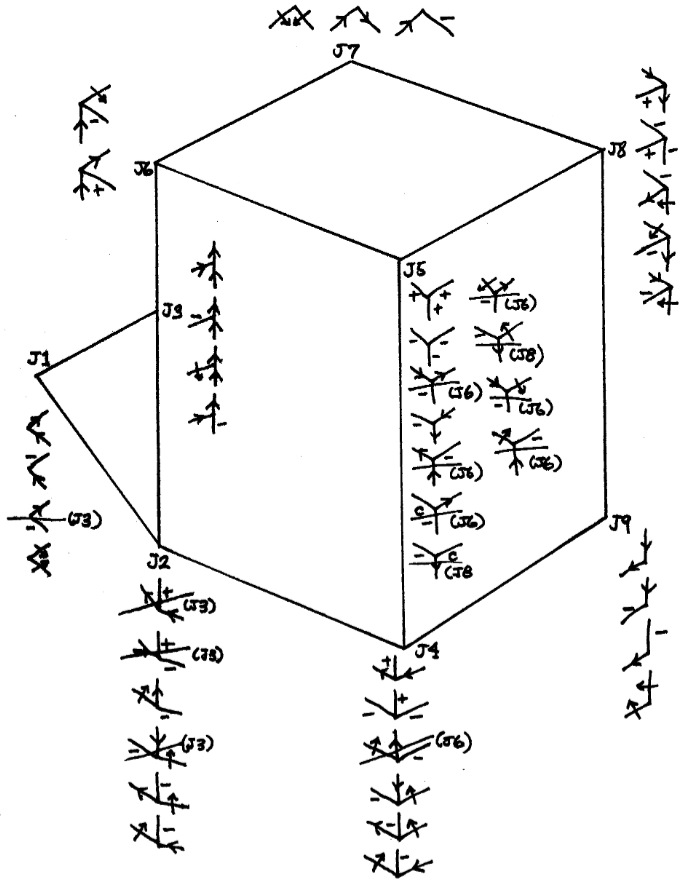
Still, since Shakey’s computer ran at just 0.3 MIPS, it was doing its best. As compute improves, the best paradigm changes from the logical approach, to the statistical, to the neural. This was another early instance of the bitter lesson.
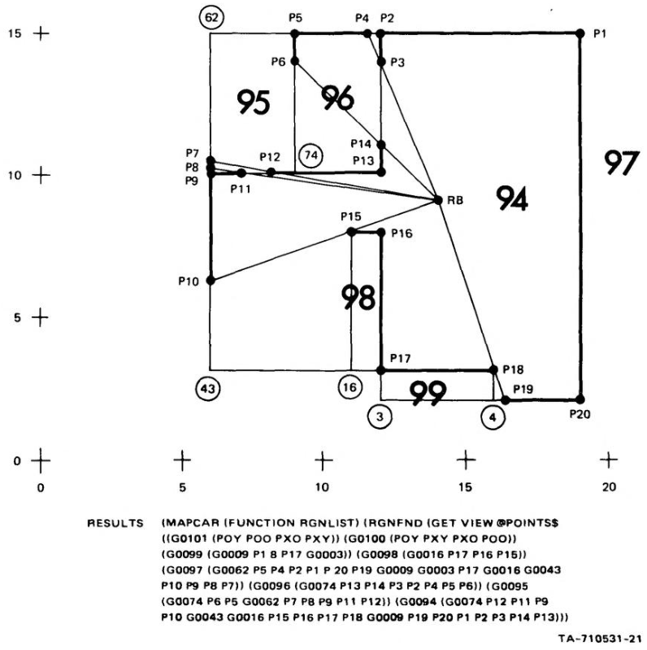
ISUPPOSEW (1971) that processes the scene as a list of line segments. I picked this mainly for its aesthetic quality. (Raphael et al. 1971, 197)Other than the difficulty of programming (enumerating thousands of rules can’t be fun), it was also very brittle. Moravec reports an early 1977 robot that featurizes camera images taken between two steps in the robot trajectory and compares them to triangulate the scene. It only worked on very clean and uncluttered scenes with sharp images:
[early 1977] The program would take a picture and choose up to a hundred features. It would then drive the robot forward about a meter, stop, take another picture, and search for the same features in the second image. Then it would invoke the camera solver to find the robot movement and the three-dimensional locations of the features that explained their apparent motion from one image to the other. Despite much fine-tuning, the program’s error rate never dropped below about one wrong motion solution in four, meaning the robot could move about four meters before becoming confused about its position–discouraging. The camera solver repeatedly tweaked an estimate of the robot’s motion to make the features line up as well as possible, and threw away those that seemed too far off… 10–20% of the feature matches were wrong, often because an area chosen in a first image had, in a second image, been eclipsed or changed in appearance by point-of-view or lighting effects or camera noise… It was necessary to track about one hundred features to succeed even three steps in four, consuming several minutes of computer time. Months of fiddling with the program’s mathematics and assumptions made little difference.
In fact, there was a little bit of faking in the demo movie:
its most impressive feat – moving a wedge to a block, ascending it, and pushing off a smaller block – was recorded on film piecemeal, requiring multiple takes – and several hours – for each error-prone stage… Shakey’s vision programs, as most others of the time, reduced images to a short list of geometric edges before doing anything else. The approach was quite inappropriate for outdoor scenes containing few simple edges, but many complicated shapes and color patterns.
(Moravec 1999, 26 – 28)
In 1973, Duda and Hart from the Shakey team published the famous “Duda and Hart” book on pattern classification (Duda and Hart 1973). The book contained two halves. The first half was statistical: Bayes, nearest neighbors, perceptron, clustering, etc. The second half was on scene analysis. It is instructive to compare the first edition with the second, published in 2001 (Duda, Hart, and Stork 2001), almost completely statistical. There were new chapters on neural networks, Boltzmann machines, decision trees, and so on. In contrast, scene analysis was completely removed. It says something about the obsolescence of scene analysis even in 2001, as Duda and Hart deleted half of their most famous book just to avoid talking about it. In fact, the only mention is a condemnation:
Some of the earliest work on three-dimensional object recognition relied on complex grammars which described the relationships of corners and edges, in block structures such arches and towers. It was found that such systems were very brittle; they failed whenever there were errors in feature extraction, due to occlusion and even minor misspecifications of the model. For the most part, then, grammatical methods have been abandoned for object recognition and scene analysis.
Concurrent to Shakey, in 1966, some undergraduate students were assigned to constructing “a significant part of a visual system” in a single summer. Of course, it failed at this task, as vision turned out to be the part of AI least amenable to logical approaches.
As of 2007, such logical AI programs for vision had been completely obsoleted by statistical methods:
one prominent vision researcher told me that the “residue of model-based vision is close to zero”, and another told me that “most current robotic systems use vision hacks” instead of general-purpose, science-based scene-analysis methods.
— (Nilsson 2009, 20)
The Fifth Generation
Japan Was Number One
Tactically, the attack on Pearl Harbor was one of the most brilliantly executed strokes of the war. But politically, it was most unwise, for America fought back. Today, 40 years after the end of World War II, the Japanese are on the move again in one of history’s most brilliant commercial offensives, as they go about dismantling American industry. Whether they are still only smart, or have finally learned to be wiser than we, will be tested in the next 10 years. Only then will we know who finally won the war 50 years before.
In 1980, the Japanese was ready to take on the world. Despite the devastation of war, Japan quickly emerged as a peer competitor to America, leading to the Japan-panic symbolized by Japan as Number One (1979). Cyberpunk stories tell of a neon future with equal mindshare in English and Japanese, where massive zaibatsus battle with conglomerates over the emergent planetary commercium. By GDP, Japan became Number 2 in 1968, and by 1990 it was just 30% smaller than America’s, and it had been growing about 1%/yr more. At this rate, it would have become Number 1 in 2020.
The future is now, and we were robbed of this cyberpunk future. Its GDP reached a high point in 1995, and . Many people gave many reasons, such as the liquidity trap, the demographic crisis, the Plaza Accords, and so on. For our purposes, we just need to know that Japan had been knocked out of the AI game after this.
Like how the American ARPA pushed behind the development of AI and computing, the Japanese MITI had coordinated the development of many industries in Japan, and seeing the rise of expert systems, the time seemed ripe for a coordinated attack on AI. On the back of great optimism, the Fifth Generation Computer System (FGCS) project launched in 1982, led by Kazuhiro Fuchi. Its goals was ambitious to the point of revolutionary, and so was its schedule.
Even those who adore–the word is not too strong–their unusual director are often dismayed by him. A month after the center formally opened, the hardware committee met with Fuchi and showed him the fast-track two-year plan they’d devised for producing the prototype hardware scheduled for the first three-year phase. Instead of being pleased, Fuchi flew into a rage. That alone is unusual enough among Japanese managers, but what Fuchi wants is even more upsetting: cut that schedule down to a year and a half, he demands. The hardware committee is in shock. They already think themselves reckless in their two-year schedule. Fuchi will have none of it. “We have to manage to do this!” he says angrily. After a little while he calms down. “Go and think it over,” he says more reasonably. “If you absolutely have them. But see if it can’t be done in a year and a half. Loosen up on the quality assurance and give me a real machine in a year and a half.”
…
Everybody knows that Fuchi has irrevocably resigned from his former post at the Electrotechnical Laboratory, a startling step for any Japanese employee, all the more one with such seniority. A high roller, he’s placing all his bets on the Fifth Generation project. The legends add that Fuchi would have been eligible for a comfortable government pension if he’d only waited two or three months to resign his position at ETL, but he spurned anything so trivial as personal financial security to delay his project even by months. This is sensational to the young researchers who have grown up in the lifetime employment system of Japan.
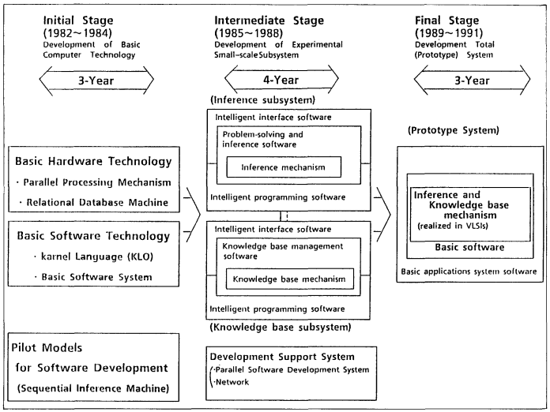
The name “fifth generation” came from the idea of 4 generations of hardware: vacuum tube, transistor, integrated circuits, VLSI. The generation following these would be the fifth, consisting of massively parallel computers natively running logical programs, including logical AI systems. The project had the following parts: parallel logic programming, hardware, and AI.
The project saw the future, and it would be parallel logic programming, for which they decided on a variant of Prolog that uses “flat guarded Horn clauses”. (E. Feigenbaum and Shrobe 1993) But why did they pick an obscure language, not the famed Lisp?
“Prolog can be seen as an extension of Lisp.” He says Prolog provides the extra functionality of “pattern matching and non-determinism,” and is “capable of integrating interesting features of other languages such as Smalltalk, PS, and APL.”
Vague, but that is as good an explanation as I could find.
In terms of hardware, they planned for parallel computers that runs Prolog operations natively, aiming to eventually reach a target of \(10^9 \;\mathrm{LIPS}\) – 1 giga logical inferences per second.26 They also aimed for VLSI chips of \(10^7\) transistors per chip. Since in 1982, a standard computer could perform Prolog operations at \(10^5 \;\mathrm{LIPS}\), this implied they planned for a doubling time of 9 months. (Bramer 1984, 6)
26 A “logical inference” is technically defined as any Prolog procedure call, but can be thought of as any atomic logical operation, such as performing one modus ponens, one variable substitution, etc.
They aimed to develop multiple AI systems, each of which would be an expert system written in their version of Prolog. The inference engine would be a standard logic programming system, similar to the planner used in Shakey. The knowledge base was the key. It would be written in a “knowledge-base management software using relational algebra”, which probably meant a relational database. They planned that, at the end of the project, they would have the software and the hardware to handle expert systems with \(10^4\) rules and \(10^4\) objects, with “semi-automated” knowledge acquisition. (Warren 1982; E. Feigenbaum and Shrobe 1993)
Specific plans they had for AI systems (E. Feigenbaum and Shrobe 1993; Moto-oka 1984; E. A. Feigenbaum and McCorduck 1984, 121–31; Bramer 1984, 6; E. A. Feigenbaum, McCorduck, and Nii 1988, 202–3):
- Computer-readable dictionaries with around 2 million entries in total. These would include a word dictionary with 800K words, a “concept classification dictionary” of 400K concepts, including a general thesaurus, and a “concept description dictionary” of another 400K concepts. These would serve as a general-purpose knowledge base that any expert system could utilize.
- English-Japanese translator with vocabulary size ≥100,000, at ≥90% accuracy (with the last 10% fixed up by humans).
- Continuous ASR with vocabulary size ≥50,000 words and 95% per-word accuracy from at least “a few hundred” speakers, in both English and Japanese, at ≤3× real time.
- A question-answering system built on top of the ASR system. It would converse with the user with synthesized speech in Japanese or English. The first planned system would handle document queries in the computing literature. It would have vocabulary size ≥5,000 and ≥10,000 inference rules. After its success, more systems would be built for other professional fields.
- Natural language processing with vocabulary size ≤100,000, and ≤2000 grammatical rules, achieving ≥99% accuracy in syntactic analysis.
- An image processing system with hardware featurizers, that can store ≥10,000 pieces of graphic and image information in its knowledge base. It would be applied to computer-aided design and manufacture and analysis of aerial and satellite images, medical images, etc.
Autopsy
ICOT set out to build a machine that could provide upwards of a 100 MLIPs of ‘symbol crunching’ power. However, there was no application whose clear need for such horsepower drove the development and whose success (or failure) would serve as the tangible evaluation of the effort. From our current perspective it is clear that there could not have been such an application, since any such application would necessarily have had to contain very large stores of knowledge; but in 1982 when the project began, there were no techniques available for capturing and managing such a large knowledge base. Even today, after more than a decade of research into knowledge representation, we have only a small base of experience and very few tested techniques for this task.
After 10 years and $400M, the FGCS wrapped up in 1992. The MITI announced that it would give away the developed software for free.
The problem for Japan is that the computer industry shifted so rapidly that the technological path the Fifth Generation took – which seemed a wise choice in 1982 – turned out to be at odds with the computer industry’s direction by 1992. In a sense, Japan’s ability to stay the course in pursuit of a long-term payoff – usually considered one of the country’s strongest assets – turned into a liability. A similar challenge for Japan may now be arising in high-definition television. Japan’s HDTV system, which has been in development for two decades, is now coming to market just as some engineers believe that a major shift to digital television technology will make the Japanese analog approach obsolete.
… “If it had really caught on, the Japanese companies would not have let it go,” said Edward Feigenbaum… While the project developed some interesting computer designs and software, he said, even in Japan “no one is using the technology.”
On the research side, it made little progress in AI, NLP, natural interface, knowledge acquisition, construction of large knowledge bases. On the commercial side, its architectures were a commercial failure as they require the user to use an unfamiliar paradigm (parallel logical programming) on hardware that is not better than standard hardware. The promised applied expert systems were not developed because the research did not progress as planned.
(E. Feigenbaum and Shrobe 1993, table 2)
The PIM hardware seems destined for the same fate. The processing elements in the PIMs have cycle times no better than 60 ns; even assuming that the features which provide direct support for XLI offer a speedup factor of 3, this leaves the uniprocessor performance lagging behind the best of today’s conventional microprocessors. Both HP and DEC have announced the imminent introduction of uniprocessors of between 100 and 200 MIPS. The interconnection networks in the PIMs do not seem to constitute an advance over those explored in other parallel systems. Finally, the PIMs are essentially ‘integer machines’; they do not have floating point hardware. While the interconnection networks of the PIMs have reasonable performance, this performance is comparable to that of commercial parallel machines in the US such as the CM-5.
But these days, few people want specialized computers for artificial intelligence, preferring powerful general-purpose machines like those made by Sun Microsystems Inc., a fast-growing Silicon Valley company that did not exist when the Fifth Generation Project was conceived. And a host of scrappy American companies have sprung up to sell massively parallel computers with tens of thousands of processors, far more than the Fifth Generation machines.
THe fastest systems they built were the PIM/p with 512 processors at peak performance 156 MLIPS, and PIM/m with 256 processors at 153 MLIPS. Both had clock frequency 16 MHz. They sticked to the original estimate, made at the start of the project, that their logic-specific chips could run logical inferences at approximately 100 times faster than a general computer. 27
27たとえば、512 台のプロセッサを持つ PIM モデル p ではピーク性能で156 MLIPS (1秒間に1億5600万回の推論処理を行なう速度)、256 台のプロセッサを持 つモデル m では153 MLIPSという、汎用大型機の約100倍に当たる世界最高の 推論処理速度を達成している。実際の応用システムでの利用でも、アルゴリズ ムの工夫とあいまって、512 台にいたるまでほぼプロセッサの台数に比例する並 列処理効果を得ている。
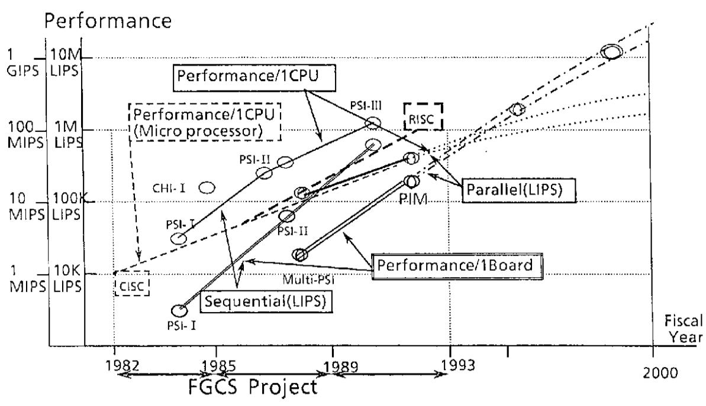
{kind=link}
From the start of the project, they assumed that 1 LIP takes about 100 operations on a conventional computer. They also planned that, at the end of the project, there should be a machine with 1000 processors achieving 1 GLIPS, implying at least 1 MLIPS per processor. (E. Feigenbaum and Shrobe 1993)
According to (Bramer 1984, 6), as of 1984, a conventional computer cound run Prolog at 10–100 KLIPS, and that 1 LIPS = 100–1000 OPS. Now, they did not state what counts as “conventional”, but probably they meant something between Sun-1 (0.5 MIPS) and Cray-1 (150 MIPS). Unfortunately, this gives us a ridiculously wide range of 1 LIPS = 5–1500 OPS.
As far as I see, they probably just got that number by running some Prolog programs on the computers they have available in 1982. Fortunately, someone did exactly this experiment and found that 1 LIPS = 53 OPS as of 1990 (Keller 1990), so the 1 LIPS = 100 OPS rule is good enough.
Now, assuming that 1 LIPS = 100 OPS, then to reach 1 GLIPS on a conventional computer would require 100 GFLOPS. Now, according to TOP500 list of 1993-11, the second-fastest computer in the world was a 1024-core Connection Machine-5 (developed by the Strategic Computing Initiative), which ran at 60 GFLOPS. So just by making a parallel computer with 1000 standard floating-point processors, they made something that reached the Japanese target of 1 GLIP/sec, without ever dealing with specialized hardware! Yet another example of specialized hardware overtaken by general computers, like Rosenblatt’s Tobermory, and the Lisp machines.
Though the FGCS project was a failure, and Japan no longered mattered in AI since its end, it had an indirect effect. Feigenbaum and the long-time AI journalist Pamela McCorduck coauthored a book (E. A. Feigenbaum and McCorduck 1984) that became the hottest book inside the Beltway. Ominously, they warned of imminent Japanese domination:
We calculate that in 1982, the aggregate spent in the United States on artificial intelligence research from all sources – governmental and private – was about 50 million. This is just about equal to the amount the Japanese government expects to spend on an average per year over the next ten years for its Fifth Generation (and does not count Japanese internal industrial AI support that may double or triple the amount). If we continue as we have, we two nations will act as guinea pigs for an interesting experiment in planned, as opposed to unplanned, research… The Japanese have announced that in ten years they will produce knowledge information processors. Several options are open to Americans, but few of them offer truly palatable alternatives to undertaking our own version… The United States should form a national center for knowledge technology… The center we propose would be an expression and institutional embodiment of national will [like NASA].
The hardware developed, but there was no use for it. Parallel logic programming was difficult for the outside programmers, used to serial imperative programming.
And they were not the first to raise the alarm:
In January 1981, Professor Arvind of MIT returned from Tokyo with an early report on the Fifth Generation Project, the same report Feigenbaum had put in his “to read sometime” pile at Stanford a few months earlier. Arvind showed it to Michael Dertouzos, a professor and director of the MIT Laboratory for Computer Science. Dertouzos recollected in notes: “I panic. My colleagues are (way too) relaxed about it and tell me that I am over-reacting.” One of the things that troubled Dertouzos was the similarities between the Japanese plan and long-range plans at MIT.
Partly as a result of this, multiple countries launched their own national AI projects,28 the most notable of which was the Strategic Computing Initiative, funded by the ARPA – I mean, DARPA at this point – which would be much more successful.
28 FGCS (Japan, 1982–1992), Alvey Programme (UK, 1984–1990), ESPRIT programs (Europe, 1983–1998), and the Strategic Computing Initiative (America, 1984–1993).
Intelligence in the age of war machines
Early war machines
The dream of peace produces war machines. Ancient Athenians dreamed of Talos, a bronze giant who defended Crete, while the Jews of Prague dreamed of Golem. The ages has been too kind to Zhuge Liang, and his wheelbarrow, invented for carrying war supplies, became the legend of wooden robot oxen.
The industrial revolution produced early ideas of feedback mechanism, such as the centrifugal governor and the gyro autopilot. It took until WWII for someone to put together high explosives, slow burning fuel, and the feedback mechanism, to create the cruise missile. The first of its kind was the V-1 rocket, which already incorporates the basic features of all cruise missiles.
The V-1 looks like a small unmanned jet airplane. It has the following senses: roll (gyro), pitch (gyro), yaw (magnetic compass), altitude (barometer), distance traveled (vane anemometer). The roll, pitch, yaw, and altitude are maintained by negative feedback. So for example, if the missile is heading east to the set-point of yaw, a valve would open, and compressed gas would force the rudder to turn, which yaws the missile west. As soon as the vane anemometer has turned a designated number, the missile considers itself to have reached the target. It turns off the engine and sharply dives to the ground, and explodes upon impact.
Other than V-1 and V-2, there were no autonomous war machines during WWII, though there were several radio-controlled weapons such as explosive little tanks and little planes for target practice. Skinner, thinking outside (inside?) the box, worked on Project Pigeon. He trained pigeons in skinner boxes to peck at the ship appearing on a screen. If the pigeon is pecking on the top-left, then the missile would turn to the bottom-right. In effect, the pigeon becomes the negative feedback controller. Though it was cancelled, it would have been considerably cheaper than the Japanese version should it have ever reached production.
After WWII, some autonomous defense systems were developed and deployed, such as close-in weapon systems on ships. These detect incoming incoming missiles and enemy aircraft by radar, computes their trajectories, and shoots them down. Since they must operate on the time-scale of seconds, they are fully automatic with no human in the loop. Despite this, these are quite uncontroversial and do not typically earn the title of “killer robots”, presumably because compared to autonomous offense, defense is inherently more controllable and predictable in effect.
Nuclear war machines
Deterrence is the art of producing in the mind of the enemy the fear to attack. And so, because of the automated and irrevocable decision making process which rules out human meddling, the doomsday machine is terrifying. It’s simple to understand. And completely credible, and convincing… When you merely wish to bury bombs, there is no limit to the size. After that they are connected to a gigantic complex of computers. Now then, a specific and clearly defined set of circumstances, under which the bombs are to be exploded, is programmed into a tape memory bank.
— Dr. Strangelove (1964)
During the Cold War, the following technological factors of nuclear weapons determined the grand nuclear strategy.
- First-strike nuclear offense is impossible to defend against. Some bombs will get through all defense.
- Nuclear weapon is so much more powerful than non-nuclear weapons, that the only proportionate deterrence to a nuclear attack is another nuclear attack.
- First-strike capability is indistinguishable from second-strike capability.
Because of (1) and (2), the only way to deter a nuclear first-strike was to threaten a nuclear second-strike. This is the MAD nuclear deterrence doctrine. Because deterrence requires enough bombs to survive a first-strike, both sides would rather build up more second-strike bombs than the other side’s first-strike bombs. Because of (3), there aren’t “second-strike bombs” vs “first-strike bombs”, only bombs. Therefore, we have a positive feedback loop where both sides aim to have more bombs than the other – the nuclear arms race. Because having too many bombs increases the chance of accidents, both sides are motivated to slow down the race. Thus the ABM Treaty, where both sides agree to not build many missile defense systems! This paradoxical treaty was designed to make both sides more vulnerable to second-strike, meaning that less bombs are needed to ensure second-strike capability, thus complementing the SALT treaties that limited the number of bombs.
Both sides’ nuclear technology went through several iterations, with increasing second-strike capability, and ended up with the “nuclear triad” of bombers that stay in the air 24/7, submarines hidden under the sea, and ICBMs hardened inside silos. Each of the three has different tradeoffs, necessitating all three to be maintained.
Of course, even if the triad survives the first-strike, it is no good if they won’t activate. The command center might be destroyed. The communication lines might be cut. The soldiers might refuse to launch based on their own conscience. All these dangers lead to the pressure to automate second-strike. The pinnacle of this logic was the Supersonic Low Altitude Missile (SLAM), a cruise missile powered by a nuclear engine. The nuclear engine is like a fission nuclear reactor in nuclear power plants, except that the fission power does not boil water, but heat up air, which expands and shoots out from the tail of the missile, allowing it to fly at Mach 3.
Despite having no GPS (it was the 1960s!), because the SLAM would fly \(\sim 200 \;\mathrm{m}\) above ground, it could navigate itself by terrain contour matching: It compares a height-scan of the local terrain against a stored copy of the terrain. Even after dropping all its nuclear warheads, it can remain airborne for weeks, destroying the ground with sonic booms as overkill. The project was shelved in 1964, apparently considered too destabilizing, and they settled for just drilling the nuclear launch routines into the missileers until they work like robots that would not hesitate to execute the launch command.
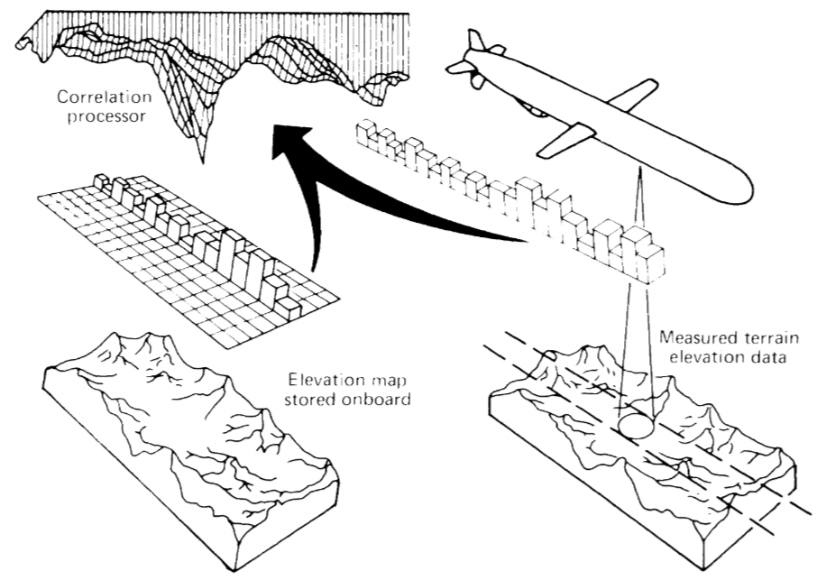
In the movie Dr. Strangelove (1964), nuclear deterrence was taken to its logical end point. In the movie, the Soviet Union built a “doomsday machine”, which is a Cobalt bomb that when exploded, makes enough fallout to render the entire earth uninhabitable for a century. This was then connected to sensors around the Soviet Union, so that any nuclear attack automatically triggers it. Finally, the machine triggers if it detects attempts to un-trigger it, thus closing the logic loop and making it a fully automatic deterrence machine.29
29 I was going to write something about the Dead Hand system, but after a brief search, the available information looks too much like conspiracy theory and rumors, so I will not.
Intelligence
The previous sections has made it clear that ARPA has been inevitable behind every AI development since the 1960s. Indeed, ARPA funded 75–95% of all AI projects during the 1960s (Guice 1998). Though this essay is on logical AI, a brief detour about neural network is in order.
During the Cold War, intelligence, in the sense of intelligence-gathering and reconnaissance was a vital area of artificial intelligence. Some of the early neural networks, such as MINOS II, was explicitly built with an objective of scanning aerial photographs for interesting military targets like tanks. (Nilsson 2009, 98–109) The CIA even experimented with Rosenblatt’s Mark I Perceptron machine for the same purpose (Irwin 2024). As an example, (Kanal and Randall 1964) describes a two-layered perceptron network, of type \(\mathbb{R}^{N \times N} \to \{0, 1\}^{32\times 32} \to \{0, 1\}^{24} \to \{0, 1\}\). It works as follows:
- The grayscale photo is down-scaled and binarized by convolution with a discrete Laplace filter: \(\mathbb{R}^{N \times N} \to \{0, 1\}^{32\times 32}\).
- The weights for the 24 hidden perceptrons are constructed by linear discriminant analysis: \(\{0, 1\}^{32\times 32} \to \{0, 1\}^{24}\)
- The output perceptron is learned by the perceptron learning rule: \(\{0, 1\}^{24} \to \{0, 1\}\).
Neural networks (such as Minsky’s SNARC and Rosenblatt’s perceptrons) were funded by the Office of Naval Research (ONR) on the order of $50K, while logical AI was funded by ARPA, whose contracts were on the order of $500K. This made a real difference in the days of mainframes. (Guice 1998) See my essay on the Perceptron Controversy for details.
Strategic Computing Project
The Strategic Defense Initiative (SDI), better known as “Star Wars”, was announced by President Reagan in 1983. It aimed to shoot down Soviet ICBMs during their spaceflight with tools including lasers, particle-beam weapons, and ground and space-based missile systems. If this was successful, it would cripple Soviet second-strike capability. Although President Reagan claimed the project aimed to make nuclear weapons “impotent and obsolete”, it would be incredible, even idealists, to suppose that other countries would believe it. Indeed, the Soviet Premier Andropov immediately condemned this, suspecting it was in fact a plan to make America the only nuclear power immune to a second-strike and become the global hegemon.
Though the SDI did not bring the Star Wars, or make plans for AI, it had an indirect effect on intelligence in the age of war machines. In the same year, the Strategic Computing Project (SCI) began, and its funding was facilitated by the SDI, as well as the Japan scare from the Fifth Generation, which was the hottest topic in the Beltway.
It is tempting to regard all this as just another skirmish in the trade wars, where engagements have already taken place in steel, automobiles, and consumer electronics… our national self-interest, not to mention our economic security, does not allow us this luxury. Information processing is an $88-billion-per-year industry in the United States, and its loss would be disastrous. The default of this American industry, which has led the world for decades, would be a mortal economic wound… The superior technology usually wins the war – whether that war is martial, entrepreneurial, or cultural.
It’s war. America could not lose the AI race. The congress approved the SCI, a 10-year project that would end up costing $1 billion funded by DARPA. The final plan was published in 1983-10 as (DARPA 1983).
The project has 3 application areas: the “Battlem Management System” for the Navy, “Pilot’s Associate” for the Air Force, and “Autonomous Land Vehicle” (ALV) for the Army. To develop these areas, it would develop 4 technologies: speech (for Pilot’s Associate and Battle Management), language (for Battle Management), vision (for ALV), and general expert systems (for all). It would also develop massively parallel (≥1000 processors) teraFLOPS computers as its own bet on the fifth generation of computing.
How did it go? Spoiler: massively parallel computers at the teraOPS level succeeded, language abandoned, vision failed, self-driving cars improved but failed to reach the promise, generic expert systems failed, a few specific expert systems worked.
Computing
Many veterans and supporters of the program believe that it was created in response to a compelling technological opportunity. In the early 1980s, advances in microelectronics design and manufacturing held out the promise of greatly improved computer chips. New concepts of computer architecture could conceivably exploit these chips in machines of unprecedented speed and power. Such computers might finally have the muscle necessary to achieve artificial intelligence – machine capabilities comparable to those of human thought.
Near the end of SCI, computers were within 10x of the teraFLOPS goal. Congress approved the High Performance Computing Act of 1991 to fund the development of Internet infrastructure and more massively parallel computers – rebranded as “high performance computing”.
By mid-1992 a completely new generation of computers have been introduced. Understanding this generation should make it possible to build the next-generation supercomputer class machine, that would reach a teraflop of peak power for a few, large-scale applications by the end of 1995.
The desired “1000 core computer” did come in 1991 as CM-5 at about 60 GFLOP/sec, 4300 FLOPS/$ (Bell 1992), and a little late on schedule. The first teraFLOPS computer, ASCI Red, arrived in 1996, with 9298 CPUs.30 It was designed for simulating nuclear bomb tests.
30 I couldn’t find its price, but its successor ASCI White cost $110 million, so if we assume ASCI Red cost $100 million, then Gordon Bell’s prediction that a teraFLOPS computer would sell for about $40 million at 25 KFLOPS/$, in 1995 was nearly right. (Bell 1992)
The previous paradigm of supercomputers were hitting the limits of what you can do with just ~10 cores and shared memory architectures. For example, the Cray-2, an exemplar of 1980s supercomputers, had only 8 processors. Experts saw that future supercomputers needed to be “massively parallel”, i.e. over 1000 cores. Indeed, the Japanese FGCS project produced parallel computers of up to 512 cores for the same rationale.
During the 1980s, as the demand for computing power increased, the trend to a much larger number of processors began, ushering in the age of massively parallel systems, with distributed memory and distributed file systems, given that shared memory architectures could not scale to a large number of processors.
Greg Astfalk (1996). Applications on Advanced Architecture Computers. SIAM. pp. 62.
Compared to existing expert systems running 2,000 rules at 50–100 rules per second, SCI promised” multiple cooperating expert systems with planning capability” running 30,000 rules firing at 12,000 rules per second and six times real time.
Other than massively parallel computers, there were also a few odds and ends. At the start of the program, there were brief efforts to get gallium arsenide (GaAs) chips working. Compared to silicon, GaAs has a wider bandgap, thus it tolarates higher temperatures and generally more extreme conditions. It started a running joke that GaAs would be the big silicon-chip killer in the next 10 years. 40 years later, it has yet to happen.
More relevant was MOSIS, an on-demand chip fabrication service that was affordable enough even for university projects, especially university courses that taught the new VLSI method – just send in the design and get your final project back! Indeed, Feng-hsiung Hsu fabbed earlier iterations of chess chips by MOSIS.
Pilot’s associate
There is little known about the Pilot’s Associate project. The original plan called for 10,000-rule, real-time expert systems, animated displays with \(10^8\) polygons per second, 200-word speaker-independent speech input system that works in high-noise environments, and a 1,000-word speech output system. Though the systems were demonstrated three times, there was no applications or follow-up. (Nilsson 2009, 362–63)
Battle management
In the long-gone past, an army was like a clockwork toy. It can march, hold ground, or turn slowly. Frontlines were on the order of 1 km, since it would be hard to see the commander from farther away. The progress of warfare made the battlespace more complex.
Unsurprisingly, it was a secret thing. It was not described in detail anywhere. An expert system pioneer recalls:
McCune: I built a system that I can’t say very much about. It was a signal analysis system. I built it for $1 million. Five years later the boss of the boss of the boss of my client said, “Thank you, Brian. You saved me $500 million.” That’s what I’m talking about ROI. He said, “What other systems can you build for me?” I built him two more systems. So, it did pay off for the military.
(Expert Systems Pioneer Meeting, Day 2 Session 7: Why Did the Expert Systems Industry Decline? 2018)
However, we know that the Navy did get what they wanted, and they did work.
“Battle Management Ashore” was officially the Fleet Command Center Battle Management Program (FCCBMP). Like PA, FCCBMP was to consist of five expert systems. Each would perform a particular task for the headquarters of the Pacific Fleet at Pearl Harbor (Commander-In-Chief, Pacific Fleet, or CINCPACFLT ). First, the Force Requirements Expert System (FRESH) would monitor the readiness of the fleet and assist in allocating its forces according to the capabilities and status of the individual ships. The Capabilities Assessment Expert System (CASES), would compare the relative strength of United States and hostile forces. The Campaign Simulation Expert System (CAMPSIM) would simulate the outcome of different courses of action. The Operations Plan Generation Expert System (OPGEN) would develop operational plans according to specified strategies. Finally, the Strategy Generation and Evaluation Expert System (STRATUS) would assist in developing plans for theater-level strategy.
In June 1986, FRESH Prototype One was installed in the test bed, and two months later it was demonstrated successfully to DARPA and the navy using the IRUS natural language generator developed by BBN, SAIC, and the Naval Ocean Systems Center (NOSC). At that time the IRUS vocabulary recognized 5,000 words, including proper names and naval terms; it successfully comprehended and responded to queries in terms usually used by the operations staff. By 1987 the enhanced system was performing in ninety minutes tasks that would usually take the CINCPACFLT staff fifteen hours. By then the navy employed the system routinely to monitor the readiness of its ships in the Pacific.
Lest some, out of moral integrity, claim that mixing military and AI only hurts everyone, there was one definite success story in practice: DART.
Desert Shield/Storm in 1990–91 [… had] no prior buildup of troops or supplies. The US Department of Defense sealifted 2.4 million tons of cargo during the first six months of Desert Shield – more than four times the cargo carried across the English Channel to Normandy during the D-Day invasion… About halfway through the six months of Desert Shield, Kral installed the system at the USTRANSCOM transportation command and the US European command, where it was used for the duration.
We don’t have any pictures of this, or even source code, as it is probably a state secret. Still, it is described as
a GUI-based scheduler that took a mainframe flat file of the details of all items to be moved–dates to move, places to move to and from, and so forth–and loaded the data into an Oracle database. The scheduling was done on a front-end Sun-4 workstation.
And did it work?
It enabled users to examine schedules at a higher level of abstraction, because it could readily aggregate modules. Planners could run strategic transportation models using DART in a matter of minutes rather than in hours or days. This enabled them to consider more alternatives and develop a more realistic action plan in far less time… The DART scheduling application paid back all of DARPA’s 30 years of investment in AI in a matter of a few months, according to Victor Reis, Director of DARPA at the time.
I guess one can interpret it as either “wars are really expensive” or “DARPA had invested too little in AI”.
Autonomous Land Vehicle
If the other parts of SCI was shrouded in mystery, the Autonomous Land Vehicle (ALV) part made up for this. The ALV project was designed for the army, with a budget of $10 million contracted to multiple organizations, each taking care of part of the system. The project had yearly goals, starting with 10 km/h in 1985 and ending with 50 km/h in 1990.
- 1985 - Road Following Demonstration: Vehicle traverses a 2 km preset route on a paved road at speeds up to 10 km/h. Forward motion only and no obstacle avoidance required.
- 1986 - Obstacle Avoidance Demonstration: Vehicle traverses 5 km road course at speeds up to 20 km/h; must recognize and maneuver to avoid fixed objects that are small with respect to road width.
- 1987 - Cross-country Route Planning Demonstration: Vehicle plans and executes a 5 km traverse of open desert terrain at speeds up to 5 km/h. Demonstrates soil and ground cover typing.
- 1988 - Road Network Route Planning and Obstacle Avoidance Demonstration: Vehicle plans and executes a 20 km point-to-point traverse through a road network at speeds up to 20 km/h using landmarks as navigation aids. Demonstration includes map updating and off-road maneuvering to avoid obstacles.
- 1989 - Cross-country Traverse with Landmark Recognition Demonstration: Vehicle plans and executes a 20 km traverse through desert terraín with obstacles at speeds up to 10 km/h. Demonstration includes replanning when confronted with impassable obstacles.
- 1990 - Mixed road and Open Terrain Demonstration: Vehicle plans and executes a 20 km traverse in wooded terrain with isolated obstacles and a 50 km traverse on paved and unpaved roads at speeds up to 50 km/h. Route planning includes multiple goals.
What did the army expect to gain from this? Reconnaissance, “offensive and defensive missions” with a platoon of vehicles, and robotic variants of the Armored Family of Vehicles that could execute missions “singularly, in packs, or in concert with manned vehicles”, sometime after 1991. (Leighty and Lane 1986)
Out of these, we focus on the Navigation Lab (Navlab) at Carnegie Mellon University, since that one had the greatest impact.
Navlab started work on ALV in 1984. The first vehicle they produced was Navlab 1 (1986). Its sensors included cameras, a sonar, a lidar, and an inertial guidance system (this was before GPS). Its only actuator was a stepped motor for steering. In the middle was a Sun 3, a standard workstation of the time, and optionally a Warp computer, a systolic array developed as part of SCI.
A Warp computer is made of a chain of processors. Each processor is programmable, and data “pulses through” the processors like blood flowing through vessels. This allowed it to perform data parallel computations, like 2D convolutions and other computer vision tasks. You can think of it as a GPU for the 1980s. In a 10-core Warp computer, each core ran at 10 MIPS, and the whole thing could run a neural network at 17 million “connections per second”, meaning that it takes about \(\frac{1.7 \times 10^7}{N}\) seconds to run one forward and backward pass over a neural network with \(N\) weights. Impressively, this was 30% faster than even the 65K-core Connection Machine-1. (Blelloch and Rosenberg 1987; Pomerleau et al. 1988)
FIDO (Find Instead of Destroy Objects) was a stereovision algorithm. It takes as input two cameras’ images, and for each, uses a hand-designed “interest operator” to find landmark points, then use that to compute the 3D locations of the landmarks. These are sent to a path-planner. It ran at 4.8 sec/pass. No wonder the car could only drive 0.5 m/s. Work on FIDO stopped in 1987, since it was outclassed by the lidar. (Thorpe 1990, vol. 93, chap. 14)
SCARF (Supervised Classification Applied to Road-Following) was developed since 1986. Schematically, the first version runs as follows. At each step, it compares each image pixel against a road color and an off-road color. It partitions an image’s pixels into connected blobs of “probably road” and “probably off-road” by a simple Bayes classifier. It then converts the blobs into polygons, and compare each polygonal edge with an idealized road model (a projective transform of a circular arc), minimizing change compared to the previous frame’s road model. It uses the best-fit road model to compute the new average on- and off-road pixel colors. It returns the fitted ideal road model, which is used to decide the turning angle.
In pseudocode:
class SCARF:
def __init__(self, ...):
self.road_dist = (road_color_mean, road_color_variance)
self.off_road_dist = (off_road_color_mean, off_road_color_variance)
self.road_model = initial_road_model
self.road_location = None
def process_image(self, image):
pixels = label_pixels(image, self.road_color, self.off_road_color)
blobs = connected_components(pixels)
polygons = fit_polygons(blobs)
candidate_edges = select_road_edges(polygons)
# update states
self.road_model, self.road_location = fit_road_model(candidate_edges, self.road_model)
road_pixels, off_road_pixels = divide_image(image, self.road_location)
self.road_dist = (mean(road_pixels), variance(road_pixels))
self.off_road_dist = (mean(off_road_pixels), variance(off_road_pixels))
return self.road_model, self.road_locationSCARF ran at about 3 sec/pass. Later versions allowed multiple on- and off-road colors, and used Hough transform to directly fit the edges of the idealized road model to image.
ALVINN, the first neural network driver, began in February 1989. It was trained off-line on a Warp, using purely generated images and driving instructions, presumably because they could not afford to store real images on disk. A training run took 8 hours on the Warp, but inference just took 0.75 s/image on a Sun 3, so they would train it on a Warp in the lab, and run it on a Sun 3 in the car. Soon, it set the Navlab speed record \(1.3 \;\mathrm{m/s}\) on 1989-03-16.
In 1989-06, they were greatly surprised to find that ALVINN could be trained rapidly online, so they started doing runs where for the first 10 minutes a human would drive while the ALVINN is trained online in the Warp computer in the back of the car (often carrying around a graduate student watching it train), then ALVINN would take over control. This was possibly the first successful imitation learning application. They also found that, because a human driver would never go off the lanes, ALVINN would not know what to do if it starts going off the lane, so they programmed a data augmentation method by shearing the image left and right by 5 angles each, and the real human steering angle is shifted accordingly. In this way, each example is augmented to 11 examples.
In 1989, Navlab 1 burned when conditioning system leaked liquid onto the computers. Navlab 2 was built in 1990 based on a Humvee, which could drive both on-road (110 km/h) and off-road (10 km/h). Information about the subsequent Navlab cars is scarce, but from what I gathered, they were generally statistical methods on handcrafted features, without neural networks, learned features, and with only a minimum amount of online learning.
In 1995, Navlab 5 drove across continental America “No Hands Across America” autonomously for 98% of the time at average speed 100 km/h. However, little happened subsequent this – until 2004, when DARPA issued a Grand Challenge for self-driving again. The Stanford Team that won in 2005 later became Google Waymo.
Demo or die
Well, remember that the planners wanted a demo of ALV every year. So how did the demos go?
A team at Martin Marietta Denver Aerospace was responsible for putting together the demos, and they called their vehicle “Alvin” (no relation to ALVINN). Like Navlab 1, the system essentially has two parts: the vision part, which extracts the shape of the road from the camera video, and the planner. Unlike Navlab 1, the planner was a sophisticated expert system that uses the road model output by the vision and its knowledge base (location, map, known objects, goal location, etc) to compute a driving plan.
The knowledge base consists of a priori map data, and a set of routines for accessing the data. Currently, the map data contains information describing the road network being used as the ALV test track. The map data contains coordinates which specify the location of the roadway, as well as various significant features along the road, such as intersections, sharp curves, and several local road features.
Alvin’s vision system was plagued by the same problem of logical AI: fragility. Every time a part upgrades, something breaks. Much of the high-level planning was written to deal with the fragility of the vision system. If the high-level planner detects that the scene model output by the vision system is probably nonsense, it simply discard it. The endless trouble encountered by Alvin deserves quotation in full:
The vision system proved highly sensitive to environmental conditions–the quality of light, the location of the sun, shadows, and so on. The system worked differently from month to month, day to day, and even test to test. Sometimes it could accurately locate the edge of the road, sometimes not. The system reliably distinguished the pavement of the road from the dirt on the shoulders, but it was fooled by dirt that was tracked onto the roadway by heavy vehicles maneuvering around the ALV. In the fall, the sun, now lower in the sky, reflected brilliantly off the myriads of polished pebbles in the tarmac itself, producing glittering reflections that confused the vehicle. Shadows from trees presented problems, as did asphalt patches from the frequent road repairs made necessary by the harsh Colorado weather and the constant pounding of the eight-ton vehicle.
Perhaps more alarming to the Martin engineers was the early realization that there would not be one all-purpose, road-following algorithm. Different situations required different programs. The first road-following algorithm that Maryland installed on the vehicle, the “vanishing point” algorithm, had functioned satisfactorily in the lab but not on the road. Under certain conditions the vehicle thought the road had folded back under itself. This algorithm had to be replaced by the “flat-earth” algorithm, so-called because it worked by using a two-dimensional representation of the road and assuming that the road was perfectly flat. The algorithm was quick to run, but it was relatively inaccurate, and, not surprisingly, it worked only on flat ground. The third program, the “hill-and-dale” algorithm, used a three-dimensional representation of the road. It functioned better on uneven ground, but it did not work on curves. Maryland came up with a fourth algorithm, the “zero-bank” algorithm, which solved this problem; but it ran too slowly on the vehicle’s computers and had to be put off until phase II of the program…
Other problems were caused just by the sheer complexity of the system. By the November 1985 demonstration, 25,000–30,000 lines of code were running in real time on ten different processors… Each new feature and capability brought with it a host of unanticipated problems. A new panning system, installed in early 1986 to permit the camera to turn as the road curved, unexpectedly caused the vehicle to veer back and forth until it ran off the road altogether. The software glitch was soon fixed, but the panning system had to be scrapped anyway; the heavy, 40-pound camera stripped the device’s gears whenever the vehicle made a sudden stop.
Given such serious problem, the team opted to just “study for the test”. Like the many demos before and since then, it promises to do much more than it could, using techniques much less general than it should.
Given such unanticipated difficulties and delays, Martin increasingly directed its efforts toward achieving just the specific capabilities required by the milestones, at the expense of developing more general capabilities… Martin’s selection of technology was conservative. It had to be, as the ALV program could afford neither the lost time nor the bad publicity that a major failure would bring… ADS’s obstacle-avoidance algorithm was so narrowly focused that the company was unable to test it in a parking lot; it worked only on roads.
Though Alvin passed one demo after another, the “demo or die” approach resulted in a series of demos made by “ad-hoc, off-the-shelf solutions” that did not generalize, or integrate the other technologies developed in the SCI.
The experience with ALV mirrored what was going on elsewhere in the SC program. The applications failed to connect with the technology base. Instead, applications extemporized ad-hoc, off-the-shelf solutions to meet demonstration deadlines. Meanwhile, the many research projects in the technology base rose and fell on their own merits. Mutually incompatible, they seldom achieved integration, let alone transition… Takeo Kanade… criticized the program as “too much demo-driven… Instead of integrating the technologies developed in the SC tech base… effort is spent ‘shopping’ for existing techniques which can be put together just for the sake of a demonstration.” Based on the recommendations of the panel, DARPA quietly abandoned the milestones and ended the ALV’s development program.
General AI technologies
SCI called for three fields of basic AI in support of the above applications: speech recognition, computer vision, and general integration of logical AI techniques. Only speech recognition was a success.
The aspiration of the speech recognition task was to allow pilots to speak to the computer, so it eventually had to recognize continuous speech with noise. DARPA released a benchmark of 21000 sentences from 160 speakers reading out sentences “appropriate to a naval resource management task built around existing interactive database and graphics programs” (Price et al. 1988). This was one of the first public benchmarks, instilling a benchmark-centric culture around ASR early on. The HMM-based models, similar to those developed by Jelinek et al at IBM, reached the goal.
Throughout the program, speech recognition held to its original goal of 10,000-word continuous speech recognition, using speaker-independent natural grammar, moderate noise, and low stress… Such systems were up and running by the end of SC, being integrated into military applications and undergoing development for commercial applications.
In January 1986 Carnegie Mellon had demonstrated a speech system that could recognize 250 words spoken continuously regardless of the speaker. By 1987 this system could cope with a 1,000-word vocabulary with 95 percent accuracy, operating at 10 times real time on a parallel system. Texas Instruments produced a robust 200-word connected-speech-recognition system that was installed on F-16 fighters for operational testing by pilots.
The aspiration of the vision task was to allow armored vehicles to drive through hostile environments autonomously. Among
TODO David Marr’s theory
Developments in vision were far more disappointing. Part of the reason is that expectations at the beginning of SC were so high. Prior research on computer vision may be grouped in three eras. In the 1950s and 1960s techniques from signal processing and statistical decision theory produced important developments in areas such as Synthetic Aperture Radar, image-enhancement, and terrain-matching, cruise-missile guidance. These were essentially ad hoc inventions, innocent of a conceptual paradigm.
In the late 1970s, when DARPA was funding an image-understanding program aimed at photo interpretation, a “signals-to-symbols” paradigm gained currency. It was, however, a theory of low-level, general-purpose vision, limited essentially to two-dimensional analysis. Optimism that this limitation might be breached grew in the late 1970s, culminating in the 1982 publication of David Marr’s pathbreaking study, Vision, just as the SC plan was taking shape.
As Noam Chomsky had done for speech in the 1950s, Marr refined a new paradigm based on modeling visual cues such as shading, stereopsis, texture, edges, and color to arrive at what he called a “2-D sketch.” His theoretical models, combined with the magnified computing power of SC’s new architectures, suggested to many researchers that high-level vision was within reach, that a computer would soon employ standard algorithms to distill visual and other signals into machine understanding of what it was “seeing.”
As for the general AI integration, the idea was similar to Shakey. Just like Shakey integrated the main logical AI techniques up to 1970, SCI called for integrating the main logical AI techniques up to 1980s. The SCI planners thought that the success of expert systems had shown that the time was ripe for a concerted push for a general expert system that combines the best ideas so far: blackboards (developed during the ARPA-funded speech understanding project), forward and reverse chaining, default reasoning, etc. This integration proved a failure, like the dream of a generally intelligent expert system. (Roland and Shiman 2002, 243)
In 1990, funding for AI was killed, because the new director of SCI believed there is no unified AI principle, only particular AI systems demonstrating particular intelligences.
In a cold and devastating review of “The Limits of Artificial Intelligence” prepared for the 1987 edition of The Encyclopedia of Artificial Intelligence, [Jacob] Schwartz had argued that AI had yet to demonstrate “any unifying principles of self organization,” meaning that its “applications must still be seen as adaptations of diverse ideas rather than as systematic accomplishments of a still mythical AI technology.” … he believed that expert systems were achieving what success they had by clever programming, not by the application of any general principles. His analysis bode ill for the prospects of achieving a generic expert system of the kind envisioned by the SC program and the contracts with Teknowledge and IntelliCorp. Indeed, Schwartz believed that the same critique applied to AI in general; he concluded that “it may be necessary to develop a relatively large number of artificial systems that mimic particular types of reasoning and mental functions in cases specialized enough to have particularly efficient treatment.”
Philosophy
Astrophysicists, measuring the motion of galaxies, notice that the stars are rotating too fast. There is not enough matter to tether them, and they ought to fly out into the intergalactic emptiness. To solve this problem, they proposed “dark matter”, unknown matter that provides the missing gravitational force, and physicists ever since had been searching them.
Similarly, sometimes when you read through a field of study, you notice that the arguments seem to rotate around some kind of unspoken assumption that you might see if you just take all the books and throw them to the ground, so that they are all opened at random places. Then you turn your head and squint at the words refracted through the eyelids, the pupils, and the cornea, which you have repurposed as a primitive kind of optical computer. And you see the dark matter, the intellectual centers of gravity.
Under an invisible spell, they will each start out anew, only to end up revolving in the same orbit once again… their thinking is not nearly as much a discovery as it is a recognition, remembrance, a returning and homecoming into a distant, primordial, total economy of the soul, from which each concept once grew: – to this extent, philosophizing is a type of atavism of the highest order.
The Symbolic Hypothesis
In their Turing award lecture of 1975, Allen Newell and Herbert Simon gave a definitive statement of the Physical Symbol System Hypothesis for AI, which they had labored under, first unconsciously but then consciously, since the early 1950s.
They began by some examples of “qualitative structure” in science, which do not deal with numbers, but with symbols. For example, a basic statement of cell theory – “organisms are made of little cells that are mostly alike” – doesn’t contain a single number, yet it has great significance. Such non-numerical discrete statements are made of “symbols”, and they stated their Physical Symbol System Hypothesis (PSSH):
A physical symbol system has the necessary and sufficient means for general intelligent action.
where a physical symbol system is essentially a machine that can be built in our physical world, and that manipulates with symbols. As an example, a digital computer running a LISP interpreter is a physical symbol system. We can attach cameras and wheels to the computer, so that the camera sends into the interpreter a symbolic representation of what it sees, and the wheels receives symbolic commands for motion. This is basically a robot according to the PSSH.
They also gave a Heuristic Search Hypothesis:
A physical symbol system exercises its intelligence in problem solving by search-that is, by generating and progressively modifying symbol structures until it produces a solution structure.
What is not said is equally revealing. In the lecture, there were over 100 mentions of the word “search”, but the only statement about learning is… a mention of Plato’s theory of anamnesis! For them, a symbolic system starts out already with a solution generator and a solution tester, and problem-solving is nothing but heuristically searching over the generated solutions until one passes the tester. Indeed, in their telling, AI research is just search, not learning.
… During the first decade or so of artificial intelligence research, the study of problem solving was almost synonymous with the study of search processes. From our characterization of problems and problem solving, it is easy to see why this was so. In fact, it might be asked whether it could be otherwise. … There is no mystery where the information that guided the search came from. We need not follow Plato in endowing the symbol system with a previous existence in which it already knew the solution. A moderately sophisticated generator-test system did the trick without invoking reincarnation.
Cognitivism
There was a persistent legend about a certain psychologist, that he educated his own children with skinner boxes. While just a legend, the real B. F. Skinner did have a philosophy as radical as the legend suggests.
In the 1950s, Skinner dominated behaviorism, which dominated American psychology. In short, behaviorism models animal behavior as stimulus-response reflexes, which can be understood as parameterized functions \(a_\theta(o)\), where \(o\) stands for the observational stimulus, \(\theta\) the internal parameters of the animal, and \(a_\theta(o)\) the response action. The parameters \(\theta\) is a function of the previous history of stimuli and reward/punishments: \((o_0, a_0, r_0, o_1, a_1, r_1, \dots)\). The set up is the same as modern reinforcement learning (RL).
The great thing about skinner boxes is that they are standardized to be lightproof, soundproof, and whatever-proof, thus controlling for all confounding variables. Before skinner boxes, mouse experiments were full of confounding variables, and had a kind of replication crisis in the 1930s. With the skinner box, the degrees of rat freedom are minimized, turning rats into standardized systems. This finally allowed measurable progress, allowing the breakout success of behaviorism in the 1950s.31
31 Feynman told of the following maze-running rat legend:
He had a long corridor with doors all along one side where the rats came in, and doors along the other side where the food was. He wanted to see if he could train the rats to go in at the third door down from wherever he started them off. No. The rats went immediately to the door where the food had been the time before. The question was, how did the rats know, because the corridor was so beautifully built and so uniform, that this was the same door as before? Obviously there was something about the door that was different from the other doors. So he painted the doors very carefully, arranging the textures on the faces of the doors exactly the same. Still the rats could tell. Then he thought maybe the rats were smelling the food, so he used chemicals to change the smell after each run. Still the rats could tell. Then he realized the rats might be able to tell by seeing the lights and the arrangement in the laboratory like any commonsense person. So he covered the corridor, and, still the rats could tell. He finally found that they could tell by the way the floor sounded when they ran over it. And he could only fix that by putting his corridor in sand. So he covered one after another of all possible clues and finally was able to fool the rats so that they had to learn to go in the third door. If he relaxed any of his conditions, the rats could tell.
Skinner’s ambitions went far beyond rats. In 1957, he published Verbal Behavior, in which he explained human language as stimulus-response networks, built up piece by piece during child development. To give an example, when one searches for a book with a title “Verbal Behavior”, one would say “Verbal Behavior, Verbal Behavior, Verbal Behavior…” (a “self-echoic”) while the eye scans the shelf. When the visual stimulus matches the verbal stimulus, the “grab book” action is triggered (a “tact”). The touch of the hand with the book then stops self-echoic behavior. In Skinner’s terms, this verbal behavior is a “descriptive autoclitic”.
He was at his most radical in Beyond Freedom and Dignity (1971), which essentially argued that human society will be reorganized according to behaviorist principles. Instead of the indirect and unreliable behavior control using verbal moral judgment, a society would use more direct operant conditioning methods that are experimentally proven by behaviorist psychologists.
Though behaviorism has remained alive and well to this day, linguistics took a sudden turn around 1960 thanks to Noam Chomsky. According to legend, Chomsky wrote a review of Verbal Behavior in 1959, in which he soundly routed behaviorist linguistics (Chomsky 1959). The truth is more complicated, since Chomsky also wrote several other famous works like Syntactic Structures (1957), Aspects of the Theory of Syntax (1967), and the foundational papers on formal grammar like the Chomsky hierarchy.
Chomsky argued that there are two ways of doing research in psychology and linguistics: “empiricism” and “rationalism”. Skinner’s book was the best example of empiricism, and since Skinner’s book is wrong, the book becomes a reductio ad absurdum of empiricism. Instead, one must turn back to rationalist psychology and linguistics.
I had intended this review not specifically as a criticism of Skinner’s speculations regarding language, but rather as a more general critique of behaviorist (I would now prefer to say “empiricist”) speculation as to the nature of higher mental processes… I do not, in other words, see any way in which his proposals can be substantially improved within the general framework of behaviorist or neobehaviorist, or, more generally, empiricist ideas that has dominated much of modern linguistics, psychology, and philosophy. The conclusion that I hoped to establish in the review, by discussing these speculations in their most explicit and detailed form, was that the general point of view was largely mythology, and that its widespread acceptance is not the result of empirical support, persuasive reasoning, or the absence of a plausible alternative.
– Preface to the 1967 reprint. (Chomsky 1967)
What is wrong with empiricism? Fundamentally, Chomsky’s argument is based on two properties that every human language has:
- Infinity: There exists infinitely many grammatical sentences, and infinitely many ungrammatical sentences.
- Generativity: Humans can agree with each other whether a never-before-seen sentence is grammatical or ungrammatical.
Plato observed that, though we have only seen imperfect geometric shapes, we have a concept of perfect circles, triangles and so on. He inferred from this that we are born with the ideal concepts within us, to be matched against imperfect shapes out there. Similarly, Chomsky argued that we are born with the ideal Universal Grammar within us, to be matched against the language observations in the world.
For example, in the Universal Grammar, there is a setting called “subject-verb-object order”, with 6 possible values: SVO, SOV, …, OVS. An infant need only observe a few dozen sentences to fix this setting. Chomsky extended this project to all of natural language grammar.
Chomsky made a multi-pronged rejection of empiricism:
- Poverty of stimulus: Humans learn language with just a few years of language instruction. This is impossible if they “start from scratch”. Thus, they have a lot of inborn grammar.
- Colorless green ideas sleep furiously: Because there are many meaningless but grammatical sentences, grammar is independent of meaning. Thus, grammar, unlike meaning, can be a small closed system that fits inside a brain at birth.
- Probability is meaningless: A sentence is either grammatical or not. THere is no in-between. Therefore it is meaningless to talk about the “probability of a sentence” like the empiricists.
- Impersonal abstraction: Real humans can make mistakes, but language itself makes no mistake. A tired human might say “Ideas sleep furiously.” is ungrammatical 10% of the times, but the English language itself would always say it is grammatical. Thus, the probabilities measured from real human behavior is meaningless for theoretical linguistics.
- Competence, not performance: Even if an empirical model of language, like the HMM, works 99% of the times, a single counterexample disproves it. To work “most of the times” is performance. To work all the time is competence. Linguistic science is about competence, and performance is sufficient only for engineering. Competence either/or, while performance is usually/rarely. Linguistics is about competence, and performance is left for the psychologists and engineers.
The 60 years afterwards have been one long struggle against empiricism along these lines. For example, he had repeatedly simplified the Universal Grammar down to the minimalist core, so that it could possibly fit inside a single gene that appeared once in the evolution of humans, “switching on” language for humans and no other species. And by “60 years”, I meant it. He was nothing if not consistent:
Evidently, one’s ability to produce and recognize grammatical utterances is not based on notions of statistical approximation and the like… a structural analysis cannot be understood as a schematic summary developed by sharpening the blurred edges in the full statistical picture… that grammar is autonomous and independent of meaning, and that probabilistic models give no particular insight into some of the basic problems of syntactic structure.
But it must be recognized that the notion of “probability of a sentence” is an entirely useless one, under any known interpretation of this term.
It’s true there’s been a lot of work on trying to apply statistical models to various linguistic problems. I think there have been some successes, but a lot of failures. There is a notion of success … which I think is novel in the history of science. It interprets success as approximating unanalyzed data.
Chomsky at the MIT150: Brains, Minds and Machines Symposium (2011), quoted in (Norvig 2017)
Well, first we should ask the question whether large language models have achieved anything, anything, in this domain? Answer: No! They’ve achieved zero… GPT-4 is coming along, which is supposed to going to have a trillion parameters. It will be exactly the same. It’ll use even more energy and achieve exactly nothing, for the same reasons. So there’s nothing to discuss.
Machine Learning Street Talk: The Ghost in the Machine and the Limits of Human Understanding (2022)
Knowing his framework, we understand why he rejected both statistical models like n-grams or neural models like GPT-3 as “zero” in terms of advancing theoretical linguistics. They are empirically constructed: thousands of researchers were just trying things out, and eventually they started to work. Worse, both kinds of models assign nothing but probabilities to sentences!
When engaging with the modern Chomskyans (they still exist!), one notices a strategic ambiguity on the edge of competence vs performance. On one hand, Chomsky has simply defined scientific linguistics to be the study of language and competence. That is, he made the following kind of definition:
- Language is a kind of mathematical object with associated transformations of it (such as the transformation that converts a verb to a past tense).
- A person or a computer, has competence for a language iff it can perform the correct transformations on a language object.
- Scientific linguistics is the study of languages, and how competence is implemented in various algorithms.
Chomsky’s definition deliberately draws a line between competence and performance. However, this line immediately gets crossed, because even immortals cannot subsist on only aether. Chomskyan scientific linguistics, to be scientific, still needs to gather empirical data and predict outcomes of empirical experiments, and thus was Chomsky able to influence AI developments, by an implicit empirical claim: “Building an AI like a generative grammar is how you get good empirical performance.”
Chomskyans have long engaged with AI. There have been Chomskyan language models, but the idea is very different. When Chomskyans do a language model, it is a scientific experiment to test a linguistic theory. If a program written according to a merge-grammar of verbs can convert verbs to the past tense correctly (on a small example of 200 verbs), then that shows merge-grammar theory of verbs is a good theory. The n-gram language model is trivially disproven,32 so even if an n-gram model achieves better performance according to the entropy, all a Chomskyan needs to do is point at that theorem, and say, “That’s not science, that’s engineering.”.
32 The short explanation: English is not a regular language, so it can’t be modeled by a Markov chain.
The slightly longer explanation: English has center embedding, so English cannot be parsed by any finite state machine, while n-gram models are probabilistic finite state machines (aka Markov chains). Now prove the following theorem: If a language is not parsable by a finite state machine, then for any Markov model for the language, there exists sentences \(s_1, s_2, \dots\) in the language, such that \(\lim_{n \to \infty} Pr(s_n) = 0\). To show this, prove that there exists arbitrarily long sentences that are so long that the Markov chain “forgets where it was”. The argument is similar to the pumping lemma for regular languages.
33 Some critics of recent large models, like Ted Chiang’s “blurry jpeg of the Internet”, and Emily Bender’s “stochastic parrot”, are analogous to the Chomskyan critique of “success as approximating unanalyzed data”. And Gary Marcus has been a committed Chomskyan since the 1990s, so analyzing his criticisms of AI in the Chomskyan framework is left as an exercise for the reader. Indeed, they had been much less circumspect compared to Chomsky, since they had been predicting the imminent empirical failure of large models at performance because of their lack of rational competence.
Now, when Chomsky took a look at GPT-4, all he saw was another “success as approximating unanalyzed data”, a reductio ad absurdum of empiricism at the price of $100 million. So there’s nothing to discuss.33
The influence of Chomsky had been immense, both in linguistics and psychology. Chomskyan linguistics is the theoretical foundation to early MT systems like Vanquois’ (TODO). In psychology, his approach became “cognitivism” TODO
| Rationalism | Empiricism | |
|---|---|---|
| Well-known Advocates: | Noam Chomsky, Marvin Minsky | Claude Shannon, B. F. Skinner, J. R. Firth, Zellig Harris |
| Model: | Competence Model | Noisy Channel Model |
| Contexts of Interest: | Phrase Structure | N-grams |
| Goals: | All and Only | Minimize Prediction Error (Entropy) |
| Explanatory | Descriptive | |
| Theoretical | Applied | |
| Linguistic Generalizations: | Agreement and | Collocations and Word Associations |
| Wh-movement | ||
| Parsing Strategies: | Principle-Based | Preference-Based |
| CKY (Chart), ATNs, | Forward-Backward, Inside-Outside | |
| Unification | ||
| Applications: | Understanding | Recognition |
| Who did what to whom | Noisy Channel Applications |
Outside of linguistics and abstract science, Chomskyan ideas appeared as “structuralism” of Claude Lévi-Strauss. As an example, the Kareira society was divided into 4 sections: Banaka (0), Karimera (1), Burung (2), Palyeri (3). A Banaka man can only marry a Palyeri woman, and their children will be Karimera. In total, we have a table:
| father | mother | child |
|---|---|---|
| 0 | 3 | 1 |
| 1 | 2 | 0 |
| 2 | 1 | 3 |
| 3 | 0 | 2 |
This structure has the following good properties: - Exogamy. - Equal women exchange. Sections 0 and 3 exchange women. Sections 1 and 2 exchange women. - Equal child exchange. Sections 1 and 0 exchange children in the sense that a man in section 1 would have children in section 0, and vice versa. The same for 2 and 3. - Stable over time.
Lévi-Strauss found many such recurring structures across human societies, and proposed to analyze human mythologies with the same method as well (a pinnacle example was The Hero with a Thousand Faces which literally proposed a single structure for all human mythologies). This then got picked up by sociologists and commentators, followed by the “post-structuralists” who had even less to contribute to AI than Dreyfus.
The Sub-symbolic Hypothesis
… we had two major misconceptions: first, that learning is a problem rather than a solution. If back at the beginning you asked an AI researcher what the major problem areas in the field were, they would have listed computer vision, inference, knowledge representation, understanding language, … and learning. You would no more set out to translate between languages by writing a program to learn how to do so than you would create a rocket that learned to go to the moon. When put that way, it seems like common sense, but it is wrong. Our second big mistake was our allegiance to the physical symbol hypothesis… Newell and Simon were the first to state this explicitly, but … virtually everyone believed it at that time–certainly your author.
AI research has foundered in a sea of incrementalism. No one is quite sure where to go save improving on earlier demonstrations of techniques in symbolic manipulation of ungrounded representations. At the same time, small AI companies are folding, and attendance is well down at national and international AI conferences… the it symbol system hypothesis upon which it classical AI is based is fundamentally flawed… Traditional AI has tried to demonstrate sophisticated reasoning in rather impoverished domains. The hope is that the ideas used will generalize to robust behavior in more complex domains. Nouvelle AI tries to demonstrate less sophisticated tasks operating robustly in noisy complex domains. The hope is that the ideas used will generalize to more sophisticated tasks.
The dominance of the Symbolic Hypothesis was never complete. There were often objections to it.
In 1972, Hubert Dreyfus raised a fuss with a book What Computers Can’t Do: The Limits of Artificial Intelligence. Unfortunately, his work was based on the phenomenology of Merleau-Ponty and Heidegger, who wrote like real and genuine philosophers,34 so I just resorted to checking his Wikipedia article. From what I gathered, his argument was that the Symbolic Hypothesis is flawed in the sense that it is too “closed”.
34 Edward Feigenbaum’s reaction is representative of most AI scientists:
What artificial intelligence needs is a good Dreyfus. The conceptual problems in AI are really rough, and a guy like that could be an enormous help… But Dreyfus bludgeons us over the head with stuff he’s misunderstood and is obsolete anyway – and every time you confront him with one more intelligent program, he says, “I never said a computer couldn’t do that.” And what does he offer us instead? Phenomenology! That ball of fluff! That cotton candy! (McCorduck 2004, 229–30)
Fortunately, before I gave up, someone pointed me to a better, previous report (Dreyfus 1965):
having read “Alchemy and Artificial Intelligence” for this investigation… It seems to me that Dreyfus’ 1965 critiques of 1960s AI approaches were largely correct, for roughly the right reasons, in a way that seems quite impressive in hindsight… Dreyfus’ arguments are inspired by his background in phenomenological philosophy, but he expresses his arguments in clear and straightforward language… the AI community hardly responded to Dreyfus’ critique at all – and when they did, they often misrepresented his claims and arguments in ways that are easy to detect if one merely checks Dreyfus’ original report.
With that, I managed to understand Dreyfus’ argument clearly. His main point is that logical AI, exemplified by Simon and Newell’s GPS, cannot reach human-level reasoning, because logical AI cannot perform 3 fundamental human forms of information processing: fringe consciousness, essence/accident discrimination, and ambiguity tolerance. These require brain-like computers to perform.
- Fringe consciousness: Chess players do not analyze positions like the GPS. Whereas the GPS performs a unified heuristic search, chess players seem to unconsciously scan a large number of positions, making some variations seem salient, which they then consciously “count out”. The unconscious scanning is not search, since otherwise why not perform unconscious search all the way to the finish line? The conscious “counting out” is captured by the GPS, but the unconscious “zeroing in” is not.
- Essence/accident discrimination: Even on simple, well-defined problems like cryptogram puzzles, the GPS and humans reason very differently. Humans can simplify problems with symmetry like “for basically the same reason…”, and backtrack based on an understanding of the overall problem structure. Even Simon and Newell have labelled their human subjects’ reasoning steps as either “essential” or “inessential”. GPS solves a problem like humans do only if the programmers have so helpfully pre-structured the problem with the essential features. These all show that human reasoning distinguishes some as essential while others as accidental, and focuses their conscious problem solving over the essential features, something GPS cannot do.
- Ambiguity tolerance: So far, machine translation and language understanding research had only worked on highly artificial and restricted domains, since none of them could handle the ambiguity in natural language. Humans can handle this massive ambiguity because humans process language not according to precise rules, but by unconscious processing that statistically combines context, goals, and background knowledge, and produces precise enough outputs.
From our vantage point, chess ended up falling to the heuristic search of DeepBlue, but Go did require combining “fringe consciousness” with heuristic search in the CNN+MCTS architecture of AlphaGo. The three forms of information processing he singled out as requiring brain-like computing turned out to be precisely where neural networks achieved breakout success. Of course, the logical AI camp would not go down without a fight, and with “Parallel Distributed Processing” – the revival of neural networks in 1980s – there would be a bitter dispute, centered around, of all things, how to form the past tense of English verbs.35
35 Having checked out his latest writing, we regret to inform thee that he was a blind cat that caught a mice by an accidental swipe of the paw, but then starved to death by doing it again and again. He simply did not believe AI was possible at all, that human intelligence requires human existence (really showing off his existentialist colors there), and all apparent progress in AI are like climbing a tree and claiming progress on landing on the moon.
The commonsense knowledge problem, which as Minsky says, stopped AI in the early 70ies, has never been solved; except for Lenat it has just been ignored. Yet Chalmers assumes incremental progress and confidently asserts that “Given the way that computer technology always advances, it is natural enough to think that once there is AI, AI? will be just around the corner.” But that just is the first step fallacy. AI is always just round the corner but, as Chalmers himself admits, never succeeds in turning that corner. There is, in fact, no reason to think that we are making progress towards AI or, indeed, that AI is even possible, in which case claiming incremental progress towards it would make no sense.
36 This example was given by Anatol Holt at ARPA Principal Investigators’ Conference in 1974, and quoted in (Winograd 1991):
A brilliant chess move while the room is filling with smoke because the house is burning down does not show intelligence. If the capacity for brilliant chess moves without regard to life circumstances deserves a name, I would naturally call it “artificial intelligence.”
Douglas Hofstadter raised a similar objection, but from within the logical AI tradition. His essential point was that logical AI, as conceived by Simon and Newell, is a closed system. For example, a chess computer might play a perfect chess even when the room is on fire. The concept of fire, or indeed anything that is beyond the mathematical strucure of chess, does not feature in the computer’s symbolic universe, and so it does not exist for the computer.36 Whereas Dreyfus argued that intelligence is open by the “cotton candy” of phenomenology, sieging the head from the outside in, Hofstadter used the Gödel incompleteness theorems to break the head open, from the inside out.
The rough idea is that any symbolic system that is powerful enough would be incomplete, and furthermore, would “reflect” its own incompleteness. The incompleteness theorems state that in any sufficiently powerful formal system, there are statements that are true about the system that cannot be proven within the system. For example, let \(\Sigma\) be the logical system of Peano arithmetics, then by the incompleteness theorems, there are sentences like Rosser’s sentence, or “PA is consistent”, which are provably unprovable assuming PA is consistent.
Stated in another way, arithmetical truth cannot be defined in arithmetic – Tarski’s undefinability.
O God, I could be bounded in a nut shell and count myself a king of infinite space, were it not that I have bad dreams.
— Hamlet, Act 2, Scene 2
In the context of AI, this means that a symbolic system, no matter how complex, will always have limitations in representing and reasoning about the world, even if the world is but itself. We need not assume there is an “outside”. The symbolic system, even when floating in a mathematical vacuum, creates its own outside.
His solution was to add in some “strange loops”, which would both create general intelligence and create consciousness in one fell swoop. These strange loops are hierarchical structures where crossing levels leads back to the starting point. In the context of AI, Hofstadter proposed that implementing strange loops within a symbolic system would allow the system to refer to itself and its own structure, potentially leading to self-awareness and general intelligence. This self-referential capability would enable the system to overcome the limitations imposed by the incompleteness theorems and exhibit more flexible and human-like intelligence.
Hofstadter was a far better writer than Dreyfus, and his 1979 book Gödel, Escher, Bach was a popular hit among both the common people and the computer scientists. Despite this, the trajectory of AI did not go as he expected.
There may be programs which can beat anyone at chess, but they will not be exclusively chess players. They will be programs of general intelligence, and they will be just as temperamental as people. “Do you want to play chess?” “No, I’m bored with chess. Let’s talk about poetry.” (Hofstadter 1999, 678)
In the preface to the second edition (1999), Hofstadter admitted that this prediction went way off, but still committed to the philosophical belief behind these. Unfortunately, the disappointments did not stop coming. In
With the rise of Transformer-based language models, . He expressed his confusion and traumatic response in a 2023 interview:
[In 1960,] I knew how computers worked, and I knew how extraordinarily rigid they were. You made the slightest typing error and it completely ruined your program… It felt as if artificial intelligence was the art of trying to make very rigid systems behave as if they were fluid… I felt it would be hundreds of years before anything even remotely like a human mind would be asymptotically approaching the level of the human mind, but from beneath… But when certain systems started appearing maybe 20 years ago, they gave me pause. And then this started happening at an accelerating pace where unreachable goals and things that computers shouldn’t be able to do started toppling. The defeat of Gary Kasparov by Deep Blue, and then going on to Go systems, systems that could defeat some of the best Go players in the world. And then systems got better and better at translation between languages and then at producing intelligible responses to difficult questions in natural language, and even writing poetry.
My whole intellectual edifice, my system of beliefs–it’s a very traumatic experience when some of your most core beliefs about the world start collapsing… I think about it practically all the time, every single day… and it overwhelms me and depresses me in a way that I haven’t been depressed for a very long time.
Reflections on AI, interview with Douglas Hofstadter by Amy Jo Kim (2023-06-29)
Statistical learning theory
In the 1960s, Vladimir Vapnik was working on a Ph.D. in statistics, but due to multiple political problems, he was forced to withdraw the thesis and republish it as a book, in which he laid out his vision of statistical learning theory.
From the KGB’s point of view I was a wrong person to obtain the doctoral level: I was not a member of the Communist Party, I was Jewish, my PhD adviser, Alexander Lerner, had applied for immigration to Israel and became a “refusenik,” some of my friends were dissidents, and so on… The main message that I tried to deliver in the book was that classical statistics could not overcome the curse of dimensionality but the new approach could. I devoted three chapters of the book to different classical approaches and demonstrated that none of them could overcome the curse of dimensionality. Only after that did I describe the new theory.
In short, Vapnik’s theory is to on the one hand, minimize the training loss (“empirical risk minimization”) by any statistical model, but on the other hand, avoid overfitting by controlling capacity (“VC dimension”) of the model. This was a radical departure from the previous kind of “classical statistics”, which, while not Chomskyan, was very close in spirit.
There is a group of philosophers who believe that the results of scientific discovery are the real laws that exist in nature. These philosophers are called the realists.
There is another group of philosophers who believe the laws that are discovered by scientists are just an instrument to make a good prediction. The discovered laws can be very different from the ones that exist in Nature. These philosophers are called the instrumentalists.
The two types of approximations defined by classical discriminant analysis (using the generative model of data) and by statistical learning theory (using the function that explains the data best) reflect the positions of realists and instrumentalists in our simple model of the philosophy of generalization, the pattern recognition model. Later we will see that the position of philosophical instrumentalism played a crucial role in the success that pattern recognition technology has achieved.
[vapnikEstimationDependencesBased2006, page 415]
Vapnik’s books were chock-full of philosophical musings, now rarely read. Leo Breiman’s philosophical musings, however, has remained famous. As a reference to C. P. Snow’s “Two Cultures” lecture of 1959, Breiman wrote (Breiman 2001) to contrast the “data modeling culture” with the “algorithmic modeling culture”.
The data modeling culture first constructs a generative model of the data with a few parameters \(\theta\), then construct ways to estimate \(\theta\) from data, with provable guarantees. This culture includes both the frequestists and the Bayesians.
On the plus side, a generative model with a few parameters is easy to interpret. On the minus side, if the statistician were to interpret parameters subsequently,37 then the parameters had better mean something real, which requires the model to be close to reality. That is, the price for interpretability is eternal vigilance (against model misspecification).
37 One can easily check this by opening a journal in economics or medicine and look at the “results” section of some papers. There one would find parameters decorated with error bars, followed by policy recommendations, such as “Since \(\theta_{6} > 0\) with statistical significance, we conclude that elevating melatonin has a positive impact…”. If \(\theta\) in this imaginary example is used in a data model like \(y = \sum_i \theta_i x_i + \epsilon\), where \(\epsilon\) is noise, then for the sake of this imaginary author, the real biological response of the human had better be sufficiently linear to \(x_1, x_2, \dots\), at least for those \(x\) within the therapeutic range.
This enterprise has at its heart the belief that a statistician, by imagination and by looking at the data, can invent a reasonably good parametric class of models for a complex mechanism devised by nature… If the model is a poor emulation of nature, the conclusions may be wrong. These truisms have often been ignored in the enthusiasm for fitting data models. A few decades ago, the commitment to data models was such that even simple precautions such as residual analysis or goodness-of-fit tests were not used.
The algorithmic modeling culture in contrast is very empirical – if it works on the training set, and if statistical learning theory predicts that its train-test gap is low (“capacity control” again), then it works. Data modeling culture was stuck with generative models, unable to use tools that work despite not interpretable as generative models – random forests, boosting, bagging, neural networks, all the latest algorithms popping up in the 1990s.
Among the many replies to this bombshell of an editorial, David Cox went directly for the philosophical:
Professor Breiman takes a rather defeatist attitude toward attempts to formulate underlying processes; is this not to reject the base of much scientific progress?
Whereas Bradley Efron was like “hopefully you are just playing devil’s advocate”:
A third front seems to have been opened in the long-running frequentist-Bayesian wars by the advocates of algorithmic prediction, who don’t really believe in any inferential school… The whole point of science is to open up black boxes, understand their insides, and build better boxes for the purposes of mankind. Leo himself is a notably successful scientist, so we can hope that the present paper was written more as an advocacy device than as the confessions of a born-again black boxist.
TODO
Connectionism, the past tense debate, and whatever
“Connectionism” is a word you don’t see much nowadays, but it was a big word back in the 1980s. It is hard to pin down, but if I summarize it, it is the result of philosophers in the 1980s noticing how researchers were trying neural networks on problems that had defied logical AI approaches, and somehow achieved state of the art, way past expectations. They say, “Weird! How is it possible for neural networks, written by people not having a deep knowledge of the problem domain, using such simplistic features, to work better than the best logical AI? I must philosophize this at once!”
Two clear camps immediately formed. On one side were the connectionists with Paul Churchland, Patricia Churchland, Paul Smolensky, Jeffrey Elman. On the other side were the cognitivists (or perhaps the rationalists) Jerry Fodor, Zenon Pylyshyn, with the spirit of Noam Chomsky always present in the background.
Chapter 18 of Parallel Distributed Processing vol. 2 bore the unassuming title “On learning the past tenses of verbs in English” (Rumelhart and McClelland 1986). Nobody would have predicted that it ignited a long and bitter dispute “the past tense debate”.